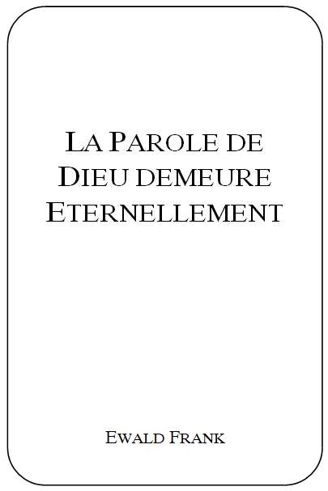
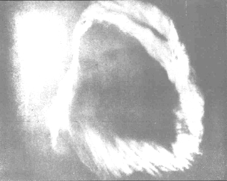

|
 |
Titre
original de louvrage: Auteur: Traduit de lallemand. Tout droit de reproduction,même partiel, est réservé. Editeur |
SEPTEMBRE OCTOBRE 1966
|
Cette colonne de feu au-dessus de la tête de frère Branham est la même qui était avec Moïse et le peuple dIsraël. Cest la même lumière à travers laquelle le Seigneur parla à Saul, lorsquil se convertit sur le chemin de Damas. Cette colonne de feu se maintenait au-dessus de la tête de frère Branham à lheure de sa naissance. Ses parents étaient incroyants. Ils pleurèrent devant le Seigneur, car ils se trouvaient dans Sa présence. Un saint respect les avait saisis lorsquils virent cette lumière de leurs propres yeux. De même, deux jours plus tard, lorsque des membres de la famille arrivèrent pour voir la mère et lenfant, cette colonne de feu se trouvait au-dessus de la tête de lenfant, visible pour tous les assistants. |
{kind=link}
La colonne de feu fut observée pour la première fois en juin 1933 par 4 000 personnes environ. Après que frère Branham eut tenu sa première réunion dévangélisation sous la tente, il y eut pour clore cette manifestation, un service de baptêmes dans le fleuve Ohio tout proche, réalisés conformément aux Ecritures. Plusieurs centaines de personnes furent baptisées. Alors que frère Branham était en train de baptiser la 17ème personne, il pria: «Oh Dieu, comme je baptise dans leau, veuille, Toi, baptiser de feu et dEsprit!». Il était environ 14 heures lorsque tout à coup, la colonne de feu, comme une étoile puissante, visible à tous les croyants et incroyants, surgit des nuages. Toute la foule fut bouleversée. Une sainte crainte sempara de tous. La colonne de feu sabaissa et sarrêta au-dessus de frère Branham. Alors retentit la voix sadressant à frère Branham: «De même que Jean fut envoyé comme précurseur à la première venue du Seigneur, ainsi tu seras envoyé avec un message comme précurseur de la deuxième venue du Seigneur!».
Il ny eut pas que les journaux des USA qui rapportèrent cette formidable apparition, mais ceux du Canada. Le Seigneur Lui-même avait ainsi témoigné en faveur de son serviteur, à la vue de tant de personnes.
Puis arriva ce mois de janvier 1950, lorsque frère Branham parla au grand Colisée à Houston, Texas. Un photographe, Mr. Ayes devait prendre quelques photos commandées par le Rev. Best. Ce dernier, adversaire de frère Branham, se déclarait contre son message et niait que Dieu guérit les malades encore aujourdhui. Le photographe prit 10 instantanés. Aucun ne réussit, excepté celui révélant la colonne de feu au-dessus de la tête de lhomme de Dieu. Comme cette photo laissait voir une apparition surnaturelle, elle fut envoyée au chef du F.B.I. (abrégé connu de la police criminelle américaine), Dr. George G. Lacy. Il examina cette photo sous tous les rapports. Il déclara ensuite par écrit que cette photo était véritable et, à sa connaissance la seule sur terre qui présentât une apparition surnaturelle. Depuis lors, elle prouve que le Dieu de Moïse est aussi le Dieu de Branham et que le Dieu dIsraël est encore aujourdhui le Dieu de Son peuple. On peut obtenir une copie de cette photo de 20x25 cm, chez Douglas Studio 1610 Rusk Ave. Houston, Texas.
Chers frères et soeurs, chers amis! Ceci nest point une invention pieuse, cest une réalité dans le vrai sens du mot, quelque chose que nous pouvons tenir dans nos mains et voir de nos propres yeux. Trop de choses se sont manifestées pour que nous puissions passer outre sans y prêter attention, tout en sachant que les dons et les appels de Dieu sont irrévocables. Et quand Dieu donne, cest pour tous les enfants de Dieu. Ainsi donc, un homme vivait dans notre génération; Dieu lavait élu prophète dès sa naissance, vocation semblable à celle que nous trouvons dans Jérémie 1.5. Un homme se souvenant des visions quil avait à lâge de 3 ans. Toute sa vie fut consacrée au service de Dieu. Il avait 7 ans quand le Seigneur lui parla à travers un tourbillon qui agitait la cime dun arbre sous lequel il se reposait: «Ne bois jamais, ne fume jamais et ne souille ton corps d'aucune manière à cause de loeuvre à accomplir quand tu seras plus âgé».
Qui est cet homme que le Seigneur pouvait de façon si exceptionnelle employer et bénir? Un homme sans culture, simple et humble. Il parla dans les assemblées les moindres, aussi bien que dans les plus grandes. Il est peu probable que quelquun dautre ait parlé à une assemblée de 400 000 personnes. Certainement jusquà ce jour, il nest encore arrivé nulle part ailleurs ce qui se produisit après lune de ses réunions à Durban, en Afrique du Sud. Sept camions bourrés de lits, de brancards, de cannes et de béquilles firent le tour de la ville, accompagnés dune multitude qui chantait: «Crois seulement, crois seulement, tout est possible à celui qui croit». Qui est cet homme qui avait compassion des pauvres et qui fut invité par plusieurs souverains et hautes personnalités? Même le dernier roi dAngleterre Georges VI le sollicita de prier avec lui, ce quil fit pendant une escale en Angleterre lors de son voyage vers la Finlande.
Navons-nous pas compris Dieu? Est-ce que se réaliserait ce qui est écrit dans 2 Chronique 36.15-16: LEternel, le Dieu de leurs pères, leur avait envoyé sans cesse et à maintes reprises des messagers pour les avertir, car il voulait épargner son peuple et son Tabernacle. Mais ils se moquèrent des envoyés de Dieu, ils méprisèrent ses paroles et se raillèrent de ses prophètes, jusquau temps où la colère de lEternel éclata contre son peuple, au point quil ny eut plus de remède.
Voici une autre preuve, que nous voyons de nos yeux. Un immense nuage, duquel a retenti la voix du Seigneur. Cette preuve aussi nest pas une pieuse supercherie. Elle est aussi une preuve que Dieu le Seigneur est encore le même. Le 22 décembre 1962, le frère Branham vit dans une vision ce qui se réalisa le 28 février 1963. (Soit dit en passants quelques jours auparavant en décembre 1962, javais parlé avec le frère Branham.) Le 30 décembre, le frère Branham raconta à lassemblée de Jeffersonville ce que le Seigneur lui avait montré dans la vision. Obéissant à une divine directive, il déménagea au commencement de janvier 1963 avec sa famille à Tucson en Arizona. A la fin de février 1963, il prit deux frères avec lui et se rendit dans la montagne du nord de Tucson, Arizona, nommée «montagne aux 7 collines». A cette époque, il passait beaucoup de temps seul avec Dieu. Il dit aux frères que ce quil avait vu saccomplirait et il les exhorta en disant comment ils devaient se comporter lors de son accomplissement. Puis, il les laissa en arrière et sen alla seul.
Maintenant arriva ce que nous pouvons comparer avec 1 Rois 19.10-14. Oui, le Dieu dElie est encore le même!
Soudain une violente tempête éclata, arrachant des morceaux de rochers qui roulèrent avec fracas, brisant des arbres et en déracinant dautres. Ensuite suivit un formidable grondement de tonnerre qui ébranla toute la contrée.
|  |
|
Le 28 février 1963, peu avant le coucher de soleil, le Seigneur parla à frère Branham de ce nuage comme il le lui avait été montré par Dieu dans une vision le 22 décembre 1962. Cette photo fut prise dune distance denviron 425 kilomètres par le météorologue Dr. James McDonald de Tucson, Arizona. Remarquez, je vous prie, que la photo montre nettement le visage du Seigneur, malgré lénorme distance. Le Life Magazine, certainement le plus grand hebdomadaire du monde, publia la photo du nuage avec un rapport le 17 mai 1963. Dr. James McDonald écrivit quil sagissait dun phénomène encore jamais observé! Dieu a parlé, qui nécouterait pas? |
Il parut aux témoins oculaires que les montagnes montaient et descendaient. Ensuite vint le silence. Là-haut, où seul se trouvait le frère Branham, une puissante lumière en forme de nuage était suspendue. De cette lumière sortirent sept anges chargés dautorité qui, après avoir accompli leur mission, disparurent dans la lumière. Alors, du nuage, la voix parla à frère Branham: «VA VERS LEST, RETOURNE A JEFFERSONVILLE, DOU TU ES VENU, CAR LE TEMPS EST ARRIVE POUR OUVRIR LES SEPT SCEAUX».
Le Seigneur parla à son serviteur, de bien dautres choses. Entre autres, il lui fut révélé ce que les sept tonnerres avaient annoncé (voir Apoc. 10.7). Le nuage se maintint pendant un temps considérable. Il fut vu par un grand nombre de personnes et même photographié. Cette photographie-ci, a été prise par le météorologue Dr. James McDonald le 28 février 1963, depuis linstitut de Tucson, Arizona. Peu de temps avant le coucher du soleil, le ciel était bleu, sans aucun nuage. Life Magazine, un des plus grands hebdomadaires du monde, relève le 17 mai 1963 le rapport du docteur James McDonald: le nuage avait une hauteur de 42 km et une largeur de presque 50 km. Il nentre pas dans ma tâche présente danalyser les détails, pourtant un fait encore en rapport avec cet événement vaut la peine dêtre mentionné. Lorsque frère Branham parla des sept sceaux (du 17 au 24 mars 1963), il attesta que de la colonne de feu formée chaque jour dans sa chambre pendant un instant vers 15 heures, le Seigneur lui révéla la signification exacte de ces sceaux. (Un sceau chaque jour du 17 au 24 mars 1963.)
Dieu a exécuté une telle abondance de faits dans un temps très court. Ce quIl a fait dans cette génération nest encore jamais arrivé. Pensons à lexpérience de frère Branham en 1946. Un ange du Seigneur se présenta à lui à 11heures du soir environ, le 7 mai 1946 et revint souvent. Il parla ainsi: «JAI ETE ENVOYE DE LA PRESENCE DE DIEU VERS TOI, POUR TE DIRE QUE LA FIN DES TEMPS EST ARRIVEE. DIEU TA DONNE UN DON DE GUERISON POUR LHUMANITE. AUCUNE MALADIE NE DOIT RESISTER A TA PRIERE, MEME PAS LE CANCER, SI TU RESTES HUMBLE ET OBEISSANT DEVANT LE SEIGNEUR, ET ARRIVERAS A TE FAIRE ECOUTER ET LES HOMMES TE CROIRONT». Lange du Seigneur lui enseigna de quelle manière le premier don seffectuerait. Dans peu de temps, un deuxième don, soit le discernement serait ajouté. Au moyen de ce don, par révélation divine, les particularités se rapportant aux hommes pour lesquels il devait prier lui seraient montrées. De fait, il pouvait dire aux gens leurs noms, la nature de leurs maladies, de quel pays ils venaient, combien de fois ils avaient été opérés, dans quelle ville et quelle rue ils habitaient, etc. etc. Moi-même jai pu le constater à maintes reprises. Jose dire devant Dieu que jamais aucun homme neut ce don si ce nest le Seigneur. Lui seul était à même de dire à Nathanaël où il se trouvait avant que Philippe lappelât, et à la Samaritaine au puits: Tu as eu cinq maris et celui que tu as maintenant nest pas ton mari. Ce don fut toujours en évidence dans loeuvre du Seigneur.
Quel but Dieu visait-Il? Voici un homme qui peut présenter cinq certificats médicaux attestant que des morts sont ressuscités pour lesquels un acte de décès avait été établi par les médecins. En tout, selon le témoignage du frère Branham, il y eut sept résurrections. Des gens rongés par le cancer ont été guéris. Des sourds, des muets, des estropiés ont été guéris. Même des aveugles-nés ont trouvé la vue. Jen suis aussi témoin.
Maintenant, beaucoup demanderont: «Pour quelle raison navons-nous rien appris de toutes ces choses auparavant?». Je vous en prie, demandez-le à vos prédicateurs qui, pour différents motifs ont tu ce que Dieu a fait. La plupart ne savent pas ce quest un appel divin, encore moins ne lont expérimenté. Ils disent: «Nous avons reçu le Saint-Esprit». Eh bien, si seulement ils lavaient reçu: tout se conformerait à lordre divin. Alors saccomplirait ce qui est écrit dans Jean 16.12-15. Voici le premier signe quun homme a réellement reçu lEsprit selon la parole du Seigneur: LEsprit de vérité le conduit dans toute la vérité. Pas seulement dans quelques vérités, mais dans tout les desseins de Dieu. Et plus loin il est écrit: Il dira tout ce qu'il aura entendu et ils vous annoncera les choses à venir. Celui qui a réellement reçu le Saint-Esprit doit aussi savoir que chacune des 7 lettres de lApocalypse a été adressée à lange en charge de lEglise. Cet ange a donc le devoir dannoncer la parole à lEglise. Car il est chaque fois répété: Que celui qui a des oreilles entende ce que l'Esprit dit aux églises. Oh! combien grande est lignorance à ce sujet au sein des assemblées. Celui qui a le Saint-Esprit, celui-là sait aussi que Dieu a placé dans son Eglise des prophètes et aussi longtemps que lEglise est ici, elle reste telle que le Seigneur la décidé. Voir entre autre Ephésiens 4.11 et 1 Corinthiens 12.28. Par cette parole, on nentend absolument pas ceux qui prophétisent partout suivant leurs désirs, parcourant monts et vaux. Non, ce doit être une personne appelée et consacrée par Dieu. Celui qui a le Saint-Esprit doit aussi savoir quil est écrit dans Amos 3.7: Car le Seigneur lEternel ne fait rien sans avoir révélé son secret à ses serviteurs les prophètes.
Dieu est toujours lié à Sa Parole. Il veille à son accomplissement. Ainsi le lit-on dans Jérémie 1.12. Dieu na-t-il pas toujours eu un prophète auquel il pouvait révéler son dessein quand devait arriver un événement particulier? A ce sujet on pourrait citer une longue liste de noms du commencement des temps jusquà nos jours.
Alors pourquoi le Seigneur devrait-Il changer son principe en ces jours, avant le plus grand événement lenlèvement de lEglise et ne pas aussi envoyer un prophète qui précède Sa venue. Oh! si, Il envoie à notre époque selon Malachie 4.5: Elie le prophète avant que vienne le jour grand et redoutable de l'Eternel. Comme Jean le premier précurseur du Seigneur a dû mourir par les mains des pécheurs peu de temps avant lachèvement de loeuvre du Seigneur à la Croix de Golgotha, ainsi le dernier précurseur du Seigneur devait-il être enlevé peu de temps avant le perfectionnement de lEpouse et sa réunion avec lEpoux.
Ainsi à notre époque, le mystère de Dieu saccomplit comme Il la annoncé à ses serviteurs les prophètes. Apocalypse 10.7.
Une analyse précise et sincère de la personne de William Branham et de son message de la part de Dieu accompagné de miracles et de signes extraordinaires doit nous convaincre que nous avons réellement à faire à un prophète de Dieu, bien plus que nous avons à faire avec Dieu qui nous a envoyé son messager avant sa deuxième venue.
Je considère mon devoir de répandre le message parmi le peuple par tous les moyens, message que le Seigneur a donné pour la préparation et le perfectionnement de son Eglise. Si Dieu le veut, jéditerai quelques-uns de ces messages dans lesquels seront exposés les points les plus importants et lessence du message de frère Branham basé sur les Saintes Ecritures.
NOVEMBRE
DECEMBRE 1966
(Première
suite)
Je vous salue tous affectueusement dans le nom du Seigneur avec la parole de lEcclésiaste 3.14,15:
Jai reconnu que tout ce que Dieu fait subsiste à toujours: on ne peut rien y ajouter, ni rien en retrancher; et Dieu agit ainsi, afin quon le craigne. Ce qui est, a été autrefois; ce qui sera, a déjà été Dieu fera reparaître le passé qui a fui.
En nous reportant aux réunions tenues avec frère Green, nous pouvons dire avec David: Reconnaissez que le Seigneur dirige merveilleusement ses saints. Avec reconnaissance nous considérons ce que le Seigneur a fait pour beaucoup dhommes parmi ceux qui sont venus de loin et de près pour écouter la Parole de Dieu. Oui, à nos yeux cela parut un miracle de voir venir tant de monde. Dans 12 villes plusieurs milliers entendirent la Parole de Dieu. Le Seigneur distribua sa bénédiction dans une grande mesure. Seule léternité révélera ce qui se passa réellement. Déjà nous avons des lettres de gratitude pour ce que Dieu a fait à beaucoup au bénéfice de lesprit, de lâme et du corps. Un réveil traversa tout le pays au cours duquel les auditeurs furent rendus attentifs à lappel du Seigneur pour ces temps. Dieu ne fait point acception de personne. Il envoya des hommes membres des églises nationales, des églises libres et dautres communautés entendre Sa Parole. Nous ne pouvons que nous écrier: «Nous sommes dans la joie, Dieu a fait pour nous de grandes choses». A Lui seul la gloire!
Au sujet de lapparition du Seigneur dans la colonne de feu au-dessus de la tête de frère Branham, comme elle se présente sur la photo, jaimerais ajouter quelques mots. En janvier 1950, pendant que frère Branham parlait à environ 8 000 personnes à Houston, Texas, le Seigneur descendit dans la colonne de feu. Afin que ceux qui ne veulent pas croire ne puissent pas présenter dexcuse valable devant Dieu, le Seigneur permit quun photographe incrédule photographiât cette apparition. Nous disons souvent Dieu est toujours le même, mais sIl se manifeste de la même manière quautrefois, nous sommes lents à croire. Le Dieu dAbraham et de Moïse na aucun compte à rendre, de quelle façon Il se révèle, ni à quel moment, ni à quelle personne. Il a la puissance et la liberté de se révéler à son gré. Cette révélation spéciale de Dieu dans un nuage et une colonne de feu, nous pouvons la mettre en rapport avec lappel spécial dun prophète spécial, soit Moïse. Cest à lui que fut confiée la mission de conduire hors dEgypte le peuple dIsraël, à la tête duquel le Seigneur Lui-même avançait, dans la colonne de feu. Premièrement Dieu parla à Moïse à travers le feu qui brûlait dans un buisson. (Ex. 3.1-7). Pour que chacun puisse saisir le sens et voir le but de cette révélation pour le peuple de Dieu, nous lisons dans Exode 13.21,22: LEternel allait devant eux, le jour dans une colonne de nuée, pour les guider dans leur chemin, et la nuit, dans une colonne de feu, pour les éclairer, afin quil leur fût possible de marcher de jour comme de nuit. La colonne de nuée pendant le jour et la colonne de feu pendant la nuit, ne cessèrent jamais de précéder le peuple dIsraël. Il est de toute évidence à la lecture de ces deux versets que le Seigneur réside dans la nuée et la colonne de feu, et que Lui-même se tient à la tête de Son peuple pour lui montrer le chemin quil doit prendre.
Dans notre génération Dieu revient dans une colonne de feu. Donc, ce signe sûr devrait nous induire à quitter ce monde (comme Israël quitta lEgypte) pour entrer dans la ville éternelle, dans la nouvelle Jérusalem de Dieu. Plusieurs disent: la Bible ne nous informe pas que Dieu nous enverrait un prophète spécial avant lenlèvement. Faisons abstraction que réellement la Bible nous en parle. Dans le cas dAbraham également. Dieu donna seulement la promesse que ses descendants sortiraient du pays de lesclavage sans parler dun prophète particulier qui en serait linstrument. (Gen. 15.13-16). Nous voyons beaucoup danalogies dans le service de Moïse et celui du frère Branham.
Quand Dieu envoya Moïse, Il lui donna deux signes par lesquels le peuple dIsraël devait croire à sa mission divine. (Ex. 4.1-9). Lorsque lange de lEternel vint à frère Branham le 7 mai 1946, il lui dit: «Comme deux signes furent donnés à Moïse, de même à toi aussi, il sera donné deux signes. Le premier: tu prendras la main droite du malade dans ta main gauche, ensuite de quoi la maladie de cet homme sera visible sur ta main de telle manière que le malade lui-même la verra. Au moment de la guérison, pendant la prière, ta main redeviendra normale, signe que le malade est réellement guéri». Comme deuxième signe, frère Branham reçut le don du discernement et de la révélation, par lequel il pouvait dire aux malades quelles étaient leurs souffrances, leur sollicitation et tout ce que Dieu lui révélait de leur vie. Comme du temps de Moïse, ces deux signes suscitèrent la foi en Dieu et la foi au service et à la mission du prophète son envoyé. Il en fut de même à notre époque. Des millions ont vu ces deux signes se manifester dans le service de frère Branham et reconnurent que Dieu lui avait donné la mission de conduire son peuple hors de lesclavage humain et de le préparer pour limminent retour du Seigneur.
Dans Nombres 12.6-8 nous lisons: Ecoutez bien mes paroles. Sil y a parmi vous un prophète, moi, lEternel, je me fais connaître à lui en vision; je lui parle en songe. Il nen est pas ainsi de mon serviteur Moïse, qui est fidèle dans toute ma maison. Je parle avec lui bouche à bouche, d'une manière visible, et non par énigmes, et il contemple l'image de l'Eternel .
Cette grâce fut particulière à Moïse et le distinguait de tous les autres prophètes. Cela saccorde aussi au cas de frère Branham. Quoique Dieu ait eu beaucoup de messagers oints, nous voyons cependant dans la vie de frère Branham que tout le conseil de Dieu lui était confié, que Dieu lui parla de bouche à bouche et quil lui fut permis de voir une forme de Sa manifestation. Celui qui est au courant de lhistoire de sa vie et particulièrement des révélations du Seigneur dans ses trois dernières années, reconnaît clairement ces faits. (Jen parlerai davantage dans la suite.)
Plusieurs disent que cette prétention nest pas justifiée. Coré de la tribu de Lévi parlait de la même façon. Veuillez lire à ce sujet tout le chapitre 16 des Nombres. Dans le verset 3, nous lisons: Ils se rassemblèrent donc contre Moïse et contre Aaron et ils leur dirent: Cen est assez! Car toute lassemblée, tous sont consacrés, et lEternel est au milieu deux. Pourquoi donc vous élevez-vous au-dessus de lassemblée de lEternel?. Comme Coré qui rassemblait les principaux et les chefs du peuple contre Moïse, ainsi arriva-t-il au temps de Jean et du Seigneur Jésus. Ce furent les scribes, les pharisiens et les principaux du peuple qui se révoltèrent contre eux. Il en est exactement de même aujourdhui. Mais comme Coré et les 250 autres reçurent le châtiment de Dieu, ainsi recevront leur châtiment les adversaires qui se liguent pour empêcher et dénigrer le travail de son prophète élu.
LA MISSION DE FRERE BRANHAM
Celui qui a assisté aux conférences de frère Green les semaines passées, se souviendra quil démontra par les Ecritures que frère Branham était un prophète de Dieu, qui devait venir avant le grand et terrible jour de lEternel, comme il est écrit. Maintenant, il est de mon devoir à mon tour de le prouver par les Ecritures.
Il est écrit dans Malachie 4.5: Je vous enverrai Elie, le prophète avant que le grand et terrible jour de lEternel arrive. Nous avons tous admis, je suppose, que ce passage de la Bible concerne Jean-Baptiste. Pourtant nous devons reconnaître que le grand et terrible jour de lEternel ne sest pas accompli sitôt après le service de Jean, ni jusquà présent, voici bientôt 2 000 ans. Paul dit dans 2 Thessaloniciens 2.2: Ne vous laissez pas si promptement troubler lesprit, ni alarmer par une prétendue inspiration, par quelque parole ou quelque lettre qui nous serait attribuée, comme si le jour du Seigneur était arrivé. Quest-ce que le jour de lEternel? Dieu promet dans les Ecritures quIl nous enverra un prophète avant le jour grand et redoutable du Seigneur. Cependant, nous pouvons voir quà la venue de Jean, cest le jour du salut et de la grâce qui commença (comme il est écrit dans lAncien et le Nouveau Testament), et non pas le jour terrible et redoutable de lEternel: donc cette parole ne fut pas accomplie dans la vie de Jean. Les prophètes écrivirent au sujet du jour du Seigneur. Voici seulement quelques passages: Esaïe 13.6 et 9: Lamentez-vous! Car le jour de lEternel est proche: il vient, comme un fléau déchaîné par le Tout-Puissant. Oui, le jour de lEternel arrive, jour cruel, jour de fureur et dardente colère, qui réduira la terre en désert et en exterminera les pécheurs. Dans Joël nous trouvons même écrit ce qui arrivera avant le jour de lEternel (Joël 2.31): Le soleil sera changé en ténèbres, et la lune en sang, avant que vienne le grand et terrible jour de lEternel. Comparez ce texte avec Apocalypse 6.12, car le jour de lEternel tombe sur le passage relatif au 6ème sceau. Le 5ème sceau concerne le meurtre de 6 millions de Juifs dans la deuxième guerre mondiale, comme frère Branham en fut instruit par Dieu. Ainsi nous nous tenons tout près de la fin du temps de la grâce. Au moment de lenlèvement le jour du salut et de la grâce prend fin, et le jour de la colère et de la rétribution commence. Pierre écrit dans 2 Pierre 3.10 ceci: Cependant, le jour du Seigneur viendra comme un voleur. Alors les cieux passeront avec fracas, les éléments embrasés se dissoudront et la terre, avec les oeuvres quelle renferme, sera consumée. Malachie 4.1 le voit avec la même exactitude: Car voici le jour vient, ardent comme une fournaise .
Paul aussi nous donne une information au sujet de ce jour dans 1 Thessaloniciens 5.2: car vous savez fort bien vous-mêmes que le jour du Seigneur viendra comme un voleur dans la nuit. Au quatrième verset du même chapitre il dit: Mais vous, frères, vous nêtes pas dans les ténèbres; de sorte que ce jour-là ne vous surprendra pas comme un voleur. De ces paroles il ressort clairement que ceux qui marchent dans la lumière de la parole de Dieu seront éclairés par elle et reconnaîtront loeuvre de Dieu. Tous les autres seront surpris, mais pas les élus, car à eux le Seigneur révèle Sa volonté! Ainsi voyons-nous le complet accord du témoignage des saintes Ecritures relatifs au jour du Seigneur, avant lequel Dieu voulut envoyer le prophète Elie.
Revenons maintenant à Jean, la Bible en main, et voyons quels sont les passages qui le concernent (Es. 40.3 et Mal. 3.1). Ils sont en rapport avec Matthieu 3.3: Cest de lui quEsaïe le prophète a parlé, quand il a dit: Une voix crie dans le désert: Préparez le chemin du Seigneur; aplanissez ses sentiers. Jésus Lui-même témoigne quil est bien lhomme selon Malachie 3.1 et lisons dans Matthieu 11.10: Cest celui dont il est écrit: Voici que jenvoie mon messager devant ta face, pour préparer ton chemin devant toi. Nous lisons la même chose dans Marc 1.1-3 et dans Luc 3.3-6. Celui qui le veut, peut déjà voir que les deux passages concernent Jean, mais non pas le passage de Malachie 4.5.
Il nexiste quun seul passage qui parle textuellement de lenvoi dElie et cest celui-là. Chacun doit reconnaître que cest avant le jour du salut et de la grâce que Jean est venu pour préparer le chemin du Seigneur. Lui-même en donna un clair témoignage quand il fut questionné à ce sujet, attestant quil nétait pas lElie du passage de Malachie 4.5. Lisons aussi Jean 1.21,22: Qui es-tu donc? lui demandèrent-ils, es-tu Elie? Et il dit: Je ne le suis pas. Es-tu le prophète? Il répondit: Non. Il reprirent: Dis-nous donc qui tu es, afin que nous puissions donner une réponse à ceux qui nous ont envoyés.
Celui qui ne veut pas estimer Jean menteur doit croire ce quil dit, cest-à-dire quil nest pas le Christ, ni le prophète, et non plus Elie. Alors, on lui posa la question, qui était-il donc. La réponse nous la trouvons dans le 23ème verset: Je suis la voix qui crie dans le désert: Aplanissez le chemin du Seigneur, comme la dit le prophète Esaïe. Jean savait exactement qui il était et quels passages bibliques se référaient à lui. Maintenant nous arrivons à cette question, pourquoi Jean fut-il aussi nommé Elie. Lisons les paroles de lange qui sadressait à Zacharie. Luc 1.16,17: Il convertira plusieurs des fils dIsraël au Seigneur, leur Dieu; et lui-même marchera devant le Seigneur, dans lesprit et avec la puissance dElie, pour ramener les coeurs des pères vers les enfants, et les rebelles à la sagesse des justes, afin de préparer au Seigneur un peuple bien disposé. Ici lange dit que Jean viendra dans lesprit et la force dElie pour tourner les coeurs des pères vers les enfants, mais il ne dit pas quil ramènera le coeur des enfants à leurs pères. Pourtant dans Malachie 4.5 il est dit: Je vais vous envoyer Elie, le prophète, avant que vienne le jour grand et redoutable de lEternel. Il ramènera le coeur des pères à leurs enfants, et le coeur des enfants à leurs pères.
Ici se retrouve le mystère analogue à celui dEsaïe 6.1,2 cité à nouveau dans Luc 4.19, verset au milieu duquel le Seigneur sarrête de lire. Pourquoi ne lut-Il pas aussi le passage relatif au jour de la vengeance qui se trouve pourtant dans le même verset? Certainement chacun sait que la première partie concerne sa première venue, mais que la deuxième partie concerne sa seconde venue. Exactement de la même manière lécriture saccomplit sous nos yeux en ce jour. La première partie de Malachie se rapportait à Jean car il tourna les coeurs des pères de lAncien Testament à la doctrine des enfants du Nouveau Testament. LElie qui doit venir avant la deuxième venue du Seigneur à la tâche de tourner à la fin de cette époque les coeurs des enfants de Dieu vers les pères apostoliques.
Nous arrivons maintenant à Matthieu 17.11 où Jésus dit clairement quElie doit venir, quoique Jean fût là depuis longtemps. Il répondit: Il est vrai quElie doit venir et rétablir toutes choses. Cette phrase se réfère à lavenir et concerne Malachie 4.5. Cependant, parce que Jean vint dans lesprit et la force dElie, Jésus dit: Mais je vous dis quElie est déjà venu, et ils ne lont pas reconnu Alors les disciples comprirent que cétait de Jean-Baptiste quil leur parlait (Mat. 17.15). Par quoi le prophète Elie se distinguait-il donc? Par la parole et lesprit et par de puissants miracles. Pouvez-vous voir maintenant pourquoi lange a dit que Jean viendrait dans lesprit et la puissance dElie? Jean avait la parole pour ce temps-là et il était rempli du Saint-Esprit dès sa naissance, mais il ne fit aucun miracle. Mais Elie fit des miracles. Ainsi est justifiée la sagesse de Dieu. Frère Branham comme lElie paraissant avant la deuxième venue du Seigneur fut comme Jean dès sa naissance sous la grâce de Dieu et appelé. Il vint avec la parole et lesprit dElie opérant des prodiges et de puissants miracles.
Avant la deuxième venue du Seigneur se répète ce qui arriva avant Sa première venue, un homme vint, duquel il est dit quil fut plus quun prophète. Matthieu 11.9. Pour cette raison nous comprenons aussi pourquoi lors du baptême dans le fleuve Ohio en juin 1933, se répéta pour frère Branham ce qui est arrivé pour Jean au Jourdain. De même que Jean était debout dans leau et baptisait, lorsque le signe descendit du ciel et la voix se fit entendre.
En avril de cette année jai encore rencontré des gens qui étaient présents en juin 1933 lorsque cette puissante lumière descendit et que la voix retentit: «De même que Jean précéda ma première venue, ainsi tu précèdes ma deuxième venue ». Moi-même je men fus à lendroit du fleuve Ohio où cela arriva.
Maintenant retournons à la mission divine confiée à ce prophète, la mission quil devait exécuter pour le rétablissement de toutes choses (Marc 9.12). Dans les assemblées du plein évangile, on a souvent mentionné la parole du prophète Joël se rapportant au rétablissement de toutes choses (Joël 2.25). A ce sujet on est pleinement daccord que lEglise doit être rétablie, comme elle létait au commencement à la Pentecôte. Dans les Actes des apôtres 3.21 il est dit de Jésus: que le ciel doit recevoir jusquaux temps du rétablissement de toutes choses dont Dieu a parlé par la bouche de ses saints prophètes . Ici nous avons la preuve que Jésus et Pierre aussi parlaient du rétablissement de lordre divin dans lEglise selon le modèle primitif. De cette manière sopérerait le rétablissement. Tous deux diront les choses après que loeuvre de Jean fut terminée, donc il ne pouvait pas être lElie qui devait tout rétablir. Cest pourquoi il est important découter la Parole de Dieu, telle quIl la révélée à Son prophète dans ces derniers temps, selon laquelle tout doit être réparé et rétabli.
JANVIER
1967
(Deuxième suite)
Cordialement je vous salue tous au nom du Seigneur avec cette parole de 1 Chronique 29.11:
A toi, ô Eternel, la grandeur, la force et la magnificence léternité et la splendeur; car tout ce qui est dans les cieux et sur la terre tappartient.
Je suis fortement impressionné par les échos du message du Seigneur, car de lEst à lOuest, du Sud au Nord de notre pays, ainsi quen Suisse et en Autriche, la Parole du Seigneur a été très appréciée et bien accueillie. Nous voyons saccomplir textuellement cette vérité: la parole de Dieu ne retourne pas à vide, mais exécute ce quelle était destinée à accomplir. On a limpression que des milliers ont attendu avec un ardent désir dentendre un tel message. Quant à moi, ma foi est fortifiée particulièrement quand je lis chaque jour des piles de lettres qui expriment la reconnaissance des gens. En effet, javais quelquappréhension que les gens ne puissent assimiler cette forte nourriture spirituelle et comprendre les profonds mystères de Dieu révélés au frère Branham. Ne peuvent les comprendre que ceux à qui Il les révèle. Paul, ce grand homme de Dieu écrit dans Colossiens 2.2,3: afin que leurs coeurs soient consolés et quils soient unis dans la charité, pour être enrichis dune pleine certitude de lintelligence, de manière à connaître le mystère de Dieu, le Christ. Il est bouleversant de voir de quelle manière Dieu le Seigneur a révélé le mystère de Sa divinité à Son serviteur et prophète, ainsi quil lest présenté dans le livre de frère Branham «Exposé sur les sept âges de lEglises». Oui, le mystère de Dieu est auprès de ses saints.
Dans cette suite, je veux rapidement expliquer comment je suis arrivé à diffuser le message apporté par frère Branham dans son ministère. Jai entendu frère Branham pour la première fois en 1955 à Karlsruhe. Là, je fus témoin de la puissance par laquelle Dieu confirme Sa parole au moyen des signes qui laccompagnent et cela je ne lavais jamais vu auparavant. Je fus convaincu quici un homme de Dieu parlait avec pleine autorité divine par loeuvre de Dieu. Les années suivantes nous les avons passées de lautre côté de locéan et eûmes loccasion de faire plus ample connaissance avec frère Branham ainsi quavec sa famille. Depuis 1958 je sais quil navait pas seulement un ministère dévangéliste pour ce monde, mais celui de prophète de Dieu pour la préparation et le perfectionnement de lEglise.
Le 2 avril 1962, jentendis la voix du Seigneur. Je veux faire remarquer que jentendais cette voix avec mes oreilles tout naturellement et non pas avec mon coeur, mon âme ou mon esprit, comme si le Seigneur se tenait à trois mètres de moi. Il parla dune voix forte mais ne sonnant pas comme une trompette, disant les mots suivants: «Mon serviteur, ton temps dans cette ville est bientôt écoulé, je tenverrai dans dautres villes pour annoncer ma parole». Ensuite, je me vis debout en dehors de mon corps et je dis: «Seigneur, on ne mécoutera pas. Ils vivent dans les excès et possèdent tout en surabondance».
Après quoi le Seigneur me répondit: «Mon serviteur, le temps vient où ils técouteront. Une grande famine arrive. Faites des provisions, car tu dois être au milieu du peuple et lui distribuer de la nourriture». Le Seigneur me donna encore quelques détails qui ne concernent que moi. Je ne puis décrire quelle autorité et quelle assurance il y avait dans cette voix. Je me disais: «Si cette voix retentit encore une fois, la terre entière simmobilisera». Je ne vis ni lumière ni forme.
Dans le courant de lannée 1962, mon désir de savoir exactement ce qui devait arriver devenait toujours plus fort. Je priai Dieu et résolus de mouvrir à frère Branham à ce sujet. Au mois de décembre 1962, je menvolai de lautre côté et pus le rencontrer. Nous étions assis avec 4 frères autour dune table. Frère Sothmann et frère Woods étaient lun vis-à-vis de lautre et frère Branham vis-à-vis de moi. Après quil nous eut parlé un bon moment je devins un peu impatient, car cette question brûlait dans mon coeur. Toute autre chose ne mintéressait pas en ce moment. Jinterrompis: «Frère Branham, je voudrais te demander quelque chose » je ne pus continuer car il disait: «Dois-je te dire ce que le Seigneur ta dit?». Jétais assis là, jécoutais et nosais en croire mes oreilles lorsquil répéta tout mot pour mot, phrase après phrase dans leur suite exacte. Et non seulement cela mais il révéla les pensées de mon coeur, car je pensais quune famine terrestre passerait à travers le pays pour humilier les hommes. Mais frère Branham dit: «Frère Frank, la faim dont il sagit nest pas une faim physique. Non il viendra une grande faim de la vraie Parole de Dieu. La nourriture dont vous devez vous inquiéter sont les bandes denregistrement, sur lesquelles la parole est inscrite. Avant de commencer la distribution attendez jusquà ce que vous ayez reçu le solde des aliments».
Jésus disait à ceux qui avaient cru: Si vous demeurez dans ma parole, vous êtes véritablement mes disciples; vous connaîtrez la vérité et la vérité vous affranchira (Jean 8.31,32). Jésus dit aussi: Celui qui est issu de Dieu écoute les paroles de Dieu (Jean 8.47). La question se pose maintenant, quest-ce que la vérité? La réponse valable éternellement déclare: La Parole de Dieu est la vérité.
Personne encore ne prévoyait de quelle manière le Seigneur exécuterait ce que disait le frère Branham. Pour moi, cest une chose certaine depuis que nous avons reçu les derniers enregistrements des prédications de frère Branham, le temps de la distribution nest pas éloigné. Aussi le Seigneur se chargera-t-il douvrir dautres portes dans dautres villes afin que beaucoup encore entendent la véritable Parole de Dieu. Selon lordre divin, je parlerai prochainement dans différentes villes.
Nous vivons lépoque dans laquelle la gloire du Seigneur est rétablie parmi ses saints. Il est la tête de son Eglise, ainsi que Paul le dit souvent. Celui qui fait partie de son Eglise doit laisser le Seigneur décider et agir selon son plan établi.
Nous terminions dans la dernière brochure avec la mission de frère Branham qui, en tant que prophète de Dieu, selon les Ecritures doit amener le rétablissement de toutes choses. A ce sujet nous lisons dans Jean 1.6,7: Il y eut un homme envoyé de Dieu dont le nom était Jean. Il vint pour être témoin, pour rendre témoignage à la lumière, afin que, par lui, tous fussent amenés à la foi. Cétait quelque chose dextraordinaire. UN homme apparut. Pas un groupe dhommes mais UN homme envoyé de Dieu, au sujet duquel nous lisons que par lui tous devaient arriver à la foi. Vous pouvez bien juger de lappréciation des scribes du fait que ce nétait pas eux, en tant que confrérie, qui avaient reçu cette mission, mais UN homme. Ainsi en fut-il de tout temps. Cest à UN homme que Dieu révéla quIl voulait détruire la terre par leau. UN homme avait la mission de conduire le peuple dIsraël hors de lEgypte. UN homme savait quil ne devait pas pleuvoir pendant 3½ ans. Nous pourrions continuer ainsi en parlant des prophètes de Dieu et des apôtres du Seigneur.
Nous avons un exemple dans les Ecritures qui illustre le fait particulièrement. Je voudrais le relever ici. Il sagit du prophète Michée. Pour obtenir la compréhension exacte de la relation avec ce sujet veuillez lire tout le chapitre de 2 Chronique 18. Achab avait lintention daller à la guerre avec Josaphat. Lorsque Josaphat voulut connaître la volonté de Dieu en cette matière, Achab fit venir 400 prophètes. Ceux-ci promirent le succès au roi et approuvèrent son projet. Mais Josaphat demanda: Ny a-t-il pas encore un autre prophète par lequel nous pourrions être renseignés?. Ne dirions-nous pas quune telle question est ridicule? Nest-il pas suffisant quil y en ait 400 qui sont unanimes à prédire la même chose? Et pourtant nous pouvons reconnaître de façon évidente que dans ce cas, il nen est pas ainsi.
Achab répondit à Josaphat: Oui, il y en a encore un que nous pouvons consulter, mais je naime pas avoir à faire avec lui, car il ne prend jamais mon parti. Cest Michée. Mais Josaphat voulut entendre Michée, ainsi on envoya un messager le chercher. Nous constatons donc que Michée était un franc-tireur et ne sétait pas allié au groupe des 400.
Lorsque le messager arriva auprès de Michée il lui dit: Les prophètes sont tous dun même avis et, dun même accord prédisant la chance au roi, donc mets-toi de leur côté. Le messager essaya dengager Michée à dire la même chose que le groupe des prophètes. Encore aujourdhui on a la tendance de sattendre de la part dun vrai prophète de Dieu quil saccorde avec la foi et les enseignements dune organisation religieuse. Mais Michée répondit: Aussi vrai que lEternel est vivant, je ne dirai que ce que mon Dieu minspirera.
Arrivé auprès du roi il répéta premièrement ce que tous les autres avaient déjà dit. Mais cela, même Achab, le plus mauvais roi quIsraël nait jamais eu, le remarqua. Il conjura Michée de dire la pure vérité au nom de lEternel. Ce faisant, Achab insinuait que ses 400 prophètes lavaient trompés. Il en est de même à notre époque, ce qui importe, ce nest pas de voir nos doctrines être confirmées mais de connaître la volonté de Dieu, car seule la vérité peut nous affranchir. Michée, le vrai prophète de Dieu ne pouvait pas prophétiser sur la maison dAchab le contraire de ce que le prophète Elie avait déjà annoncé au nom de lEternel. Aujourdhui de même la parole dun prophète doit concorder avec toutes les paroles des prophètes et des apôtres.
Beaucoup naiment pas que je cite souvent le frère Branham. Mais qui peut parler du déluge sans mentionner Noé? Qui peut prêcher sur lexode du peuple dIsraël sans nommer Moïse? Qui peut parler de la préparation du chemin du Seigneur et oublier Jean? En ces temps-ci nous allons au-devant dun événement décisif. Dieu na pas dévié de ses principes, mais à nouveau Il confie ses desseins à UN homme, non pas à un groupe. Il ne fait rien sans le révéler auparavant à Ses serviteurs, les prophètes (Amos 3.7). Puisque le mystère de Dieu arrive dans notre temps à son aboutissement, comme il la révélé à Ses serviteurs les prophètes (Apoc. 10.7) il est absolument nécessaire dans ce chaos provoqué par les hommes que Dieu le Seigneur parle à nouveau à Son peuple au moyen dun prophète désigné par Lui, et le conduise hors de tout égarement. Nous pouvons nous confier en Dieu, et en Ses prophètes, car la Bible dit dans 2 Chronique 20.20: Confiez-vous en lEternel votre Dieu et vous serez affermis; confiez-vous en ses prophètes, et vous réussirez.
Quest-ce quun prophète de lEternel selon les Ecritures? Lisons Deutéronome 13.2-4 et 18.21,22. Nous y trouvons deux signes caractérisant le prophète: ses prédictions doivent se réaliser et il doit rendre le peuple attentif au vrai Dieu. Ces attributs ont toujours été en évidence dans la vie de frère Branham. Ses prédictions se sont révélées véridiques, non seulement en priant avec des milliers de malades mais, en 1933 il prédit 7 événements des temps de la fin, dont 6 se sont déjà réalisés. Nous pouvons les lire dans le livre «Exposé des 7 âges de lEglise».

La sixième sest réalisée cette année: lEglise Catholique en USA étend sa puissance. Nous en avons la preuve par la vente de timbres postaux de Noël sur lesquels on voit Marie assise sur un trône, avec lenfant Jésus dans les bras; celui-ci touche de ses doigts les pages dun livre de messe catholique que Marie tient dans une main. Toutes les grandes églises protestantes, les Juifs, les Musulmans ont protesté contre ce choix et malgré ces protestations ils ont été diffusés par la direction des postes des USA. Pour nous, cela na pas dimportance, mais celui qui connaît lHistoire de lAmérique sait qua lorigine cétait un pays purement protestant où les hommes sétaient réfugiés pour fuir la persécution de lEglise Catholique romaine. Dans la Constitution des Etats-Unis, il fut fermement prescrit quaucun catholique ne devait jamais être élu président. Mais frère Branham a dit à lavance que Kennedy serait élu.
Il vit aussi à lavance que le pape irait à Jérusalem et aussi en Amérique, lorsque personne ne pensait à cette éventualité. Au cours des siècles, aucun pape navait jamais quitté le Vatican si ce nétait parce quil devait fuir les infortunes de la guerre.
Le 18 mars 1962, frère Branham vit que Billy Graham et Oral Roberts sassembleraient en Allemagne. Ceci est enregistré sur bande magnétique. Il disait à frère Green: «Tu le verras de tes propres yeux». Nous savons quen octobre de cette année une semaine dévangélisation mondiale fut organisée à Berlin. Parmi les 1 200 délégués figurait aussi Oral Roberts. Frère Green, présent ici à cette époque, a vu de ses propres yeux le 26 octobre ce quavait prédit frère Branham. Il parla à Berlin avec Roberts et Graham, preuve aussi que dans la volonté de Dieu frère Green devait être invité en Allemagne.
Nous avons relevé quelques-unes seulement des prédictions de frère Branham, prédictions qui se réalisèrent pleinement. Un prophète doit aussi conduire les hommes à Dieu et ne pas prêcher dautres dieux. Cest bien ce que nous voyons dans le service de frère Branham. Il prêcha le seul et unique vrai Dieu et en effet il Lui amena des centaines de milliers dâmes.
Si nous réfléchissons à tout ce que Dieu fit dans ces temps, nous savons alors que Dieu se révéla dune manière puissante, pour attirer notre attention vers ce quIl veut nous communiquer.
Le nuage duquel le Seigneur parla à frère Branham apparut le 28 février peu de temps avant le coucher du soleil. Selon la description quen fit le Dr. James McDonald, météorologue à lUniversité de Tucson, Arizona, il était encore visible 28 minutes après le coucher du soleil. Pour tous les lecteurs de la Bible, un pareil phénomène ne représente rien de nouveau. A part les nombreuses fois que pareils faits sont mentionnés dans lAncien Testament, il en est aussi parlé dans le Nouveau Testament. Pensons seulement à ce qui se passa sur la montagne de la transfiguration (Mat. 17.1-8). Certainement tous connaissent le passage dans les Actes des Apôtres 1.9 où le Seigneur monta au ciel dans une nuée. Dans les Actes des Apôtres 1.11 il est indiqué quIl reviendra de la même manière. Matthieu 24.30 nous dit que le signe du fils de lhomme paraîtra au ciel dans un nuage. Quant à moi, je suis convaincu que Dieu sest manifesté à Son prophète aux yeux du monde entier. Je nhésite aucun instant de me rallier à un tel homme approuvé par Dieu. Celui qui connaît le service de frère Branham sait quil a travaillé comme évangéliste jusquen 1961. Puis, instruit directement par Dieu il reçut la mission de ne plus évangéliser, mais dinstruire lEglise en ce qui la concerne.
En premier lieu, frère Branham parla des 7 âges de lEglise. Il en fit un dessin sur un tableau, pour illustrer ce que le Seigneur lui avait montré. Le septième jour, juste avant la fin de la réunion, lange de lEternel apparut sur lestrade, visible à tout lauditoire. Il sempara de la craie avec laquelle le frère Branham avait fait le dessin et devant les yeux de tous, il traça les mêmes lignes. Par ce moyen, Dieu Lui-même témoignait quil ne sagissait pas de limagination dun homme mais de la révélation de Dieu. Le dessin se trouve reproduit dans le livre de frère Branham.
Le Seigneur lui dit encore que le temps des nations était sur le point de prendre fin, et quIl se révélerait au peuple dIsraël. Mais comme les Israélites ne doivent et ne peuvent croire quà un seul Dieu, il faut premièrement que lEglise parvienne à reconnaître que véritablement Dieu nest quun, même sIl sest révélé comme Père, Fils et Saint-Esprit. Pour cette raison, frère Branham insistait sur ce point: Jésus-Christ est le Seigneur, le Dieu Tout-Puissant, révélé en chair. Il est Emmanuel, Dieu avec nous. Comme les Israélites ne le reconnurent pas quand Il arriva chez les siens, et le repoussèrent parce quils ne pouvaient comprendre que Jésus était leur Seigneur et que seuls les élus le crurent, il en est de même aujourdhui. La grande masse du peuple de Dieu refuse dadmettre que Jésus est le Seigneur, mais les élus croient en Lui comme le présentent des Ecritures.
FEVRIER
1967
(Troisième
suite)
Je vous salue tous cordialement au nom du Seigneur avec ces paroles dEsaïe 48.6-8:
Tu as entendu mes prédictions. Les voilà toutes réalisées. Et maintenant, ne le proclamerez-vous pas vous-mêmes? Je vais désormais révéler des événements nouveaux, encore cachés et inconnus de toi. Cest maintenant quils vont se produire et non dans le passé; avant ce jour tu nen as rien su, de sorte que tu ne pourras dire: Je le savais bien! Non, tu nen as pas été informé, tu nen as rien su et la nouvelle nen est pas parvenue jusquà ton oreille; .
Dieu a dirigé les choses dune manière telle que le message fut diffusé en un court laps de temps en Europe et dans les pays doutre-mer. Nous avons envoyé sur demande 20, 30, 50 même 100 exemplaires à de nombreuses adresses. Le Seigneur emploie Son peuple pour que Sa Parole soit répandue. De cette manière les élus de Dieu sont renseignés en dernière heure avant la venue du Seigneur sur ce que Dieu a fait aujourdhui. Celui qui a encore quelque peu la crainte de Dieu dans son coeur, sait que le Seigneur sest puissamment révélé dans notre génération. Celui qui connaît la Bible sait aussi que nous sommes tout proches de la venue du Seigneur. Il convient maintenant que lEglise, Son Epouse soit réveillée et préparée.
De nombreuses personnes ne peuvent encore comprendre pourquoi je fais spécialement mention de frère Branham et pourquoi je prends fréquemment parti pour lui, cest-à-dire pour son message quil apporta de la part de Dieu. Mais, quand dans la suite vous entendrez tout ce que Dieu a révélé à son serviteur, vous reconnaîtrez combien ce message est important et quil est en relation directe avec les ordres de Dieu. Réfléchissons à ce seul fait. Cet homme de Dieu se basant sur une vision a pu dire 10 000 fois «ainsi parle lEternel», sans que jamais quelque chose se révélât une erreur: avant son départ il déclara: «Si une personne seulement dans le monde entier peut prouver quune révélation ne soit pas juste, même partiellement, je suis daccord quon me prenne pour toujours comme faux prophète». Il disait souvent: «Dieu ne peut se tromper, ce quIl me montre, je puis le dire sans hésitation». Cest bien ce dont nous avons besoin, cest-à-dire que seul celui qui a réellement reçu une révélation de Dieu puisse dire: «Ainsi parle lEternel». Cest précisément parce quaujourdhui beaucoup suivent leur propre esprit et prennent les pensées de leur coeur pour message de Dieu que le respect de Dieu a disparu parmi les hommes. Mais le Seigneur est fidèle. Il rétablira toute chose.
En juin 1933 le frère Branham vit en vision les événements de la fin des temps. Il vit que tout était rasé à même le sol. Il voyait du feu et de la fumée jusquà ce que tout fût en cendres. Frère Branham disait depuis ce jour que tout ce qui ne sest pas encore réalisé le sera entre les années 1933 à 1977. Ici je dois souligner que frère Branham na jamais dit que lenlèvement aura lieu à cette époque. Personne ne sait quand le Seigneur revient, cest bien pour cela quil nous est dit de prier. Mais si la terre et ses oeuvres seront brûlées entièrement, selon 2 Pierre 3.10, alors nous savons tous que lenlèvement est absolument imminent, car avant que les jugements de Dieu natteignent cette terre, il faut que lEglise soit enlevée.
Il est évident quavec lapparition de Jean-Baptiste sur terre les Ecritures sapprochent de leur accomplissement. Tous les prophètes avaient prophétisé jusquà cette époque. 4 000 ans sétaient écoulés, mais en une seule génération, allait saccomplir ce qui avait été prédit tout au cours de milliers dannées. Il en est aussi de même maintenant. Pendant 2 000 ans tous les vrais croyants ont attendu la venue du Seigneur, mais maintenant le temps est accompli. Avec lentrée sur scène du précurseur de la deuxième venue du Seigneur, nous sommes arrivés tout près de laccomplissement de toutes les promesses annoncées.
A ce sujet nous avons des directives bibliques exactes. Nous navons quà penser aux paroles de Jésus au sujet du figuier (Mat. 24.32-34). Le passage qui concerne le retour de peuple dIsraël, sest accompli sous nos yeux. Le Seigneur disait textuellement: Cette génération ne passera pas, jusquà ce que tout soit accompli. Dans le texte original comme dans presque toutes les langues le mot génération est employé. La concordance aussi traduit de cette façon. En bon allemand, cela veut dire: «La génération qui vivra à lépoque du retour dIsraël dans sa partie, aura la preuve que tout se réalise sous ses yeux». Nous ferons remarquer que le drapeau dIsraël avec létoile de David flotta le 7 mai 1946 pour la première fois après plus de 2 000 ans. Le même jour à la même heure un ange de lEternel vint vers frère Branham, lui donna lordre de partir prêcher la parole de Dieu. Entre autres lange lui dit: «Dis aux hommes que leurs pensées résonnent plus fort au ciel que leurs paroles ne le font sur la terre».
Il ny a pas de doute: le temps est proche où nous pouvons réellement compter sur le retour du Seigneur. Ce serait ici la place où pourrait être relevées de nombreuses prédictions qui se sont réalisées dans notre génération. Pensons à Zacharie 14.1-5, où lon nous dit que Jérusalem appartiendra à moitié aux ennemis et à moitié au peuple dIsraël. Cela ne sest-il pas passé sous nos yeux? Ensuite il est dit: Dans ce temps-là le Seigneur sortira et Il posera ses pieds sur le Mont des Oliviers . Malheureusement il ne mest pas possible, dans le cadre de ce traité dentrer dans les détails.
Pour avoir une vue densemble de lépoque à laquelle nous vivons nous devons connaître la répartition biblique du temps. Dieu créa le monde en six jours, le septième jour Il se reposa. Nous lisons dans lAncien Testament comme dans le Nouveau, quun jour aux yeux de Dieu est comme 1 000 ans. DAdam à Abraham il y a 2 000 ans et à nouveau 2 000 ans dAbraham jusquà Christ. Ensuite depuis Christ jusquà nos jours nous avons bientôt 2 000 ans, ensemble cela fait presque 6 000 ans. Le septième millénaire sera le jour de repos de lEternel, le règne de mille ans. Il est aussi écrit: à cause des élus, les jours seront abrégés. Nous en pouvons déduire que ce siècle ne sera pas complètement écoulé avant le retour de Jésus-Christ. Cela correspond à ce que frère Branham vit en 1933. Quoiquil en soit, il est plus tard quon ladmet généralement. Nous ne disons pas cela pour établir une spéculation sur le temps et lheure, mais seulement pour secouer le peuple de Dieu et le réveiller. Daprès les saintes Ecritures, tous sendormirent, mais alors à minuit retentit le cri: Lépoux arrive, préparez-vous pour aller à sa rencontre. Très peu, si nous prenons en considération la masse des croyants, se rendent compte que cette parole se réalise sous leurs yeux. Pourtant frère Branham a fait un appel puissant en élevant sa voix comme une trompette à travers le monde: Voici lépoux, préparez-vous.
Tout dans ce monde pointe vers son sommet et pousse à prendre une décision. Nous devons observer que toutes les décisions dans ces temps-ci, quelles soient dordre social ou politique, sont prises pour sadapter au programme fixé des derniers temps. Cest pourquoi dans toutes les églises, églises libres, assemblées et communautés chrétiennes, lheure de la décision arrive oui, elle est déjà là à savoir si elles marchent avec léglise du monde ou non. Cela voudra dire faire partie de léglise unie, celle voulue de Dieu et celle pour laquelle Jésus a prié: afin que tous soient un. Vous pourrez dire quil y aura deux sortes dunités. Lune, celle de Dieu avec Christ comme chef, lautre celle du diable avec lantichrist comme chef suprême. Il me semble que la plupart ne se rendent pas compte de tout ce qui est en jeu. Oh, peuple de Dieu, réveille-toi et écoute!
Nous reconnaîtrons bientôt pourquoi Dieu a établi justement à notre époque un prophète, auquel Il pouvait révéler par les Ecritures ce qui arrive dans ces temps-ci. Quoique nous lisions dans Matthieu 24, quil y aura des guerres et des cris de guerres, des tremblements de terre et des famines, cela nest que le commencement des maux. Dans les derniers temps, il paraît quil en sera autrement. Car Paul dit dans 1 Thessaloniciens 5: Quand les hommes diront: paix et sécurité, alors une ruine soudaine les surprendra. Oui, après toutes ces guerres et ces détresses, tous les peuples désirent la paix. Il arrive même que des ennemis historiques deviennent des amis. Ce nest pas un hasard, cest selon les Ecritures. Qui aurait pensé à la possibilité il y a quelques années, quun chef russe baiserait lanneau dun chef de lEglise catholique et serait reçu par lui en audience privée. Dans les cercles chrétiens aussi, se manifeste la tendance de céder au mouvement et de marcher avec le gros tas pour être honoré du peuple. Plus personne na le courage de prendre position pour Dieu et de clouer quelques thèses à léglise dun château (Luther). Même parmi les protestants, personne ne proteste plus. Il semble que nous avons oublié le sang des martyrs assassinés par millions à cause de la parole de Dieu, afin que la vérité ne fût pas complètement étouffée par lerreur. Peuple de Dieu, nous vivons dans un temps où le système de lantichrist est si bien décoré, quil ressemble à un agneau. Mais attendez seulement quand il parlera comme un dragon. (Apoc. 13.11). Voici lépoque dont parle Matthieu 24: que si cétait possible, même les élus seraient séduits. Mais grâce soit rendue à Dieu, cela nest pas possible. Il est grand temps de crier alarme dans la maison de Dieu et quon fasse sonner la trompette, sinon la prophétie du prophète Osée pourrait saccomplir: Le peuple de Dieu périt par manque de connaissance. Grâce soit rendue à Dieu: Il noublie pas Son peuple, Il lui envoie au bon moment la parole appropriée.
Nous comprenons aussi pourquoi le frère Branham fit ressortir les vérités bibliques. Comme prophète de Dieu il navait pas dautres choix que de rester fidèle à la Parole de Dieu jusque dans ses plus petits détails, même si cétait contraire à ce que dautres enseignaient. Il est impossible pour un vrai serviteur de Dieu de chercher à plaire aux hommes et de prêcher ce quils aimeraient entendre. Comme un vrai prophète de Dieu, qui travaille dans lesprit, et la force dElie, il disait: Si le Seigneur est Dieu, servez-Le. Maintenant nous arrivons à la question: le Seigneur est-il Dieu? Pour beaucoup, cela peut paraître enfantin, mais cela nest pas pour tous dune telle évidence. Beaucoup croient que Jésus-Christ est le Seigneur, mais ils ne croient pas que Lui, comme Seigneur est aussi Dieu. Tous ceux qui ont lu le livre de frère Branham et qui le liront, trouveront surtout dans le premier chapitre une puissante thèse sur la divinité. Cest pourquoi jajoute ici quelques mots dexplication.
Au sujet de la divinité, Salomon disait déjà: Mais quoi! Est-il vrai que Dieu habite avec lhomme, sur la terre? les cieux, même les cieux des cieux, ne peuvent te contenir; (2 Chr. 6.18). Donc il ne sagit pas de concevoir Dieu avec lintelligence. Si cela était possible il ne resterait de Dieu plus rien de divin. Aucun des prophètes et des apôtres na réalisé Dieu par lintelligence. Ils ont expérimenté Dieu et le servirent dun coeur sincère. Mais au cours des siècles après Christ, surtout au Concile de Nicée en présence du roi Constantin, la divinité fut présentée sous une forme saisissable par lintelligence, conception à laquelle tous devaient croire. Le peuple de Dieu doit revenir à la conception biblique de Dieu comme au début. Malheureusement même les enfants de Dieu nont pas remarqué quils se représentent Dieu sous la forme que les hommes ont conçue. La divinité est le plus grand mystère. Personne ne connaîtra Dieu, si cela ne lui a pas été révélé par lEsprit et par la parole. Celui qui ne sapproche pas de Dieu dans lhumilité avec un coeur contrit dans la prière, aura de la peine de pénétrer dans les mystères de Dieu.
Nous voulons maintenant rapidement considérer quelques principes. Premièrement nous devons savoir que Dieu dans Sa Parole ne se reprend ni ne se contredit et que lAncien et le Nouveau Testament doivent fondamentalement correspondre. LAncien Testament est le fondement du Nouveau. Nous sommes édifiés sur le fondement des apôtres et des prophètes, Jésus-Christ lui-même étant la pierre de langle (Eph. 2.20). Christ est donc la pierre de langle commune. Il est le centre. Mais pour beaucoup Il est devenu une pierre dachoppement, comme les Ecritures le disent. Les prophètes et les apôtres que nous ont-ils enseigné et que ne nous ont-ils pas enseigné? Cela, cest la question brûlante, car nous ne voulons pas, sachant la venue si proche du Seigneur, suivre des fables sagement inventées, mais nous voulons suivre Dieu et Sa Parole. Tous les prophètes et les apôtres enseignèrent que Dieu est unique, bien quIl se manifestât de différentes manières. Pas une seule fois on ne trouve dans la Bible depuis la Genèse jusquà lApocalypse 22 que Dieu ait été partagé en différentes personnes. Celui qui découvre dans les Saintes Ecritures que Jésus est la deuxième personne de Dieu et le Saint-Esprit la troisième, ou découvre dans la Bible des termes comme Dieu le fils ou Dieu le Saint-Esprit peut blâmer frère Branham et tous les prophètes avant lui. Aucun prophète et apôtre même pas le Seigneur Lui-même ne parlèrent en aucun passage dune trinité. Celui qui trouve une seule fois le mot trinité dans la Bible ou le terme Trinité de Dieu peut écarter le frère Branham en tant que prophète.
Combien de temps encore les enfants de Dieu maintiendront-ils leur conception humaine de Dieu? Celui qui fait dun Dieu trois personnes obtient au résultat trois divinités, car une personne est un être indépendant en soi. Si nous avons trois personnes indépendantes, nous avons alors trois dieux. Chaque personne ayant un esprit, il en résulterait trois Saint-esprit, ainsi de suite. Cest tout simplement effrayant ce que lon fait de Dieu. Le témoignage de Jésus Lui-même est: Moi et le père nous sommes un (Jean 10.30). Tous ceux qui prennent part au repas des noces, ont le témoignage de Jésus (Apoc. 19.10).
Il me semble quon ne devrait pas lire dans la Bible autre chose que ce qui sy trouve, car celui qui y ajoute un mot, renverse léquilibre. Les Saintes Ecritures forment un tout harmonieux. Celui qui y ajoute quelque chose bouleverse tout. Nous devons nous habituer à ne dire que ce que dit la Bible, alors cesse immédiatement la confusion de Babel. Quand tous en auront fini avec leurs idées et leurs imaginations et nenseigneront que ce que les Ecritures enseignent, alors tout dommage sera réparé. Prenons Dieu comme Il est et comme Il se révèle dans Sa Parole. La Bible nous apprend que Dieu est Esprit (Jean 4.24). Comme Esprit Il est omniprésent. Mais comme Esprit personne ne pouvait le voir, alors il se révéla comme le SEIGNEUR. Adam la vu et beaucoup de prophètes. Le Seigneur était Dieu manifesté sous forme visible. La Bible nous apprend quil ny a quun Seigneur. Ce Seigneur unique se révèle dans lAncien Testament sous le nom de Jehova (Jahwe) ce qui signifie Celui-qui-subsiste-éternellement. Dans le nouveau Testament le même Seigneur se manifesta comme homme avec le nom de Jésus, nom qui signifie Jehova est salut. Il est Emmanuel, Dieu avec nous. Paul le résume ainsi: Dieu a été manifesté en chair, justifié par lEsprit, vu des anges, prêché aux gentils dans le monde, élevé dans la Gloire (1 Tim. 3.16). Déjà dans le Psaume 47.6 il est dit que Dieu monte au ciel au milieu des cris de triomphe. Paul dit dans Romains 9.5: qui descendent des patriarches et desquels est issu selon la chair le Christ, qui est au-dessus de tous, Dieu béni éternellement. Amen.
Nest-il donc pas facile à comprendre, que le Dieu unique sest révélé comme Père, Fils et Saint-Esprit? En tant que père, Dieu était au-dessus de nous; dans le Fils, le même Dieu était parmi nous; par le Saint-Esprit, le même Dieu habite en nous. Quant au Seigneur Jésus, Il était le fils de lhomme et le prophète pendant Son ministère sur terre. Comme Fils de Dieu, Il est depuis son ascension le Grand Prêtre; au règne de mille ans, Il sera en tant que fils de David, le Roi. Quil est merveilleux le plan du salut de notre Dieu. Ce qui est nommé Dieu dans lAncien Testament est le Père dans le Nouveau Testament. Ce qui est nommé Seigneur dans lAncien Testament est le Fils dans le Nouveau. De même que le Dieu invisible dans lAncien Testament revêtit la forme visible dun ange comme Seigneur, ainsi le même Dieu, notre Père à tous, sest révélé dans le Nouveau Testament comme Fils. Cest pourquoi Jésus pouvait dire: Celui qui me voit voit le Père. Il faut bien comprendre en lisant la Bible que des quatre Evangiles décrivent Jésus depuis Sa venue sur terre jusquà Son départ. Dans les Epîtres Il est dépeint comme Fils de Dieu qui est tout en tous. Dans lApocalypse nous le voyons comme lalpha et loméga, comme le premier et le dernier, qui était et qui est, Celui qui vient, le Tout-Puissant (Apoc. 1.8).
Des millions remercieront Dieu éternellement de ce quIl a envoyé son prophète dans le seul but de sauver le peuple de Dieu de la Babel confusion que les hommes ont élaborée. Il est tout simplement merveilleux de réaliser comment le Seigneur ouvre lintelligence des siens pour comprendre les Ecritures. Depuis le temps de Luther, le Seigneur, conscient du but, na pas cessé de diriger son Eglise vers un retour au christianisme primitif. En effet, Dieu donna grâce sur grâce, connaissance sur connaissance, et y employa divers instruments. Maintenant nous avons atteint le point où lEglise du Seigneur sera affranchie de fond en comble du dernier reste de vieux levain de Rome, afin quelle soit un sujet de louanges à sa merveilleuse grâce, et quelle soit présentée irréprochable devant sa face. Celui qui appartient à lEglise son épouse se lèvera pour aller à la rencontre de son Dieu. Si Dieu le permet, dans la prochaine suite, japporterai quelques explications à ce sujet: pourquoi le frère Branham a été rappelé si subitement par le Seigneur.
MARS
1967
(Quatrième
suite)
Je vous salue tous cordialement dans le nom précieux du Seigneur Jésus par la parole dEsaïe 60.1,2:
Lève-toi, fais éclater ta splendeur! Car ta lumière est apparue et la gloire de lEternel sest levée sur toi. Oui, les ténèbres couvrent la terre et lobscurité couvre les peuples; mais sur toi se lèvera lEternel et sur toi resplendira sa gloire.
Cette parole est tout à fait merveilleuse. La lumière de Dieu brille au sein des ténèbres. Paul lexprime ainsi: 2 Corinthiens 4.6: Car Dieu qui a dit: Que la lumière brille du sein des ténèbres! a fait aussi briller sa lumière dans nos coeurs, pour que la connaissance de la gloire de Dieu resplendisse en la personne de Jésus-Christ. Personne ne devrait passer trop rapidement sur de si précieuses vérités. Mais chacun devrait sy plonger et les méditer. Tout dépend de lattitude que nous prenons quand nous lisons la Parole de Dieu. Que Dieu nous aide et quIl donne Sa grâce!
Ce message merveilleux résonne comme un puissant coup de trompette à travers lEurope. Des paquets de lettres exprimant lintensité de la joie et de la reconnaissance arrivent tous les jours. Ces encouragements ne viennent pas seulement du peuple, mais aussi de prédicateurs, évangélistes et pasteurs. Voici ce quécrit littéralement un pasteur: «Je me réjouis de ce que Dieu a trouvé en vous un avocat pour le message de frère Branham». Un grand réveil se manifeste dans lhumanité. Personne ne peut nier que nous vivons dans le temps où tous se réveillent de leur sommeil comme il est écrit dans Matthieu 25. Lappel se fait entendre toujours plus clairement: Voici lépoux.
Les prédications de frère Branham traduites en allemand et enregistrées ont suscité une bénédiction inexprimable. En très peu de temps, nous avons envoyé sur demande presque 200 bandes qui ont été écoutées dans les assemblées, des cercles de prières et dans des familles. Les sages reconnaissent maintenant le temps et comprennent que Dieu a envoyé Son prophète dans un but spécial quil a poursuivi en consacrant sa vie à Dieu avec un dévouement complet. Beaucoup ne se réveilleront que lorsquil sera trop tard.
Pour tous les vrais enfants de Dieu, la preuve est déjà établie depuis longtemps, quil était un prophète envoyé de Dieu. Les confirmations de cette vérité dans son ministère: personne ne peut les nier. La parole de Jean 14.12: Les oeuvres que je fais, vous les ferez aussi sest réalisée cent pour cent. Oui, la recroissance miraculeuse de parties du corps inexistantes sest opérée. Je pense justement à cet homme de Californie dont le bras était amputé, au-dessus du coude. Lors dune réunion il vit les grands miracles de Dieu et reconnut que rien nétait impossible à Dieu. Suite à la prière de frère Branham, le Seigneur opéra aussi chez lui un miracle. Dès ce jour, son bras commença à repousser. Au onzième mois on vit repousser les doigts. Et douze mois après un nouveau bras tout à fait comme lautre était là. Une fois frère Branham dit à une femme qui se tenait dans la file: «Soeur, pourquoi pleures-tu?». Elle tenait son mouchoir au milieu du visage, elle le mit de côté. Alors frère Branham constata quelle navait pas de nez: le cancer lavait complètement rongé, on y voyait plutôt un trou. Mais le Seigneur des miracles sest montré fidèle. Frère Branham pria pour elle avec foi, et exactement trois semaines après, un tout nouveau nez avait poussé. Il mest impossible de relever toutes ces puissantes oeuvres de Dieu il y en a beaucoup trop. En toute humilité on peut dire que la deuxième partie du verset 12 de Jean 14: Vous ferez de plus grandes choses sest confirmée dans notre temps, car toutes les promesses de Dieu sont oui et amen (2 Cor. 1.20).
Ce nest pas ma tâche dénumérer des miracles, mais de démontrer comment il fut possible que Dieu se soit révélé dune telle manière. Le secret se trouve dans les paroles du Seigneur: Celui qui croit en moi, des fleuves deaux vives couleront de son sein, comme dit lEcriture (Jean 7.38). Une conclusion modérée en est la contrepartie que lon peut exprimer par les mots suivants: celui qui ne croit pas en Lui, des fleuves deaux vives ne couleront pas de son sein, comme dit lEcriture. Lorsque jentendis frère Branham et que je vis lautorité absolue de la Bible, il me vint seulement une question à lesprit: que croit et enseigne cet homme? A ce moment-là je ne le connaissais pas encore, mais je savais que Dieu ne pouvait se manifester et prouver Sa Parole dune façon si évidente quà travers un homme qui enseigne la Parole selon la vérité. Ici, jaimerais demander à tous ceux qui se retirent et prétendent que frère Branham nenseigne pas la vérité, ce quils peuvent présenter comme vraie preuve dauthenticité selon Dieu. Si eux-mêmes enseignent correctement, ils devraient être confirmés mieux que ceux qui enseignent faussement.
Mais quen est-il dans la pratique? Pour qui la parole de lEternel sest-elle accomplie?: vous ferez de plus grandes choses!. Ils se trompent eux-mêmes de terrible façon, les scribes daujourdhui. Oui, ils commettent la même erreur que les scribes du temps de Jésus. Il ny a aucun sens à condamner les fautes du passé si nous les commettons à notre tour. Le scribe Nicodème vint auprès de Jésus et dit: Nous savons que tu es un MAITRE envoyé de Dieu, car personne ne peut faire ces miracles que tu fais si Dieu nest pas avec lui. La différence entre les scribes du temps de Jésus et certains prédicateurs de notre temps est celle-ci: A cette époque-là, ils savaient en voyant les grandes oeuvres qui saccomplissaient, quIl était un MAITRE envoyé de Dieu; aujourdhui, ils repoussent le maître envoyé de Dieu et son enseignement. Mais ils croient que les miracles sont de Dieu. Tous les critiqueurs de frère Branham doivent admettre que personne ne peut ressusciter les morts et ouvrir les yeux des aveugles que Dieu seul. Les prédicateurs aussi croient dans leur coeur que frère Branham était un vrai prophète et homme de Dieu, mais parce quils restent fidèles aux doctrines de leur assemblée, ils se sentent obligés de considérer toutes les autres comme fausses. Alors les gens sont rendus craintifs et se tiennent éloignés de ce que Dieu révéla en confirmant sa Parole. Les scribes navaient quà relire les prophéties pour constater laccomplissement sous leurs yeux. On peut simaginer quils continuèrent leur culte avec zèle en chantant dans le temple leurs psaumes à lEternel, mais en même temps ils le méconnaissaient, le refoulaient comme Belzébuth et, finalement, ils le crucifièrent. Ainsi en est-il aujourdhui: on tient des cultes solennels, on chante des psaumes avec une telle exaltation quon pourrait croire que le ciel est sur la terre et cependant ils méconnaissent le Seigneur et donnent une mauvaise réputation à loeuvre de Dieu, ils crucifient à nouveau le Fils de Dieu et lexposent à lignominie, Lui qui dans notre temps sest révélé dune manière si puissante. Oh! peuple de Dieu, ne sens-tu pas combien lEsprit de Dieu est empressé daider les élus et de leur montrer limportance de cette époque! Il est très possible que quelques-uns ont limpression que jinsiste trop sur loeuvre de Dieu accomplie par le frère Branham, cela provient uniquement de ce que les autres nen parlent pas. Au temps de la Réformation, on mettait laccent sur ce que Dieu le Seigneur avait nouvellement mis en lumière. Personne ne peut oublier la part prise par Martin Luther en cette matière, car il était linstrument de Dieu choisi pour ce temps-là. Ensuite vint lépoque de Wesley avec un réveil plus profond et plus énergique, dans lequel on prêchait la sanctification, comme auparavant la justification. Celui qui était de Dieu avança dun pas, mais celui qui sen tint à lorganisation formée après la Réformation, resta spirituellement en arrière. Après le grand réveil de Wesley une organisation fut à nouveau formée mais Dieu poursuivit son oeuvre. Au tournant du siècle lesprit de Dieu se manifesta à nouveau de puissante manière. Il y eut un mouvement que nous connaissons comme mouvement de Pentecôte. Il fut nommé ainsi parce que comme à la première Pentecôte les dons de lesprit y apparurent. Pendant longtemps, lEsprit de Dieu agit partout sur la terre. Mais après cette bénédiction, il y eut aussi des hommes qui ne comprirent pas que loeuvre de Dieu ne peut être soumise à des directives humaines. Ainsi il se reforma de nouvelles organisations. On fixa ce qui devait être cru et enseigné. Ce faisant, on arriva à une stagnation du mouvement, car on mettait des limites à loeuvre de Dieu. Lhistoire de lEglise prouve quune organisation ne peut expérimenter un réveil, ni le maintenir. Chaque réveil est venu indépendamment dune organisation.
LA DERNIERE PERIODE DU MINISTERE DE FRERE BRANHAM
En 1962, le Seigneur parla à frère Branham dans une vision et lui dit: «Fais des provisions de nourriture pour le temps où on en aura besoin». Dès lors frère Branham répétait souvent quil ne vivrait plus longtemps. Il savait que son départ serait subit. Dieu lui montra dans une vision quelle serait sa fin. Il fit remarquer que cela serait très grave et voulait dabord le taire à sa femme.
Je vais rapidement résumer les derniers jours de frère Branham. Il donna sa dernière prédication dans la chapelle de frère Pearry Green à Tucson, Arizona. Là-bas il avait dit dans la dernière réunion: «Aujourdhui même je pourrais mourir dans un accident dauto». Il était déjà descendu de la plate-forme, il y remonta et fit signe de la main à lauditoire, un dernier adieu, dun coeur brisé. La ville dans laquelle il prêcha est aussi comprise dans lévénement futur qui séparera la partie de la côte Ouest du Continent. Combien de fois, dans les dernières années il disait, se référant à cet événement: «Pensez-y quand je ne serai plus là». Dans une vision il lui fut montré que cela se passerait en voiture. Il vit aussi quil ne serait blessé que du côté gauche et avec une plaie à la tête. Il vit de même que son fils Joseph ne serait pas dans la voiture au moment de laccident. A ce sujet, trois frères de différents endroits vinrent le même jour à Jeffersonville et dirent à frère Branham, ce que le Seigneur leur avait révélé, sans savoir quoi que ce soit lun de lautre.
Dans la dernière réunion frère Branham demanda quon lui permît de distribuer la sainte Cène. Dans son assemblée à Jeffersonville cela aurait paru tout naturel, mais jamais il ne fit quelque chose de semblable dans dautres assemblées. Il était toujours très modeste. Pendant quil distribuait le repas du Seigneur, il déclara: «Je ne mangerai plus de ce pain et ne boirai plus de ce vin jusquau jour où jen boirai du nouveau dans le royaume de mon Père». Ce fut le dernier acte que frère Branham fit dans lassemblée. Il donna de profonds et solennelles exhortations pour que tous, frères et soeurs marchent dans la dignité de leur haute vocation et prennent la sainte Cène dignement.
Ensuite il soccupa de sa maison. Il ne lui restait que 4 jours. La famille habitait déjà depuis janvier 1963 à Tucson mais en location. Entre temps, quelques amis sétaient unis pour leur procurer une maison familiale. Il est curieux de savoir que cette maison nouvellement construite resta vide pendant 11 mois, sans quaucune pièce de mobilier ny fut placée. Mais dans la dernière semaine il se rendit lui-même à Phoenix et acheta dun coup tout le nécessaire à linstallation de la maison. Il en demanda la livraison immédiate. Il acheta aussi une nouvelle voiture quil laissa dans le garage sans avoir roulé un seul kilomètre. Jeudi, tout était installé au complet. Le vendredi il roula avec sa famille en direction de Jeffersonville. Son fils aîné BiIly-Paul, accompagné de sa famille conduisait une voiture devant eux. Samedi, 11 décembre 1965, quatre jeunes gens de Mexico âgés de 17 à 18 ans lancèrent leur voiture directement contre celle de frère Branham. Environ 5 minutes auparavant, les deux voitures avaient fait une halte. Joseph, le plus jeune fils, jusqualors dans la voiture de son père demanda à passer dans la voiture de Billy-Paul. Cest ainsi que saccomplit ce que frère Branham avait vu davance. Billy-Paul conduisait toujours devant frère Branham à une certaine distance. Alors arriva ce que personne nattendait. La voiture des jeunes gens arrivant en sens inverse passa à côté de Billy-Paul et se dirigea directement contre la voiture de frère Branham. Il fut blessé et conduit dans un hôpital. Soeur Branham et leur fille aussi étaient blessées, mais elles furent bientôt rétablies. Voici un fait extraordinaire: lorsque le troisième jour les médecins voulurent mettre certaines parties du corps dans le plâtre, ils déclarèrent: «Cet homme nest pas guéri à 100%, mais à 10 000%!». Et pourtant le Seigneur a repris son serviteur à lui, ce 24 décembre.
Notre vie à tous est entre les mains de Dieu. Personne ne décide du jour de sa naissance, ni de son dernier jour. Nous navons pas non plus dinfluence sur la façon dont le Seigneur vient nous chercher. Des millions denfants de Dieu ont été brûlés sur des bûchers et jetés aux lions. Souvent la mort prend sa revanche sur ceux qui lui ont échappé pour léternité, surtout sils lui ont arraché beaucoup dâmes. Quand nous lisons la Parole de Dieu, nous y trouvons les traces de ceux qui marchaient avec Dieu. Lisons Hébreux 11.37: Ils ont été lapidés, sciés, torturés eux dont le monde nétait pas digne. Nous devons tout simplement apprendre à croire que tout ce que Dieu fait est bien fait. Tous les saints sont dans sa main. Nous disons avec Job: Le Seigneur la donné, le Seigneur la repris, que le nom de lEternel soit loué.
Lorsque Jean-Baptiste eut terminé sa mission, il put retourner dans sa demeure céleste. La manière dont cela se passa, lui-même ne put la choisir, quoiquil fût un très grand prophète. Les adversaires auraient pu clamer: Voyez celui-là même qui prépare le chemin, le Seigneur ne sest pas occupé de lui. Ils auraient aussi pu dire: Et il prétend être un homme de Dieu, lui dont on exhibe la tête selon la capricieuse exigence dune femme au cours dune fête organisée par Hérode. Plus tard, quand le Seigneur Lui-même mourut, la mesure de la moquerie arriva à son comble. Ils se moquèrent de Lui et dirent: Il a sauvé les autres et ne peut se sauver lui-même. Les adversaires de Dieu se réjouissaient, ils ne savaient pas que dans lapparence dune défaite, la victoire de Dieu sopérerait pour léternité. Le Seigneur de la vie a englouti la mort dans la victoire. Cest pourquoi Paul sexclama: Mort, où est ton aiguillon, séjour des morts, où est ta victoire?. Combien devrions-nous être reconnaissants, Dieu règne, Il agit selon sa sagesse.
Il est remarquable quaprès le départ de frère Branham les journaux en USA parlèrent de lui en première page. Ils montrèrent la photo de la colonne de feu et dautres aussi. Ils louèrent ses qualités dhomme de Dieu. Un de ces journaux déclara même quil était le prophète de notre époque. Les journaux relevèrent aussi sa dernière prophétie au sujet de la côte Ouest de lAmérique. Je me rends bien compte de limportance des conséquences si je répète ici cette prophétie. Frère Branham disait quune partie de la côte de lOuest sen séparera par suite dun tremblement de terre et sera engloutie dans la mer. Je possède le dessin de létendue comprise dans le cataclysme et je le montrerai dans les réunions. Il sagit de la bande allant de San Francisco jusquen bas, vers le golfe de Californie. Los Angeles et Hollywood cesseront dexister. Cette prophétie se réalisera encore pendant notre génération. Elle sera un signe pour le monde entier. Par suite de la chute de cette masse terrestre, il se produira un ras de marée, qui sétendra jusque dans la plaine de lArizona. Tous les territoires côtiers en souffriront et des millions de personnes mourront dun coup. Nous sommes avancés à lhorloge de lHistoire du monde. Le retour du Seigneur est proche. Les jugements atteindront bientôt la terre.
Combien devrions-nous être reconnaissants pour la nourriture que le Seigneur nous a donnée au moment propice. A nouveau Il employa un prophète qui apporta Sa Parole selon Sa volonté au temps fixé. Cest le meilleur héritage quun homme de Dieu puisse nous laisser. Il ne laissa pas de richesses terrestres. A la cérémonie funèbre de frère Branham, un frère qui devait bien le savoir déclara: «Frère Branham a refusé plus dargent que les autres évangélistes ensemble en ont ramassé». Je mexplique: il y a certaines caractéristiques qui distinguent un homme de Dieu. Beaucoup de choses peuvent être dissimulées, mais quand il sagit de Mammon, on reconnaît qui en est avide et qui en reste pur en toute conscience. Une femme de Chicago, malade incurable, vint à la réunion de frère Branham et en repartit guérie. Elle lui envoya ou son fils un chèque de plus de 1 million et demi de dollars (environ 6 millions DEM). Mais frère Branham le refusa. Un autre chèque de 30 000 dollars (120 000 DEM) fut déchiré sur la plate-forme et rendu. Une autre fois, il refusa 25 000 dollars. Nous pourrions encore continuer ainsi. Je noublierai jamais avec quel sérieux il montrait aux évangélistes leur responsabilité. Ils tiennent des réunions de guérison mais lessentiel est de faire rentrer de largent. Un jour ils devront en rendre compte à Dieu. Il y a encore beaucoup de vrais enfants de Dieu qui sont liés. Mais le Seigneur qui envoya le message de délivrance au peuple dIsraël en Egypte est le même qui les envoie aujourdhui. Lordre de Dieu proclame: Laissez partir mon peuple.
Oui, le Seigneur peut ouvrir les assemblées qui sont fermées comme des prisons. Quand Il envoie Sa parole, la porte souvre au large et tous ceux qui sont enchaînés dans les cachots peuvent sortir librement. Voici le temps de la complète délivrance du règne de lhomme pour entrer dans la liberté du Saint-Esprit. Par la division entre les différentes communautés, les enfants de Dieu se sont déchirés et excités les uns contre les autres, mais le Seigneur appelle les siens et les unit comme Eglise de lEpoux, qui doit être transformée à Son image. Comment pouvons-nous être pour toujours ensemble là-haut, si ici-bas nous ne nous entendons pas? Lamour de Dieu réunit le corps de Christ dont nous sommes les membres. (1 Cor. 12.12). LEglise est une unité divine formée par lEsprit. Jamais lEglise du Seigneur ne parviendra à lunité par des discussions. Non, restons-en à cette prière de Jésus-Christ le Fils de Dieu afin quils soient un comme nous sommes un (Jean 17.22b). Qui pourrait douter de lexaucement de cette prière? Lunité de lEglise repose sur lunité de Dieu. Dans Jean 17.17, Jésus dit: sanctifie-les par la vérité, Ta parole est la vérité. Puissions-nous par lesprit de vérité être pénétrés de part en part de la parole de vérité. Dans Ephésiens 4.13, il est dit: Jusquà ce que nous soyons tous parvenus à lunité de la foi et de la connaissance du Fils de Dieu, à létat dhomme fait, à la mesure de la stature parfaite de Christ. Ce nest que par lunité de la Parole quon arrive à lunité de la connaissance et lunité de la foi. Frère Branham navait pas dautre choix que de démontrer les erreurs non bibliques dans les assemblées par la parole de vérité afin quaussi dans ces temps, un peuple soit sanctifié, car il est dit: Sans la sanctification, personne ne verra le Seigneur (Héb. 12.14).
AVRIL
1967
(Cinquième
suite)
Je vous salue cordialement dans le nom du Seigneur Jésus avec cette parole de Jérémie 32.27:
Voici je suis lEternel, le Dieu de toute chair. Y a-t-il rien qui soit étonnant de ma part?.
Nous sommes tous daccord que Dieu fait toutes choses selon Son bon plaisir. En effet, rien ne lui est impossible. Il est omnipotent, omniscient, omniprésent. Nous pouvons compter sur Lui. Il veille Lui-même à ce que Sa volonté soit faite sur la terre comme au ciel, puisque cest Lui qui a établi Son plan avant la fondation du monde, et maintenant Il fait en sorte que toutes choses saccomplissent au temps fixé. Paul le grand apôtre du Seigneur dit dans Romains 9.28, les paroles suivantes inspirées par le Saint-Esprit: Car le Seigneur exécutera pleinement et promptement sur la terre ce quIl a résolu.
A notre époque aussi, le plan de Dieu saccomplit sous nos yeux mais tous ne remarquent pas cet accomplissement, même sil apparaît sous leurs yeux. Paul, se référant à une parole de lAncien Testament écrit dans Romains 11.8: Dieu leur a donné un esprit dassoupissement, des yeux pour ne point voir, et des oreilles pour ne point entendre, jusquà ce jour. Seul celui à qui Dieu le Seigneur révèle Sa volonté sait discerner ce qui arrive. Je pense par exemple à Simon dont il est dit dans Luc 2, versets 25 à 35 que Dieu lui avait révélé par lEsprit quil ne mourrait pas avant davoir vu le Messie. Alors vint le jour où il vit de ses propres yeux la réalisation de la promesse. En conséquence, il pouvait sécrier: Maintenant, Seigneur tu laisses ton serviteur sen aller en paix, selon ta parole. Car mes yeux ont vu ton salut. Le point dominant se trouve dans le 27ème verset, où il est écrit: Il vint ce jour-là dans le temple, poussé par lEsprit. Cette déclaration poussé par lEsprit est très importante. Paul dit dans Romain 8.14: Car tous ceux qui sont poussés par lEsprit de Dieu sont enfants de Dieu. Les prophètes furent poussés par le Saint-Esprit. Cest pourquoi il est écrit: Cest poussés par le Saint-Esprit que de saints hommes annoncèrent la parole de Dieu. Pierre sy rapporte aussi dans 1 Pierre 1.10 à 12.
Tous les prophètes qui, par la grâce de Dieu prophétisèrent ce qui devait arriver, aspiraient à connaître en quels temps devait saccomplir ce que leur avait été révélé par lEsprit de Dieu. Voici notre question: où nous pousse lEsprit de Dieu? SIl poussait les hommes qui, sur Son ordre parlaient, révélant Sa volonté, nous pouvons remarquer avec certitude que, à notre époque, lEsprit de Dieu dirige Son peuple pour quil voie saccomplir la Parole de Dieu.
Simon vit de ses yeux ce que Dieu, dans Sa parole, avait annoncé pour ce temps-là. Le signe le plus sûr de cette grâce pour un véritable enfant de Dieu ayant le Saint-Esprit, consiste en ce que, dès le début, Dieu lui révèle ce qui doit arriver pour son époque daprès la Parole. La confirmation, nous la trouvons en le voyant saccomplir de nos propres yeux. Jésus Lui-même disait: Aujourdhui cette parole est accomplie sous vos yeux.
Mais très peu reconnurent ce fait dans toute sa signification (Luc 4.21).
Nous voici devant la question essentielle: quest-ce que Dieu a promis pour notre temps dans Sa parole et quels passages des Ecritures saccomplissent actuellement? Premièrement nous devons savoir que nous sommes arrivés au temps de la fin. La venue du Seigneur est vraiment proche, bien que Dieu seul sache si ce temps durera encore quelques années. Ce que nous avons vu se réaliser dans notre temps, beaucoup denfants de Dieu lattendaient déjà dans les siècles passés. Mais maintenant le temps est accompli dans lequel les mystères de Dieu sont révélés. Il ny a plus doute à ce sujet: ce que Dieu a fait dans notre génération est un témoignage divin, unique et intangible pour le monde entier.
Le prophète Daniel parla des révélations de Dieu tenues secrètes et scellées jusquau temps de la fin. (Dan. 12.4). Lui-même témoigna quil ne comprenait pas ce qui lui avait été dit. (Dan. 12.8). Mais maintenant le temps est arrivé où les mystères de Dieu sont révélés à Son peuple par le Saint-Esprit, et sont rendus compréhensibles. Tous les enfants de Dieu ont compris ce qui a été révélé et accompli pour leur temps. Plus loin le prophète Daniel dit que beaucoup seront mis à part et recevront de lintelligence pour comprendre (Dan. 12.9). Que signifie mis à part? Ici nous devons penser à lappel que le Seigneur nous fait plusieurs fois dans les Ecritures? Nous lisons dans 2 Corinthiens 6.17: Sortez du milieu deux, et séparez-vous dit le Seigneur; ne touchez pas à ce qui est impur et je vous accueillerai. Dans lApocalypse cet appel nous est fait encore plus pressant. Jean entend une voix du ciel qui appelle: Sortez du milieu delle, mon peuple, afin que vous ne participiez point à ses péchés et que vous nayez point de part à ces fléaux (Apoc. 18.4). Ce nest pas seulement une proposition du Seigneur de sortir, mais un ordre sacré de notre Dieu. Qui est la grande Babylone hors de laquelle nous devons sortir? Par la grâce de Dieu, nous pouvons le savoir et être éclairés. Nous laisserons parler la Bible seule: dans Apocalypse 17, il est parlé de la grande prostituée et de ses filles, qui sont elles aussi des prostituées. Elles se prostituèrent spirituellement devant Dieu en abandonnant Sa parole, brisèrent Son alliance et présentèrent aux hommes leurs préceptes et leurs dogmes à la place de la Parole de Dieu. La femme, la grande prostituée sur les sept collines est lEglise Romaine. Elle est la mère de toutes les organisations et tient une coupe dans sa main, remplie du vin de son impudicité. Tous les habitants de la terre ont bu de cette coupe. Le mystère qui nous est montré dans lApocalypse est si évident que chacun peut le discerner. Si léglise romaine est la grande prostituée, alors toutes les églises protestantes et les églises libres qui se sont groupées en organisations et dénominations, sont ses filles, qui aussi ont bu du même vin.
Celui qui lit la description figurant dans Apocalypse 17.1-6 et qui, une fois visita le Vatican, peut constater nos assertions sans quil ait besoin des révélations par le Saint-Esprit. Donc, si Dieu donne lordre de sortir de la grande Babylone, il est alors important que nous donnions suite à cet appel sans retard, avec les conséquences qui sen suivront.
Le message de frère Branham consistait en ceci: apporter lenseignement original et sans mélange des apôtres et des prophètes au peuple de Dieu de cette génération, car seulement la vérité de la Parole de Dieu peut nous affranchir de toute erreur. Mais lhumanité sest tellement habituée au mensonge, quelle peut encore à peine croire à la vérité. Jésus disait Lui-même dans Jean 8.46b: Si je dis la vérité, pourquoi ne me croyez-vous pas?. Il continue et dit dans le chapitre Jean 8.47: Celui qui est de Dieu écoute les paroles de Dieu. Vous nécoutez pas parce que vous nêtes pas de Dieu. Le Seigneur Jésus apporta la vérité. La parole est vérité, oui, Lui-même est la vérité. Paul le grand apôtre du Seigneur a vu en esprit ces derniers temps et en parle à plusieurs endroits: par exemple dans 2 Timothée 3.1-9. Il dit que dans les derniers jours il y aura des temps fâcheux, que les hommes seront vaniteux, orgueilleux, calomniateurs, malicieux, présomptueux, aimant le plaisir plus que lamour de Dieu. Ils garderont bien lapparence de la piété, mais renieront ce qui en fait la force. Nous constatons ces manquements à notre époque. Il y a suffisamment dassemblées qui gardent lapparence de la piété, qui ont même la prétention dêtre lassemblée du Dieu vivant dont lorigine remonte à la Pentecôte, et qui, malgré cela, renient la puissance de Dieu qui sest manifestée si abondamment dans notre temps.
Mais lheure est venue, où le peuple de Dieu ne peut plus se contenter de cette apparence; il est plutôt poussé dans un ardent désir vers les révélations du Dieu vivant, car Jésus-Christ est le même, hier, aujourdhui et éternellement. Paul va plus loin dans le texte mentionné et dit de ces gens quils veulent bien apprendre mais jamais narrivent à la réelle connaissance de la vérité. Il continue: De même que Jannès et Jambrès sélevèrent contre Moïse, de même ces gens sélèvent contre la vérité. Ici nous ne pouvons que nous exclamer: cette parole sest accomplie sous nos yeux. Car après que Dieu Lui-même par la révélation des sept sceaux a dévoilé les mystères de Dieu, la vérité de la Parole a été placée sur le chandelier: ces hommes nont plus quune tâche à accomplir, critiquer la vérité, révélée par Son esprit dans Sa parole. Le Saint-Esprit le savait à lavance, cest pourquoi cela fut inscrit dans la Bible.
Nous nous souvenons que Dieu a révélé à lavance Son prophète où et de quelle manière Il parlerait, et que déjà en décembre 1962, frère Branham afficha, au tableau des annonces de lassemblée de Jeffersonville, un dessin du nuage duquel le Seigneur devait lui parler. Au jour marqué, il prit deux frères avec lui, qui furent témoins oculaires de ce puissant nuage dans lequel les sept anges apparurent et duquel le Seigneur lui parla. Mais de même que Jannès et Jambrès ne crurent pas que Dieu avait envoyé au peuple Moïse comme prophète, ainsi beaucoup de prédicateurs ne croient pas que Dieu envoya frère Branham à Son peuple comme prophète de ces derniers temps. Oui, même ils le ridiculisent et sélèvent contre lui et la vérité, comme ces hommes avaient fait contre Moïse. Le fait quil est parlé de Moïse en relation avec lépoque de la fin devrait nous pousser à méditer; ce Moïse auquel Dieu parla du milieu de la colonne de feu. Un grand respect aurait dû saisir chacun lorsquon apprit la manifestation de Dieu. De la même colonne de feu, le même Dieu a parlé à Son prophète Branham, Sa voix sortant de la colonne de feu; tout cela dans cette génération-ci. Ainsi nous voyons lEcriture saccomplir en ce que des hommes sélèvent contre le plan de Dieu. Hommes qui ont lapparence de la piété mais nient la puissance de Dieu. Ils sélèvent contre la vérité. Et comme Jannès et Jambrès firent des prodiges et des miracles, ainsi il est possible quaujourdhui des hommes fassent des prodiges et des miracles et néanmoins sélèvent contre la vérité. Paul nomme les prodiges de ceux qui ne sont pas dans la vérité, des miracles et des prodiges du mensonge. Ils veulent par ce moyen prétendre que Dieu approuve ce quils croient et enseignent. Nous demandons franchement à ceux qui parlent de discernement (pour eux il consiste en ce quils déclarent que tout ce que les autres enseignent est faux) comment se fait-il quils nont pas même assez de lEsprit de Dieu pour reconnaître que loeuvre que Dieu a accomplie est absolument biblique, et que la prédication doit être basée sur lensemble du témoignage des Ecritures. Cest ici que tombe le masque: lenvie, la jalousie et toutes sortes de calomnies transparaissent chez eux. Cela démontre précisément lesprit qui les anime. Hélas, quil est grand le propre moi qui se cache derrière les oeuvres de piété! Mais le peuple de Dieu continue sa route, sans se laisser détourner.
Dieu a donné ce message pour que le peuple de Dieu soit soustrait des conflits atteignant la Babylone. Puisque Dieu a donné ce message, il est alors grand temps que nous obéissions à cet appel. Nous voyons que toutes les dénominations ont gardé certaines particularités de léglise romaine. De ce fait, la nouvelle pâte a été pénétrée du levain quelles ont apporté avec elles. Que Dieu nous fasse la grâce de reconnaître le temps et lheure dans lesquels nous vivons! QuIl nous accorde de nous séparer de tout ce qui nest pas de Lui! Soyons donc reconnaissants à Dieu de tout coeur de ce quIl a envoyé Son prophète avec Sa Parole, lEvangile Eternel.
Revenons à la révélation divine provenant du nuage: le 28.11.1963, il fut dit à frère Branham quil devait retourner à Jeffersonville parce que le temps était venu de révéler le mystère des 7 sceaux. Ainsi fut réalisé ce que le prophète Daniel a dit: Scelle les révélations jusquau temps de la fin. Et comme nous vivons dans ce temps de la fin, Dieu a libéré Sa parole et nous en a révélé les plus profonds secrets. Les hommes se sont donnés beaucoup de peine au sujet des sept sceaux. Ils cherchaient à comprendre, à pénétrer dans les mystères de Dieu. Maintenant donc, ces mystères de Dieu ont été révélés à Son prophète avec la mission de les communiquer au peuple de Dieu. Puissions-nous reconnaître la grâce et la bonté de Dieu et nous en réjouir de tout notre coeur parce que, justement nous, nous avons eu la grâce et le privilège de vivre ce temps dans lequel Dieu a accompli Sa parole et nous a révélé toutes ces choses. Nous lisons dans lApocalypse que personne nétait digne douvrir le livre. Mais il est écrit ensuite que le lion de la tribu de Juda avait vaincu pour briser et ouvrir les sceaux, et dévoiler ce qui était caché. Il nous reste à faire ce que les quatre êtres et les vingt-quatre vieillards ont fait, comme nous le lisons dans Apocalypse 5.8: Après que lAgneau de Dieu eut pris le livre dans ses mains, les quatre êtres vivants et les vingt-quatre vieillards se prosternèrent devant lagneau. Chacun deux avait une harpe et des coupes dor pleines de parfum, qui sont les prières des saints. Tous les enfants de Dieu, ont prié pour que la Parole leur soit révélée. Mais maintenant les temps sont accomplis. Les prières ont été exaucées et voici le temps où les mystères de Dieu sont révélés. Nous aussi, nous nous unissons à ce chant de louanges: Tu es digne de prendre le livre et den ouvrir les sceaux: car tu as été immolé et tu as racheté pour Dieu, par ton sang, des hommes de toutes tribus, de toutes langues, de tous peuples et de toutes nations. Tu les as faits rois et sacrificateurs. Oui, le temps est accompli. Apocalypse 10.7 est confirmé: Mais quaux jours de la voix du septième ange quand il sonnerait de la trompette, le mystère de Dieu saccomplirait, comme il la annoncé à ses serviteurs les prophètes.
Il y avait sept anges, pour les sept âges, et ce sont sept anges qui sonnèrent de la trompette du jugement. Ce septième ange dans Apocalypse 17 est le septième ange du temps de léglise de Laodicée, car le septième ange qui sonne de la trompette du jugement nest mentionné que dans Apocalypse 11.15. Les sept anges qui sonnèrent de la trompette avaient la mission damener le jugement sur cette terre. Nous trouvons les passages qui sy rapportent dans Apocalypse 8.7-13, plus loin dans Apocalypse 9.1-21, ensuite, au sujet du dernier ange de cette série, comme il la déjà mentionné, dans Apocalypse 11.15. En effet, les sept trompettes sonnent pendant le temps du sixième sceau, mais la septième trompette sonne pour la grande fête, après que les deux prophètes de lApocalypse. Ils ont prophétisé à Jérusalem pendant 3½ ans. Le travail de ces deux prophètes à Jérusalem seffectue lépoque qui suit lenlèvement. Cest une fraction du temps du sixième sceau. Mais ce que nous lisons dans Apocalypse 17 se rapporte à laccomplissement final du mystère de Dieu. Paul dit: Et sans contredit, le mystère de la piété est grand: celui qui a été manifesté en chair, justifié par lesprit, vu des anges, prêché aux Gentils, cru dans le monde, élevé dans la gloire (1 Tim. 3.16). Ainsi il plut à Dieu de se révéler Lui-même dans notre temps. Ce mystère de Dieu est arrivé à son terme à notre époque.
Je me réjouis vivement du grand et puissant réveil parmi le peuple de Dieu. Cest un fait connu: aussi longtemps quun prophète de Dieu travaille encore parmi les hommes, il nest pas complètement compris dans son oeuvre. Cependant après que Dieu a repris Son serviteur à Lui, Il fait ressortir les puissants fruits de son labeur. Il en est de même de notre temps. Des Milliers et des milliers ont reconnu que Dieu a parlé et ils écoutent de tout leur coeur les paroles de Dieu et croient au Seigneur et à Son prophète. Nous voyons particulièrement dans toute lEurope une immense faim de la vraie Parole de Dieu. Oui, nous en avons été témoins: des personnes ont roulé plus de 700 kilomètres pour venir entendre la Parole de Dieu.
MAI
JUIN 1967
(Sixième
suite)
Je vous salue tous cordialement dans le nom du Seigneur, par ces paroles de 1 Rois 2.3,4:
Observe les commandements de lEternel, ton Dieu, en marchant dans Ses voies, et en gardant Ses lois, Ses ordonnances, Ses jugements et Ses préceptes, selon ce qui est écrit dans la loi de Moïse, afin que tu réussisses dans tout ce que tu feras et partout où tu te tourneras, et afin que lEternel accomplisse cette parole quIl a prononcée sur moi: Si tes fils prennent garde à leur voie, en marchant avec fidélité devant moi, de tout leur coeur et de toute leur âme, tu ne manqueras jamais dun successeur sur le trône dIsraël.
Ce sont là les paroles adressées par David à Salomon, avant quil ne passe de cette terre dans léternité. En tant quhomme de Dieu, il avait expérimenté la bénédiction qui découle de lobéissance à la Parole de Dieu. Maintenant, avant de partir pour sa demeure éternelle, il exhorte son fils et lui démontre que le bonheur, la bénédiction et laccomplissement des promesses du Seigneur dépendent de notre marche dans Ses chemins. Le désir sincère de chaque serviteur de Dieu qui a vécu les bénédictions et les promesses du divin Maître, est dexhorter sans cesse chacun à agir selon la Parole de Dieu, car cest là que se trouve la bénédiction.
Dans 2 Rois 3.11,12, nous voyons Josaphat exprimer le désir de consulter un prophète de lEternel. Et, lorsquon lui propose Elisée, il donne son approbation en disant: La Parole de lEternel est avec lui. Elisée avait été appelé par Dieu lorsquElie avait jeté son manteau de prophète sur lui, et depuis quElie sen était allé au ciel, Elisée, servait parmi le peuple dune manière bénie comme prophète de Dieu. Il était un véritable prophète dans la bouche duquel se trouvait la Parole du Seigneur.
Aujourdhui, Dieu cherche des hommes dans le coeur et dans la bouche desquels Sa Parole puisse être exprimée; non pas une opinion ou une interprétation de Sa Parole, mais bien Sa Parole dans toute sa pureté. Cest ce que nous désirons et devons entendre dans notre génération. Car de nos jours, nous nous demandons souvent dans quelle bouche nous pourrons trouver la Parole de Dieu, véritable, pure et sans confusion? Certainement, comme Dieu a toujours eu des serviteurs et des prophètes non influencés par un séminaire ou une école particulière, mais prêchant uniquement Sa Parole, ainsi, a-t-Il aussi aujourdhui Ses serviteurs qui annoncent Sa véritable Parole.
Il y a dans les Saintes Ecritures certaines questions sur lesquelles des divergences dopinion se manifestent parmi le peuple de Dieu. Mais, parce que Dieu désire conduire Son peuple de clarté en clarté et de connaissance en connaissance, Il a également pourvu, afin que, de notre temps aussi, Sa Parole nous soit révélée avec exactitude. Nous voulons essayer, avec laide de Dieu, de répondre à certaines questions bibliques, daprès lenseignement que nous a laissé frère Branham. Pour moi, comme pour des milliers denfants de Dieu du reste, il est un homme qui mérite notre confiance, car Dieu la employé comme un instrument vraiment choisi. Il est possible que, même parmi les croyants sincères et honnêtes, lopinion prévale quun prophète de Dieu, ayant donné des milliers de révélations sans quaucune ne soit fausse, puisse se tromper sur certains enseignements de lEcriture. Pourtant, je prie les personnes qui se placent sous lautorité dun prophète qui a pu se tromper, de considérer quelles se trouvent elles-mêmes dans la possibilité dêtre trompées.
Jaimerais citer un exemple vécu. Le frère Branham parlait à Phoenix (Arizona) lors dune rencontre dhommes daffaires chrétiens. La soeur du président international de ce mouvement, Démos Schakarian, chanta. Lorsquelle eut terminé, le frère Branham dit: «Ainsi parle le Seigneur: Prépare-toi, car dans le cours de cette année, tu mourras». Notre frère fixa même lheure: entre 2 et 3 heures du matin. Quelques mois plus tard, une nouvelle rencontre eut lieu à Los Angeles et à nouveau, la soeur de Démos Schakarian chanta. Alors un homme se leva et commença à parler en langues dune voix forte, puis il interpréta: «Ainsi parle le Seigneur: Tu ne mourras pas, fille de Sion, car jai vu tes larmes et jai changé la malédiction en bénédiction». Quelques frères montèrent sur lestrade avant que frère Branham prenne la parole et prièrent pour cette soeur en lui imposant les mains. Ils furent pleins de joie et pensèrent quelle ne mourrait pas.
John M. Stanley, archevêque de la Sainte Eglise Apostolique du rite Calédonien était présent, comme dailleurs il lavait été à Phoenix. Il se leva et dit: «Je nai qua attendre une année pour savoir avec qui Dieu est réellement».
Après cette réunion, sur le chemin du retour, le fils de frère Branham questionna son père à propos de cette prophétie, sur quoi le père lui répondit: «Billy, ai-je déjà dit quoi que ce soit au nom du Seigneur qui ne se soit pas accompli?». Puis il continua: «Ne te fais point de soucis, car tu ne deviendras pas un vieillard et, là où tu te trouves maintenant, là nageront les poissons de locéan».
Exactement au onzième mois, selon le temps annoncé à lavance, à 2 h. 45 du matin, cette soeur mourut, selon ce que Dieu avait fait dire par la bouche de Son prophète. Après que cette prophétie de frère Branham se fut accomplie, larchevêque susmentionné prit la photo de la colonne de nuée et la plaça à lentrée de son église, disant: «Jai vu de mes yeux un véritable prophète et je lai entendu de mes oreilles».
Ceux qui connaissent le ministère de frère Branham savent comment opère le don de révélation que Dieu lui a confié, non pour lui-même, mais pour lédification et la bénédiction de lEglise de Jésus-Christ. Je voudrais faire remarquer ici que nous ne devons pas tout accepter ce quun homme de Dieu dit sans léprouver, mais si ce quil dit est en accord avec le témoignage de lensemble des Saintes Ecritures, il ne nous reste quà le recevoir. Certains enseignements de frère Branham ne me furent pas tout de suite compréhensibles; mais aujourdhui je dois dire que, par Sa grâce, le Seigneur ma ouvert lintelligence pour les Ecritures, et que je crois sans aucune restriction ce que cet homme de Dieu enseigne. Je conseille donc à tous de ne jamais juger trop précipitamment, mais plutôt de demeurer humblement devant Dieu dans la prière.
En examinant certaines questions bibliques, nous voulons également regarder à frère Branham pour en obtenir la réponse. Nous constatons dans les Saintes Ecritures que certains hommes ont été employés par Dieu pour révéler des choses précises. Ainsi, nous voyons Pierre être à Pentecôte, comme aussi plus tard, un instrument béni entre les mains de Dieu pour conduire des milliers de personnes à la bénédiction. Il annonçait la Parole de Dieu par le Saint-Esprit. Il était véritablement en son temps la bouche de Dieu. Puis, voici Paul, devenu croyant quelques années plus tard, employé dune manière puissante par Dieu. Il était plus particulièrement chargé de lédification de lEglise; par ses lettres, il donna entre autre des instructions sur lemploi des dons de lEsprit. On ne peut pas dire que lun fut plus employé par Dieu que lautre. Le Saint-Esprit prépare et emploie les serviteurs de Dieu pour le ministère qui doit être manifesté au temps fixé. Jean, sur lîle de Patmos, vit les temps de la fin, ainsi que tout ce qui devait se passer depuis son époque jusquà la clôture de lhistoire des saints. Ni Pierre, ni Paul nont reçu daussi puissantes révélations, mais le temps vint où elles durent être communiquées à lEglise. Qui donc pourrait dire: Si Pierre ou Paul nont rien dit ni écrit au sujet de ces révélations, elles sont donc à rejeter? Nous voyons en cela la souveraineté de Dieu. Aucun homme ne peut Lui prescrire quand, où et comment Il doit agir et accomplir Ses plans. Nous navons quà regarder ce qui sest passé depuis la Réformation. Dieu a particulièrement béni certains hommes durant leur vie, les inspirant à annoncer la Parole spécialement utile pour leur temps. Nous sommes très près du retour du Seigneur et maintenant les mystères les plus profonds de la Parole nous sont révélés. Le peuple de Dieu a le droit de recevoir, pour toute question biblique qui se pose à lui, une réponse selon les Ecritures.
Autrefois, Dieu a employé comme instruments, des prophètes spécialement qualifiés; cest pourquoi nous ne devons pas nous étonner sIl emploie, de nos temps, un prophète comme porte-voix. Comment Dieu pourrait-Il changer de principes, Lui qui est immuable? Il demeure éternellement le Même.
Une question qui cause des difficultés à beaucoup de croyants est celle des 144 000. Disons tout dabord à ce sujet quil nen est question, dans la Bible, que deux fois. La première, dans Apocalypse 7.1-8, et la deuxième, dans Apocalypse 14.1-5. Je ferai également remarquer que pour chaque question biblique, nous trouvons la réponse dans la Bible elle-même. Cest un principe divin que toute affaire doit se régler sur le témoignage de deux ou trois personnes. Toute doctrine biblique doit donc être fondée sur deux ou trois passages de lEcriture. Aucune doctrine biblique ne peut se fonder sur un seul texte.
Dans Apocalypse 7, nous lisons que 12 000 serviteurs de Dieu de chacune des douze tribus dIsraël étaient marqués du sceau. Chaque tribu est désigné par son propre nom. Dans le même chapitre, au verset 3, il est dit quaucun mal ne doit être fait à la terre, à la mer, ni aux arbres, jusquà ce que les serviteurs de Dieu soient marqués du sceau sur le front. Ainsi, dans ce chapitre, il nous est montré que les 144 000 appelés et scellés viennent du peuple dIsraël. Ceci saccomplit après lenlèvement de la fiancée de Jésus-Christ, lorsque les deux témoins dont parle Apocalypse 11 prophétisent à Jérusalem pendant 3 ans et demi. Lun ou lautre de nos lecteurs objectera que les 144 000 dApocalypse 14 font partie dun autre groupe. Pourtant, cela nest pas possible, car dans Apocalypse 7, les 144 000 sont mentionnés dabord; puis, du verset 9 à 17, il est question dune grande foule qui ne peut être comptée. Ceci correspond à la promesse faite par Dieu à Abraham, dans Genèse 15, où Il lui déclare que sa postérité sera incalculable, comme les étoiles dans le ciel. Cest pour cela que nous voyons devant le trône cette foule qui ne peut être dénombrée. Elle a été tirée de tout peuple, de toute langue et de toute nation.
Par contre, les 144 000 viennent uniquement du peuple dIsraël; ils ne se trouvent ni dans le ciel ni devant le trône de Dieu, et aucun passage de la Bible dit quils sont enlevés. Dans Apocalypse 14.1, ils nous sont montrés ensembles avec lagneau sur la montagne de Sion. Or, celle-ci ne se trouve pas dans le ciel, mais à Jérusalem. Personnellement, je me suis tenu sur cette montagne en février 1965. Selon la Parole de Dieu, le salut viendra pour Israël seulement après que la totalité des païens sera entrée dans lEglise (Rom. 11.24-27). Dans Romains 9.27, Paul se base sur la parole du prophète Esaïe lorsquil dit: Quand le nombre des fils dIsraël serait comme le sable de la mer, un reste seulement sera sauvé.
Je vous prie de lire à ce sujet Esaïe 2.1-3; 4.2-6; 12.1-6. Chacun peut consulter une concordance pour comparer les rapports existant entre la montagne de Sion, le peuple dIsraël et les temps de la fin.
Maintenant, nous voulons considérer Apocalypse 14.2, où il est dit quune voix se fit entendre du ciel comme un bruit de grosses eaux, comme le bruit dun grand tonnerre. Les parallèles de ce verset se trouvent dans Apocalypse 15.2-4 et 19.10. Cest là quil est dit: Après cela, jentendis dans le ciel comme une voix forte dune foule nombreuse comme un bruit de grosses eaux, et comme un bruit de forts tonnerres . Cette voix qui est comme celle de joueurs de harpes jouant de leur harpe se fait entendre au festin des noces de lAgneau. Il suffit de comparer Apocalypse 14.2,3 avec Apocalypse 19.6,7. Il est question, sans aucun doute, de laccomplissement des Ecritures qui nous parlent de lenlèvement des vainqueurs. Ils chantent les louanges de Dieu dans le ciel, accompagnées du jeu des harpes, et ceci est aussi puissant que le tonnerre. Les 144 000 qui sont déjà rassemblés sur la montagne de Sion sont les seuls qui peuvent apprendre ce chant, selon Apocalypse 14.3. A ce propos, il faut remarquer que la foule enlevée dans le ciel chante, alors que les 144 000 apprennent ce chant. Le premier verset du chapitre 14 rend témoignage quils sont inclus dans la rédemption, parce quils nous sont montrés ensemble avec lAgneau.
Lorsque lAgneau nous est présenté dans la Bible, cela signifie toujours quil y a rédemption. Ainsi, ces 144 000 sont une propriété particulière, car Dieu, en Jésus-Christ, les a rachetés de lhumanité pour quils Lui appartiennent comme prémices. En eux saccomplit littéralement les paroles de Jésus: Les premiers seront les derniers. Bien que lalliance et les promesses appartinssent au peuple dIsraël, ce nest quun commencement que Dieu fit avec eux. Nous savons que Paul, Pierre et Jean et des milliers disraélites feront partie de lEpouse, car celle-ci sera formée de toutes langues, peuples et nations. Mais les 144 000 ne viennent que dIsraël. Le verset 4 dit quils sont vierges et ne se sont souillés avec aucune femme. Celui qui connaît la Bible sait que Dieu, déjà dans lAncien Testament, compare son peuple à une femme. Lisez par exemple dans Jérémie 3.3-11. Cependant, les passages les plus marquants à ce sujet se trouvent dans lApocalypse. Le premier, Apocalypse 12.1, nous parle de la véritable communauté du Nouveau Testament. Cette femme porte sur la tête une couronne de douze étoiles, ce qui signifie que cette communauté est couronnée par lenseignement des douze apôtres. La deuxième description dune femme, dans Apocalypse toujours, se trouve au chapitre 17, des versets 1à 6. Ici, cest lEglise universelle romaine qui est décrite. Ainsi, lorsquil est dit que les 144 000 ne se sont pas souillés avec des femmes, cela signifie quils nont jamais appartenu à une Eglise, organisée ou non. Ils ne sont ni catholiques, ni protestants, mais de véritables israélites qui attendent le temps où Dieu se révèlera à eux.
Encore une remarque sur Apocalypse 14.5 où il est écrit: Et dans leur bouche il ne sest point trouvé de mensonge, car ils sont irrépréhensibles. Je vous prie de comparer attentivement ce verset avec Sophonie 3.13, car déjà ce prophète avait prononcé les mêmes paroles. En lisant Sophonie 3.11-20, nous constatons quil est bien question, dans ces passages, du peuple dIsraël. Car le verset 13 dit: Les restes dIsraël ne commettront point diniquité, ils ne diront point de mensonges, et il ne se trouvera pas dans leur bouche une langue trompeuse.
Malheureusement il ne mest pas possible, dans le cadre de cet article, dentrer dans tous les détails du sujet pour en donner une vision plus complète et plus compréhensible, car un livre entier pourrait être écrit là-dessus. Pourtant, la prière que jadresse au Seigneur est quIl bénisse ces paroles et révèle à tout lecteur de bonne foi, lenchaînement des différentes parties de ce sujet.
Je voudrais encore relater brièvement lexpérience que jai faite à la Porte des Amandiers, à Jérusalem. En entrant, je souhaitai la bénédiction de Dieu au douanier; il me répondit par un vigoureux «Amen!». Là-dessus je lui dis: «Il est écrit dans la Bible que celui qui bénit Israël est aussi béni». Jajoutai: «QuIsraël soit béni dans le nom du Seigneur!». Il répondit alors pour la seconde fois par un vigoureux «Amen!». Puis jallai plus loin et demandai au préposé aux renseignements si je pouvais voir lendroit où avait eu lieu leffusion du Saint-Esprit à la Pentecôte. Comme il ne comprenait pas ce que jentendais, jeus lidée de prendre ma Bible pour le lui faire comprendre. Alors que je me penchais pour la sortir de ma poche, il se retourna, prit sa Bible anglaise et la mit sur la table, me priant de lui montrer lendroit où il devait lire. Jétais si surpris de voir un Israélite lire ouvertement le Nouveau Testament que je me penchai sur la table et lui demandai à voix basse: «Croyez-vous au Messie?». Sur quoi il me répondit à haute voix: «Naturellement que je crois au Messie». Il ajouta: «Nous avons été rassemblés en ces lieux et nous verrons le Messie». Je lui répondis: «Votre Messie est aussi notre Messie. Il viendra premièrement pour nous introduire dans Sa Gloire, puis Il se révèlera à vous aussi».
JUILLET
AOUT 1967
(Septième
suite)
Je vous salue tous cordialement dans le nom du Seigneur, par cette parole de Jérémie 7.23.
Ecoutez ma voix, et je serai votre Dieu, et vous serez mon peuple .
Par la bouche de Son prophète, le Seigneur adresse cette parole au peuple dIsraël. Cette promesse que Dieu fait est liée à une condition: lobéissance. Il ne faut jamais oublier que la transgression dune seule Parole de Dieu est un péché entraînant toutes sortes de conséquences. Dans Matthieu 7.21, Jésus Lui-même dit: Ceux qui me disent: Seigneur, Seigneur! nentreront pas tous dans le royaume des cieux, mais celui-là seul qui fait la volonté de mon Père qui est dans les cieux. En lisant les versets qui suivent ce passage, nous constatons que ceux même qui prétendent avoir opéré des signes bibliques mais nont pas fait la volonté de Dieu, malgré les bénédictions obtenues, reçoivent une réponse des plus sévères de la part du Seigneur.
Chers enfants de Dieu, à quoi nous sert-il dexercer tous les dons et de pouvoir dire: Seigneur, Seigneur, navons-nous pas prophétisé par Ton nom, navons-nous pas chassé des démons, etc , si nous-mêmes devons être transpercés par ces paroles: Je ne vous ai jamais connus, retirez-vous de Moi, vous qui commettez liniquité?. Quelle grande déception tombera sur tous ceux qui exercent les dons de lEsprit sans être vraiment qualifiés par Dieu. Nous devons sonder cela, afin de comprendre la raison pour laquelle, malgré ce quon appelle la bénédiction dEn-Haut, Dieu ne reconnaîtra pas certaines personnes. Le peuple de Dieu est appelé à une obéissance complète à la Parole de Dieu, Celui qui ne demeure pas dans la Parole ne demeure pas davantage en Dieu.
De nos jours, un pressant appel est adressé au peuple de Dieu, le conviant à se retirer de tout ce qui nest pas conforme à la Parole de Dieu. Cet appel du Maître nest pas un voeu pieux, mais bien plutôt un ordre, car notre Seigneur est un Dieu jaloux.
Dans 2 Corinthiens 6.17, nous lisons: Cest pourquoi, sortez du milieu deux, et séparez-vous, dit le Seigneur; ne touchez pas à ce qui est impur, et je vous accueillerai. Je serai pour vous un Père, et vous serez pour Moi des fils et des filles, dit le Seigneur tout-puissant. La promesse dêtre notre Père dépend, dans ce passage, de notre obéissance et de notre séparation. Nous pouvons facilement exercer les dons spirituels en attachant plus dimportance aux apparences qua lobéissance. Celui qui ne prend pas au sérieux lordre de se séparer, et qui suit ceux qui ont tourné le dos à une bonne partie de la Parole de Dieu pour prêcher leurs propres traditions, celui-là peut bien prétendre avoir un ministère, mais en fait, il a vendu son droit daînesse et il naura aucune part à la bénédiction du premier-né. Dans Marc 7.9, le Seigneur dit: Vous anéantissez fort bien le commandement de Dieu, pour garder votre tradition.
Il ajoute, au verset 13: Annulant ainsi la Parole de Dieu par votre tradition, que vous avez établie.
Vous dites: Comment pouvons-nous discerner une tradition humaine, paraissant très chrétienne, dune Parole de Dieu authentique et éprouvée? Nous répondons que toute doctrine non enseignée par les prophètes et les apôtres et qui, par conséquent, nest pas mentionnée dans la Bible, ne peut être de Dieu. Nous bénissons Dieu, car Il veille personnellement à ce que Sa Parole saccomplisse en son temps. Par Matthieu 17.11, qui est à lunisson de Malachie 4.5, Dieu nous a fait savoir clairement Son intention denvoyer un Elie pour rétablir toutes choses. Je vous prie de remarquer la forme du futur employée dans ce verset, alors que le verset suivant concernant Jean-Baptiste est écrit dans la forme passée. Par laccomplissement de cette Parole, Dieu manifeste Sa sagesse.
A maintes reprises, Dieu a envoyé Ses prophètes pour ramener Son peuple égaré sur le droit chemin. Maintenant que nous vivons dans les derniers temps, Dieu fait tous Ses efforts pour conduire à nouveau Son peuple dans la pleine obéissance de Sa Parole.
Cest la raison pour laquelle Il na pas manqué denvoyer, de nos jours également, un prophète. Celui qui est véritablement prophète, confirmé par Dieu, annoncera toujours la Parole en parfait accord avec lensemble des Saintes Ecritures. Cest à cela que se reconnaît lauthenticité dune vocation divine. Les mystères de Dieu ne sapprofondissent pas par lintelligence; ils sont révélés par Dieu. Ceux qui ont été de vrais serviteurs de Dieu ont toujours préparé les voies du Seigneur pour que Sa bénédiction descende à nouveau sur Son peuple. Avant la première venue de Jésus, le ministère de Jean-Baptiste a été daplanir les chemins raboteux et de préparer la voie du Seigneur pour que la gloire de Dieu puisse être révélée. Un prophète de Dieu ne se prépare pas un chemin à lui-même, mais au contraire, selon les Saintes Ecritures, son ministère est de ramener le peuple à lobéissance de Son Dieu. La bénédiction ne se trouve que dans lobéissance, car celle-ci vaut mieux que les sacrifices. Nous vivons dans un temps où chacun prétend prêcher conformément à la Bible. Chaque prédicateur, chaque mouvement religieux est convaincu dinterpréter correctement la Parole de Dieu. Pourtant, cette hypothèse ne se justifie que lorsquaprès un profond examen à la lumière des Saintes Ecritures, il est prouvé quaucune déviation de la Parole de Dieu ne sest produite. Il est particulièrement utile de considérer cette parole de 2 Pierre 1.20:
Sachant tout dabord vous-mêmes quaucune prophétie de lEcriture ne peut être un objet dinterprétation particulière, car ce nest pas par une volonté dhomme quune prophétie a jamais été apportée, mais cest poussés par le Saint-Esprit que des hommes ont parlé de la part de Dieu.
Dans le passé, beaucoup se sont attribués le droit dinterpréter le contenu des Saintes Ecritures, mais aucun nen avait reçu lautorisation de Dieu, car lorsque Dieu Lui-même accomplit ce quIl a exprimé auparavant, toute interprétation humaine devient superflue. Les scribes nont pas reconnu le Seigneur lors de Sa première venue et nont pas discerné laccomplissement des Ecritures sous leurs yeux, pour la bonne raison quils croyaient davantage à leur propre interprétation de la Parole de Dieu. Aujourdhui, cest pareil! Pourtant, de même quautrefois, le Seigneur a envoyé un prophète qui na été formé ni dans une école biblique, ni dans un institut de théologie, mais qui a été appelé comme tel dès le berceau. Frère Branham dit avoir eu des visions à lâge de deux et trois ans. Il a été conscient toute sa vie de lappel de Dieu et de sa responsabilité à légard du peuple de Dieu. Plus le ministère est grand, plus grande est aussi la responsabilité qui sy rattache.
Jérémie reçut dès son appel au ministère prophétique lordre darracher, dabattre, de ruiner et de détruire, afin de bâtir et de planter (Jér. 1.10). Dieu ne tolère aucun autre Dieu à Ses côtés, car Il dit: Je ne donnerai pas Ma gloire à un autre. De même, Il ne tolère pas dans Son Eglise lexistence de doctrines qui ne saccordent pas avec Sa Parole. Le prophète que Dieu a envoyé pour notre temps a présenté avec force la doctrine des Saintes Ecritures sur la divinité, prouvant que le Seigneur Dieu est UN SEUL, bien quIl se manifeste de différentes manières. Pour ceux qui connaissent la Parole des prophètes, il ny a là rien détrange. Esaïe 43.10, dit:
Vous êtes Mes témoins, dit lEternel, vous, et mon serviteur que jai choisi, afin que vous le sachiez, que vous me croyiez et compreniez que cest Moi: Avant Moi, il na point été formé de Dieu, et après Moi il ny en aura point. Cest Moi, Moi qui suis lEternel, et hors de Moi il ny a point de Sauveur.
Nous lisons encore dans Esaïe 45.5:
Je suis lEternel, et il ny en a point dautre, hors Moi il ny a point de Dieu.
Bien dautres passages bibliques semblables pourraient encore être mentionnés. Ces versets démontrent limportance que Dieu attache à ce que Son peuple Le connaisse. Cette connaissance du seul Dieu vivant doit être maintenue ou rétablie sur le fondement biblique. Au verset 6 du chapitre 45 dEsaïe, il est précisé: Cest afin que lon sache, du soleil levant au soleil couchant que hors Moi il ny a point de Dieu: Je suis lEternel, il ny en a point dautre.
Cette parole exprime aujourdhui encore la volonté de Dieu. Les hommes ont cherché à approfondir leur connaissance de la divinité par leur propre intelligence, mais ils nont pas atteint leur but. Ce nest que lorsque Dieu se révèle Lui-même que lhomme peut jeter un coup doeil dans les merveilleux mystères de la divinité.
A cet égard, il importe de ne pas se laisser entraîner à dautres pensées que celles exprimées dans la Parole de Dieu, ni de vouloir compléter les textes bibliques. Dans Genèse 1.26 il est écrit:
Puis Dieu dit: Faisons lhomme à notre image, selon notre ressemblance.
Je ne pense pas quun autre verset de la Bible ait fait surgir autant de pensées et dopinions humaines, autant dinterprétations intellectuelles. Sur ce verset, toute une doctrine a été édifiée, prétendant que Dieu nest pas une seule et même personne. Pourtant, celui qui lit attentivement constatera que ce qui se rapporte à Dieu est écrit au singulier Puis Dieu dit . Dans la suite de ce verset, Dieu parle comme sadressant à quelquun; il est donc exact que dautres personnes sont présentes, puisque cela est ainsi écrit. La question qui se pose est celle-ci: A qui Dieu parla-t-Il? Puisque cest une question biblique, nous devons chercher une réponse biblique. Une réponse ne venant pas de la Bible est mensongère; elle ne peut être quune falsification de la Parole de Dieu originale. Selon Apocalypse 22.18, la malédiction frappe tous ceux qui ajoutent quelque chose à la Parole de Dieu. Cest pourquoi la réponse à Genèse 1.26 doit se trouver à lintérieur des Saintes Ecritures. En lisant Job 38.4 et 7, nous découvrons la conversation que Dieu lui tient:
Où étais-tu quand je fondais la terre? Dis-le, si tu as de lintelligence alors que les étoiles du matin éclataient en chants dallégresse, et que tous les fils de Dieu (les anges) poussaient des cris de joie?.
Cette conversation se rapporte à la création de la terre et nous voyons par le contexte que lensemble des armées célestes était présent à cette création. Dans lAncien Testament, Dieu sest souvent révélé sous la forme dun ange, et cest la raison pour laquelle Il pouvait dire aux anges qui étaient avec Lui: Faisons lhomme à notre image .
Pour ceux qui ont le coeur ouvert, préférant plutôt croire la Parole de Dieu que les doctrines des hommes, il est clair que Dieu na jamais prononcé une parole pouvant donner limpression quIl est formé de plusieurs personnes.
En ce qui concerne lordre de création, il est écrit: Au commencement, Dieu créa les cieux et la terre. Ce sont donc bien les cieux et tout ce quils contiennent, qui ont été créés premièrement. Puis le Seigneur vint avec Ses anges pour créer la terre. Les anges de Dieu participèrent à cet évènement avec des cris de joie devant la face de leur Seigneur. Au chapitre 28 dEzéchiel, la chute de Lucifer nous est décrite au milieu du jardin dEden dans toute sa gloire. Nous lisons la deuxième partie du verset 12:
Ainsi parle le Seigneur, lEternel: Tu mettais le sceau à la perfection, tu étais plein de sagesse, parfait en beauté. Tu étais en Eden, le jardin de Dieu; tu étais couvert de toute espèce de pierres précieuses tes tambourins et tes flûtes étaient à ton service, préparés pour le jour où tu fus créé. Tu étais un chérubin protecteur, aux ailes déployées .
Nous avons là une description de Lucifer dans son état original. Le texte dit explicitement quil se trouvait dans le jardin de Dieu. A ce moment-là, il habitait encore parmi les anges. Nous ne voulons pas entrer dans dautres détails à ce propos, mais il nest pas difficile de reconnaître, en lisant les Ecritures, à qui Dieu parlait lorsquIl créa lhomme.
Malheureusement, les hommes ont fait limpossible pour dresser les versets bibliques les uns contre les autres. Comme nous lavons lu dans les deux passages cités plus haut, Esaïe établit le témoignage de Dieu et déclare que le peuple de Dieu est témoin quIl est unique. Comment donc serait-il possible quun seul autre verset de la Bible puisse dire le contraire? Aucun apôtre ou prophète nemploie le passage de Genèse 1.26 pour fonder la doctrine de la divinité. La vérité biblique de lunité de Dieu demeure le fondement original du peuple de Dieu daujourdhui, comme il la été, et le demeure pour Israël, qui ne croit quen un seul Dieu. Ce Dieu unique est créateur, Sauveur, Médecin, Roi des rois; oui, Il est tout en tous. Cest précisément à cause de la multiplicité de Sa nature et de Son existence que le mot Elohim, qui comprend lidée de la pluralité, est employé à Son égard. Pourtant, cette pluralité ne se rapporte pas à des personnes, mais bien aux révélations dun seul Dieu.
Cest parce que frère Branham était un véritable prophète de Dieu quil a enseigné ce que tous les prophètes ont enseigné avant lui. En enseignant différemment, il eut été un faux prophète.
Puisque nous sommes sur le sujet de la divinité, il est sans doute bon que nous parlions aussi du baptême biblique. Vous savez que Dieu sest révélé comme Père, Fils et Saint-Esprit. Comme Père, Il est au-dessus de nous; dans le Fils, Il se trouve au milieu de nous, et par le Saint-Esprit, Il est en nous. Lorsque Jésus donna lordre à Ses disciples daller par tout le monde et de prêcher lEvangile à tous les peuples, Il ajouta: les baptisant au nom du Père, du Fils et du Saint-Esprit. Celui qui est attentif à la Parole constatera que le Seigneur parle dUN nom dans lequel ils devaient être baptisés, et non de trois titres. Si nous voulons baptiser au nom du Père, du Fils et du Saint-Esprit, nous devons donc savoir avant toute chose quel est ce nom. Cette condition remplie, nous pourrons alors accomplir lordre donné par le Seigneur. Je vous prie de remarquer que lordre de baptême nest pas conçu au pluriel, mais bien au singulier. Il nest pas écrit aux noms mais plutôt au nom. La question qui peut être posée avec raison est celle-ci: Quel est le nom du Père, du Fils et du Saint-Esprit, dans lequel nous devons baptiser?
Nous ne voulons pas recevoir la réponse à cette question de la bouche dun homme, mais cest de Dieu, par les Saintes Ecritures, que nous lentendrons. Cet ordre de baptême a été prononcé par le Maître devant Ses disciples. Dautre part, à la Pentecôte, sitôt après leffusion du Saint-Esprit, Pierre se leva, prononçant sa première prédication. Répondant à la question des auditeurs, il dit: Repentez-vous, et que chacun de vous soit baptisé au nom de Jésus-Christ, pour le pardon de vos péchés. Nous nous trouvons là aux débuts de lEglise que Jésus Sest acquise par Son sang versé à la croix de Golgotha.
A cette occasion, Pierre donne le premier enseignement valable désormais dans lEglise du Seigneur jusquau jour où la foi sera remplacée par la vue, car selon la Parole de Dieu, le Seigneur avait donné à Pierre les clefs du Royaume des cieux; cest-à-dire quil avait reçu la pleine autorité au nom du Seigneur Jésus, par la puissance du Saint-Esprit, de transmettre à lEglise les dispositions de Dieu. Pierre avait très bien compris son Seigneur et Maître, au sujet du baptême; il savait quil ne sagissait pas des trois caractéristiques ou titres de Père, Fils et Saint-Esprit, mais bien du Nom qui est au-dessus de tout nom.
O, que de nos jours aussi, Dieu nous fasse la grâce de recevoir, par le Saint-Esprit, la révélation que les apôtres ont reçue! Il est écrit que toutes choses doivent être établies sur le témoignage de deux ou trois personnes; et cest pourquoi nous voulons encore mentionner brièvement quelques passages traitant du baptême biblique.
Actes 8.16: Ils avaient seulement été baptisés au nom du Seigneur Jésus.
Actes 19.5: Sur ces paroles, ils furent baptisés au nom du Seigneur Jésus.
Ces deux passages bibliques, ajoutés à celui dActes 3.38, devraient nous suffire, bien que dautres pourraient être ajoutés à titre indicatif de baptêmes célébrés selon la Parole de Dieu.
Remarquez quà Jérusalem, cest Pierre qui parle; en Samarie, cest Philippe; et à Ephèse, cest Paul. Trois hommes de Dieu différents, en trois lieux différents, parmi trois peuples différents, annonçant sous la direction et par la révélation du Saint-Esprit la même doctrine au peuple de Dieu. Qui peut prétendre que ces hommes étaient hérétiques parce quils baptisaient au Nom de Jésus-Christ? Ou, certains peuvent-ils leur reprocher de ne pas avoir compris leur Seigneur et Maître? Que Dieu nous fasse grâce, afin que nous ne luttions pas contre les vérités bibliques, mais que nous Le remercions plutôt de tout coeur de nous avoir envoyé le frère Branham. Son serviteur et prophète est venu, peu avant le retour du Seigneur pour replacer cette vérité biblique primordiale sur le chandelier qui est lEglise du Dieu vivant. Je ne voudrais pas être à la place de ceux qui traitent frère Branham de faux docteur, simplement parce quil a remis en lumière cette vérité biblique oubliée au cours des siècles. Si un homme de Dieu a enseigné en notre temps, en parfait accord avec tous les apôtres et prophètes dautrefois, cest une preuve que Dieu veut aussi maintenant ouvrir les yeux de Son peuple, afin quil retrouve le chemin biblique. Paul était parfaitement conscient de son appel et de son ministère. Pour renforcer lauthenticité divine de lEvangile quil annonçait, il dit, en Galates 1.9:
Mais quand nous-mêmes, quand un ange du ciel annoncerait un autre Evangile que celui que nous vous avons prêché, quil soit anathème!.
Cest une parole extrêmement sérieuse. Ceux qui prêchent lEvangile devraient se demander, devant Dieu, sils lannoncent en tous points de la même manière que Paul et les apôtres lont fait. Le baptême fait partie de lEvangile; celui qui ne le pratique pas bibliquement se trouve, comme le dit la Parole de Dieu, sous la malédiction. Nous le répétons, le Seigneur Jésus-Christ a donné lordre de baptiser AU NOM du Père, du Fils et du Saint-Esprit, et non aux noms des titres. Ce seul nom est celui de Jésus, Emmanuel, Dieu avec nous. Cest la raison pour laquelle, depuis Pentecôte, les disciples ont baptisé au nom du Seigneur Jésus-Christ. Revenons donc à lEvangile éternel (Apoc. 14.6).
Que le Seigneur nous fasse faire silence devant Sa sainte face, pour que nous reconnaissions quIl rétablit toutes choses et quIl conduit Son peuple à nouveau vers son état primitif. Que celui qui a des oreilles écoute ce que lEsprit dit aux Eglises.
SEPTEMBRE
OCTOBRE 1967
(Huitième
suite)
Je vous salue tous cordialement dans le nom du Seigneur, par ces paroles dEzéchiel 12.28:
Cest pourquoi dis-leur: Ainsi parle le Seigneur, lEternel: Il ny aura plus de délai dans laccomplissement de Mes paroles; la parole que je prononcerai saccomplira, dit le Seigneur, lEternel.
On disait parmi le peuple d'Israël que les prophéties se rapportaient à un temps éloigné, et que leur réalisation se ferait attendre. Pourtant, le Seigneur Lui-même promet de les accomplir. Dieu accomplit toute chose en son temps, selon le plan du salut qu'Il a conçu dès avant la fondation du monde. Nous voyons s'accomplir diverses prophéties devant nos yeux et pourtant, les hommes se contentent de les constater, sans en tirer pour eux-mêmes les conséquences qui s'imposent. Dans notre génération, le Seigneur Dieu a ramené Son peuple, selon Sa Parole, dans le pays qu'Il avait promis à Abraham et à sa postérité. Nous voyons en notre temps deux choses cheminer parallèlement, selon la volonté de Dieu: le rétablissement du peuple d'Israël dans le pays de la promesse, et le rétablissement du peuple de Dieu sur le fondement de toutes les promesses des Saintes Ecritures, selon le modèle de l'Eglise primitive. Pourtant, de même que tous les Israélites ne sont pas retournés en Palestine mais seuls les élus, ainsi en est-il de la masse des enfants de Dieu qui, pour la plupart, restent dans leurs organisations. Cependant, les élus entendent l'appel. «Que le nom du Seigneur en soit béni!» Aussi sûr que Dieu ne se révélera qu'aux Israélites rentrés dans leur pays, aussi certains pouvons-nous être qu'Il ne se révèlera qu'aux enfants de Dieu obéissants: à ceux qui auront entendu Sa voix et suivi Son appel.
Il ny a aucun doute, nous sommes parvenus à la fin du temps des nations. Selon Luc 21.24, Jérusalem devait être foulée par les nations jusquà ce que les temps des nations soient accomplis. Pendant des siècles, Jérusalem a été foulée; cependant, depuis juin 1967, elle se trouve dans les mains des Israélites.
Dieu a comblé le désir de Son peuple, Il lui a rendu la ville partagée et sest glorifié en Israël devant les yeux de toutes les nations, cela à leur plus grande surprise. A LUI soit la gloire! Par cela, Jérusalem est devenue le centre de tous les évènements mondiaux. Le podium nécessaire aux évènements à venir est dressé. Que celui qui lit prenne garde à cela!
LE PECHE ORIGINEL
Tous ceux qui ont lu le livre de frère Branham sur les sept âges de lEglise savent déjà ce qui se passa réellement dans le jardin dEden. Pourtant, je voudrais ici dévoiler ce mystère à ceux qui nont pas lu cet ouvrage, désirant que le Seigneur leur ouvre lintelligence et les bénisse. Frère Branham témoigne avoir reçu la révélation de ce mystère par le moyen de lange du Seigneur qui la lui a montrée dans la Parole de Dieu. Tenons compte que, depuis louverture des sceaux, en mars 1963, beaucoup de choses cachées jusque-là ont été publiées. Elles ont été révélées lorsque le Seigneur parla du milieu de la nuée, le 28 février 1963. Chacun aura à répondre personnellement devant Dieu, de la manière qui aura été la sienne, daccueillir cette révélation. Cest pourquoi je vous prie tout particulièrement de lire ce qui suit avec prière.
Cette méditation nous conduit dans le Paradis. Personne ne sait combien de temps Adam et Eve vécurent dans la communion directe avec Dieu. Mais nous connaissons tous la triste nouvelle: Lucifer, lui-même tombé de devant la présence de Dieu, réussit à détourner lhomme de Son Créateur. Pour cela, le diable se servit dun animal plein de ruse et de malice, qui se trouvait être le plus proche de lhomme. Frère Branham témoigne que le serpent était plus ressemblant à lhomme que le chimpanzé, et quil se tenait droit. Ce nest quaprès la malédiction quil perdit son apparence primitive et devint un reptile (Gen. 3.14).
Selon Genève 3.1-4, nous constatons que le serpent tient personnellement une conversation.
Que sest-il véritablement passé dans le jardin dEden? Nous lisons quil est question de convoitise des yeux, de séduction, etc. Premièrement, relevons que le jardin dEden était un merveilleux paradis, rempli darbres naturels; pourtant, deux arbres présentaient visiblement une exception: Lun deux était larbre de vie qui, selon sa désignation, ne pouvait représenter que le Seigneur Lui-même, car cest de Lui que vient toute vie. Il est la source originelle de toute vie. Ceci devrait être lévidence même. Puis nous voyons larbre de la connaissance; cest par lui quintervient la mort; celui qui mange de son fruit doit mourir. Nous reconnaissons très bien en quoi consiste le véritable contraste entre Dieu et le diable: la vie vient de Dieu, la mort vient du diable. En invitant les hommes à désobéir, à transgresser la Parole de Dieu, le diable les fait tomber dans le péché et laiguillon de la mort les frappe. Seulement, après sa mort à la croix de Golgotha, Jésus-Christ, le Fils de Dieu, vainquit la mort et lui enleva son aiguillon (Héb. 2.14,15). Maintenant, tous les rachetés peuvent sécrier avec Paul: La mort a été engloutie dans la victoire O mort, où est ta victoire? O mort, où est ton aiguillon? (1 Cor. 15.54,55). Cette parole nous rappelle celle de Genèse 3.15, où il est écrit que la semence de la femme écrasera la tête du serpent, et que celui-ci lui blessera le talon. Malgré cette blessure, Jésus fut vainqueur.
Immédiatement après la chute, Dieu déclare quil y aura désormais inimitié entre le serpent et la femme, entre la postérité du serpent et la postérité de la femme. Tous les lecteurs de la Bible savent que la postérité de la femme ne peut désigner que Jésus-Christ. Mais que devons-nous comprendre par le terme la postérité du serpent? Si Dieu déclare avoir mis inimitié entre la postérité de la femme et la postérité du serpent, cest donc que le serpent avait suscité une semence; il avait pourvu à une descendance. Par lidée de postérité, la Bible entend la descendance dune personne humaine. Dès le début il en fut ainsi. Par exemple, dans Genèse 12.7, il est écrit: Je donnerai ce pays à ta postérité, et dans Genèse 15.5, telle sera ta postérité. Nous lisons aussi dans Genèse 22.17: Ta postérité possédera la porte de ses ennemis.
Sil est question de la postérité du serpent, il sagit donc dune descendance, dune reproduction. Et toujours, lorsquil est question de reproduction, il y a eu auparavant engendrement. Si Dieu parle ici dune postérité, cest-à-dire dune descendance du serpent, Il révèle déjà par cela, à tous ceux qui comprennent Son langage imagé, ce qui sest passé dans le jardin dEden, et ce que fut la chute.
Pourquoi Caïn et Abel avaient-ils une nature foncièrement différente? Chaque enfant, nhérite-t-il pas des dispositions de ceux qui lont engendré? Comment se fait-il quaucune des généalogies de la Bible ne mentionne que Caïn fut le fils dAdam? Ne devrait-il pas être écrit au moins une fois quAdam fut le père de Caïn? Nétait-ce pas précisément lui, sil était le premier-né, qui eût le droit dêtre mentionné comme tel dans les généalogies? Pourtant, laissons lEcriture nous dire encore autre chose. De qui dit-elle que Caïn est le fils? Jean écrit dans son épître, 1 Jean 3.12: Caïn, qui était du malin. Avons-nous bien entendu? Un enfant du malin? Oui, chers frères et soeurs, nous avons bien lu: Caïn était un enfant du méchant.
Quelquun voudrait-il aller jusquà nommer Adam le malin? Ce même Jean, quécrit-il au sujet du malin? Nous lisons dans 1 Jean 2.13: parce que vous avez vaincu le malin. Il est bien connu que ce mot désigne le diable, Satan. Il est donc exact que Caïn est issu du malin. Le méchant, qui a engendré Caïn est, selon le témoignage des Ecritures, le serpent ancien. Ecoutons encore la Parole prononcée par Jésus, dans Matthieu 13.19: Lorsquun homme écoute la parole du royaume et ne la comprend pas, le malin vient et enlève ce qui a été semé dans son coeur. Il ne peut être question dAdam dans cette parole, mais bien du malin dont, selon les Ecritures, Caïn est le fils. Personne ne peut contester que Dieu ait créé Adam dans une absolue pureté et sainteté. Doù Caïn a-t-il donc tiré sa nature? Il était plein denvie et de jalousie et devint le premier meurtrier. Ceci est précisément la nature du diable, qui sest incarné dans le serpent (Jean 8.44). Dès le début, il y eut deux lignées. Lune est celle de Seth: la lignée des fils de Dieu; lautre est celle de Caïn: la lignée des fils des hommes. Lune était bénie de Dieu, lautre était maudite. Nous lisons au chapitre 6 de la Genèse que ces deux lignées se sont mélangées. Cest à cause de cela que Dieu dut décider la fin de toute chair, car Christ devait sortir de la lignée qui était pure.
Quelle part le croyant a-t-il avec lincrédule, et quy a-t-il de commun entre la lumière et les ténèbres? Dans Genèse 6, il ne peut être question des anges déchus, car Lucifer, pas davantage que les anges déchus, ne peuvent engendrer ou créer. Cest pour cette raison que le diable sest servi du serpent, afin datteindre son but. Si le diable et ses anges pouvaient engendrer et créer, il y a longtemps quils auraient fait un monde sans Dieu. Jésus dit Lui-même quà la résurrection, nous serons comme les anges, et que nous ne nous marierons plus (Marc 12.25). Le diable savait que Dieu viendrait dans la chair, que le Tout-Puissant prendrait forme humaine, afin que, né comme lhomme, Il puisse marcher sur la terre en tant que Fils de Dieu. Cest pourquoi le diable essaye par des moyens détournés, dattendre le même but. Toutefois, nous connaissons la fin du diable, le serpent ancien, et aussi celle de ceux qui le suivent.
Il y a, dans le récit de la chute, une très profonde signification que nous ne pouvons queffleurer ici. Il importe de remarquer que souvent, des hommes sont représentés dans la Bible par des arbres. Nous comprendrons alors plus facilement limage employée dans Genèse 3. A ce propos, je vous prie de lire entre autre, les passages suivants: Juges 9.8-15; Psaumes 1.3; Jérémie 17.7,8. Dans le Nouveau Testament également, la notion darbres est employée pour désigner des hommes. Jean dit, dans Matthieu 3.10: Déjà la cognée est mise à la racine des arbres . Nous croyons tous que le prophète, en parlant de cette façon, na pas songé aux vergers darbres naturels, mais bien aux hommes. Jésus Lui-même, sadressant à la foule, dit: Tout arbre qui ne porte pas de bons fruits est coupé et jeté au feu (Mat. 7.15). Si donc, dans ce message de la Bible, il est question darbres et de fruits, cest en réalité de personnes quil sagit. Que cette indication nous aide à mieux comprendre lexposé qui suit. Nous savons quEve fut séduite; il nest pas nécessaire de décrire plus en détail ce que la séduction dune jeune fille signifie. La chose est généralement connue. Bien quAdam et Eve eussent reçu cet ordre formel: Soyez féconds, multipliez ils navaient encore eu aucun rapport sexuel entre eux. Ils vivaient comme dans un état de fiançailles. Cest ce temps que le diable mit à profit, se servant du serpent pour faire tomber Eve. Ainsi, Eve eut un premier rapport avec le serpent, puis elle en eut un autre avec Adam. Caïn était issu du serpent tandis quAbel descendait dAdam. Ils naquirent comme des jumeaux. Cest la seule explication qui puisse être donnée aux versets 1 et 25 de Genèse 4: Adam connut Eve deux fois, bien que dans cette même période, trois enfants vinrent au monde. Cette première union fut troublée par ladultère, introduit par le diable qui, dès lors, cherche à infiltrer ce péché dans toutes les unions. Il ny a, aux yeux de Dieu, pas de plus grands péchés que ceux de ladultère et de la prostitution. Cest ce qui nous fait comprendre pourquoi Dieu désire juger les impudiques et les adultères Lui-même (Héb. 14.4), bien que Paul déclare que les saints jugeront le monde (1 Cor. 6.2). Ce sont ces péchés qui ont occasionné le plus de malheurs et de brisements de coeur dans lhumanité. Le diable ne se gêne pas de précipiter également des hommes de Dieu dans ce péché. Que le Seigneur nous fasse donc la grâce de ne pas prendre ces choses à la légère. Aujourdhui encore lennemi dit: Vous ne mourrez point. Mais nous savons que lEcriture dit: Quiconque est né de Dieu ne pratique pas le péché (1 Jean 3.9). Que la révélation donnée à frère Branham puisse produire en nous ce seul désir: Voir tout péché tel que Dieu le voit, et ressentir une profonde horreur à son contact. Ainsi, nous serons conduits vers une pleine et profonde sanctification et cette révélation aura porté ses fruits.
Quand on parle de séduction, nous ne savons que trop bien de quoi il sagit, car aujourdhui encore, si lon nous dit que la fiancée dun jeune homme a été séduite et trompée, nous saisissons tout le tragique de la situation. Il ne peut donc être question davoir mangé une pomme. Dailleurs, la Bible ne parle pas de pomme en rapport avec cela. Posez-vous cette question, je vous prie: Pourquoi Adam et Eve, sitôt après leur acte, se firent-ils une ceinture de feuilles de figuier pour cacher la honte de leur nudité? Pourquoi ne se couvrirent-ils pas la bouche ou le visage? mais bien la partie du corps par laquelle ils avaient péché? Comment cela se fait-il que Dieu ait dit à Eve, sitôt après cet acte: Tu enfanteras avec douleur. Jusquà ce jour, aucun enfant nest né dune autre manière que par procréation. Quiconque a le coeur ouvert, sans idées préconçues, a déjà compris la signification de cette parole du Seigneur. Sil sétait agi de manger un fruit naturel, la malédiction aurait dû reposer sur la bouche, et cest en mangeant que les hommes éprouveraient des douleurs. Pourtant, jusquà ce jour, la Parole de Dieu demeure valable, et les enfants naissent dans les douleurs. Dieu savait exactement où la malédiction devait être placée. Qui donc voudrait Lui reprocher de ne pas avoir agi avec justice? Avons-nous déjà médité sur la raison qui poussa Paul à traiter les femmes avec sévérité, lorsquil dit, dans 1 Timothée 2.14: Ce nest pas Adam qui a été séduit, cest la femme qui, séduite, sest rendue coupable de transgression. Et pourquoi Paul dit-il, au verset suivant: Elle sera néanmoins sauvée en devenant mère, si elle persévère avec modestie dans la foi, dans la charité et dans la sainteté.
Celui qui lit ces deux versets en vient à la conviction que Paul savait aussi en quoi consistait la séduction dEve; car il traite de cette affaire en paroles claires et pénétrantes.
Puisque nous sommes arrivés jusquà Paul, ce grand homme de Dieu, nous voulons examiner sil a autre chose à nous dire sur ce thème. Il écrit dans 1 Corinthiens 4.1: Ainsi, quon nous regarde comme des serviteurs de Christ et des dispensateurs des mystères de Dieu. Sil sagit donc dun mystère, il sera révélé en temps utile, pour être transmis à dautres dans la fidélité. Pourquoi Paul écrit-il, dans 2 Corinthiens 11.2,3: Car je suis jaloux de vous dune jalousie de Dieu, parce que je vous ai fiancés à un seul époux, pour vous présenter à Christ comme une vierge pure. Toutefois, de même que le serpent séduisit Eve par sa ruse, je crains que vos pensées ne se corrompent et ne se détournent de la simplicité à légard de Christ. Paul se voit comme le solliciteur de la fiancée, et il veut présenter la mariée à lEpoux, comme une vierge pure. Cest précisément à ce propos que la chute du jardin dEden est relatée et que Paul nous entretient de la séduction dEve par le serpent. Il parle dune vierge pure. Puis il exprime la pensée que précisément une vierge nest plus une vierge pure; il se base sur ce qui est arrivé réellement à Eve. Pourquoi dont Paul apporte-t-il lexemple dEve et du serpent en rapport avec cela? Le signe dune vierge est quelle na pas été touchée, et lexemple cité ici par lapôtre ne peut avoir quun seul sens, si toutefois nous voulons bien le comprendre. Ce passage confirme lexposé de ce fait, qui a été révélé par Dieu à notre bien-aimé frère Branham.
Paul craignait que, comme le serpent le fit avec Eve avant quAdam lait connue, lEglise ne soit séduite par le diable avant quelle rencontre son Epoux. Eve avait eu un premier rapport avec le serpent, puis elle en eut un avec Adam. Que le Seigneur accorde à chacun de le reconnaître, en se fondant sur les passages bibliques. Que celui qui peut le saisir le saisisse. En Marie, cette parole des prophètes sest accomplie: Voici, la vierge deviendra enceinte, elle enfantera un fils (Es. 7.14). Cest pour cela que Jésus-Christ est le commencement de la création de Dieu (Apoc. 3.14). Oui, Il est le premier-né entre plusieurs frères (Rom. 8.29). Et nous pourrions continuer à puiser dans ce thème, mais nous nen avons pas ici la possibilité, vu le manque de place.
Dans le Nouveau Testament, Jésus-Christ parle à nouveau de la présence de deux semences. Nous le lisons dans Matthieu 16.36-43, où Lui-même se désigne comme le semeur de bonne semence, car Il est le Fils de lhomme. La bonne semence, ce sont les fils du royaume. Lennemi est le diable, et les siens sont désignés par le Seigneur comme étant les fils du malin. Par conséquent, ces deux lignées ne se trouvent pas seulement dans lAncien Testament, mais elles subsistent aussi dans le Nouveau. Cest pour cette raison que le Seigneur pouvait dire aux scribes: Vous avez pour père le diable (Jean 8.44). Nous voyons aussi pourquoi Jean-Baptiste, ainsi que le Seigneur Jésus, attaquaient si sévèrement les Pharisiens et les Saducéens, les traitant de serpents, de race de vipères (Mat. 3.7; 23.33). Oui, à cette occasion également, il nous est montré ce qui sest passé dans le jardin dEden, sinon ces expressions ne se justifieraient guère. Que celui qui a des oreilles, entende.
Nous reconnaissons ces deux lignées jusquà la fin du Nouveau Testament. Apocalypse 17.1-6 nous montre léglise du monde, désignée par le terme de grande prostituée, alors quApocalypse 19.6-10 nous présente lEpouse de lAgneau. Que chacun séprouve soi-même pour quil sache à quel groupe il appartient, car les deux lignées existent encore parmi le peuple de Dieu. Les uns haïssent, les autres sont haïs; les uns persécutent, les autres sont persécutés; les uns calomnient, les autres sont calomniés. Jean lexprime par ces paroles: Quiconque hait son frère est un meurtrier, et vous savez quaucun meurtrier na la vie éternelle demeurant en lui (1 Jean 3.15).
Tous les baisers pieux donnés aux frères ne servent de rien, pas davantage que les fausses courbettes de ceux qui calomnient leurs frères. Caïn tua son frère, et cest encore ainsi aujourdhui. Tous ceux qui sont de la lignée de Caïn, même sils prient, prêchent ou apportent des offrandes à Dieu, sont pleins denvie, de jalousie, et ils frappent leurs frères dont loffrande a été agréée de Dieu.
Frère Branham assure, devant la face de Dieu, avoir dit la vérité absolue au sujet du péché originel, telle quelle lui a été communiquée par Dieu. Il a confirmé cette révélation en prononçant le Ainsi parle le Seigneur. Dieu est Celui qui révèle encore tous les mystères, et Il a toujours Ses prophètes avec qui Il peut parler.
A lui seul soit lhonneur!
NOVEMBRE
DECEMBRE 1967
(Neuvième
suite)
Je vous salue tous cordialement dans le nom précieux du Seigneur Jésus-Christ, par ces paroles de 1 Thessaloniciens 5.23,24:
Que le Dieu de paix vous sanctifie Lui-même tout entiers, et que tout votre être, lesprit, lâme et le corps, soit conservé irrépréhensible lors de lavènement de notre Seigneur Jésus-Christ! Celui qui vous a appelés est fidèle, et cest Lui qui le fera.
Le Seigneur soccupe de préparer Son Eglise, car Son retour est imminent; un appel puissant se fait entendre par tous les pays. Un réveil réel se manifeste partout parmi les enfants de Dieu. Ce que le Seigneur a dit dans Matthieu 25.6 saccomplit: Au milieu de la nuit on cria: Voici lEpoux, allez à Sa rencontre!. Quelle est la signification du mot cri; et quest-ce que le Seigneur cherche à exprimer par ce mot? Il est manifeste quil ne sagit pas ici dune agréable prédication, mais dune action spontanée. Si quelquun survient à minuit, alors que tous dorment, et quil pousse un tel cri, il doit avoir une raison très pressante. Voilà bientôt 2 000 ans que lon prêche le retour du Seigneur, et pourtant à minuit, alors que les douze coups sont prêts de sonner à lhorloge du monde, retentit ce cri: LEpoux vient, préparez-vous à le recevoir!. Ce nest plus le moment où il est dit: Voyez, Je viens bientôt!. Au contraire, il sagit de Sa venue réelle. Bien souvent, ce texte a fait le sujet de prédications, mais maintenant son accomplissement est proche. Remarquons dabord que toutes les vierges, quelles soient sages ou folles, étaient endormies. Lorsquelles se réveillèrent, toutes se mirent à préparer leurs lampes. Mais combien tragique fut la constatation des vierges folles: au moment opportun, elles navaient plus dhuile! Celui qui connaît la Bible sait quil sagit ici du Saint-Esprit. Nous devons marcher dans la lumière de la Parole donnée par le Saint-Esprit, car Lui seul peut nous révéler la Parole et nous conduire de clarté en clarté et de connaissance en connaissance. Il ne suffit pas dêtre rempli du Saint-Esprit, dêtre né de nouveau pour une espérance vivante, mais il sagit de nous laisser conduire dans toute la vérité par le Saint-Esprit, jusquà la fin de notre pèlerinage. Il est question ici de lampes. La raison dêtre dune lampe, également au point de vue spirituel, est de donner de la lumière dans les ténèbres. Cependant, la lampe ne donne de la lumière que si elle est remplie dhuile. Venons-en maintenant à la réelle signification de cette parabole: il sagit de la lumière produite par lEsprit de Dieu, cest-à-dire de la véritable connaissance de Dieu, de Sa Parole et de Sa volonté pour notre temps. Pourquoi les lampes des vierges folles se sont-elles éteintes? Uniquement parce quelles manquaient dhuile. Les sages, au contraire, nont pas seulement rempli leurs lampes, mais elles ont également fait le plein de leurs vases. Comme nous le lisons dans Hébreux 9.3,4, un vase dor, contenant la manne, se trouvait dans le lieu très saint. Plus loin, dans une des lettres adressées aux Eglises, nous entendons les paroles du Seigneur à ceux qui ont vaincu: A celui qui vaincra, Je donnerai de le manne cachée! (Apoc. 2.17). Cette manne est une nourriture divine destinée uniquement aux vainqueurs, alors quelle est cachée aux autres. Ces vainqueurs ont accès au lieu très saint et expérimentent la gloire de Dieu. Ils se rassasient de la précieuse manne. Tous les autres se contentent de ce que Dieu leur a donné précédemment. Les sages, par contre, remplissent leurs cruches dans la joie. Cette parole saccomplit sous nos yeux. Les uns sarrêtent au baptême du Saint-Esprit et sappuient sur leur expérience, même si elle appartient au passé depuis plusieurs années, et ils mènent une vie spirituelle selon ce qui leur plaît. Dautres, par contre, conduits par lEsprit, pénètrent toujours plus profondément dans la Parole de Dieu; ils sont sanctifié de plus en plus par la vérité et parviennent ainsi à une vie agréable à Dieu. Lhistoire de lEglise est riche en récits de loeuvre du Saint-Esprit; néanmoins, les différents mouvements sarrêtèrent toujours, craignant daccepter une connaissance plus grande de la Parole de Dieu, selon que lEsprit désirait le leur révéler.
Minuit a sonné, de profondes ténèbres recouvrent la terre et lobscurité sétend sur les peuples. Cest alors que retentissent ces paroles riches de consolation: Mais sur toi rayonne le Seigneur comme un soleil . Cest pourquoi nous voulons prendre garde à cet appel: Lève-toi, resplendis, car ta lumière est venue (Es. 60.1,2 Darby). En vérité, le Seigneur Dieu a toujours pourvu pour que Sa lumière perce au moment opportun. Souvent elle brillait dans les ténèbres sans que la plupart ne laient remarquée. Dans lApocalypse, nous voyons Jésus se tenant au milieu des sept chandeliers dor. Il est la Lumière. La fonction du chandelier est précisément de répandre la lumière. Puisse Jésus-Christ, le Fils de Dieu, être honoré et révélé dans Son Eglise de telle manière que le rayonnement de Sa Majesté et de Sa Gloire divine puisse luire sans aucune ombre, à travers Sa Parole et Son Esprit, comme une merveilleuse clarté.
Celui qui lit dans le prophète Daniel, découvre que certaines choses sont destinées au temps de la fin (Dan. 8.19). Ces révélations doivent être scellées jusquau temps de la fin (Dan. 12.9). Par lexpression même de ces mots: jusquau temps de la fin, il ressort clairement que ces révélations nauront pas lieu avant ce temps. Daniel témoigne lui-même: Je lentendis, mais je ne compris pas. Le prophète ne comprit pas ce que Dieu lui avait montré, parce que la révélation nétait pas destinée à son temps. Dieu, dans Sa sagesse, a établi Son plan de salut, et Il révèle toute chose au temps propice. De toute façon, après ces mots: Scellés jusquau temps de la fin, se trouve une parole glorieuse. Plusieurs seront purifiés, blanchis et épurés. Oui, cette parole saccomplit aussi sous nos yeux. Nous vivons les temps de la fin. Le Dieu de Daniel a pourvu pour que les révélations saccomplissent au moment propice. Il a également envoyé, en notre temps, un homme selon Son choix et selon Son coeur: notre bien-aimé frère Branham, un authentique prophète de Dieu.
LAgneau a brisé les sceaux, les mystères ont été dévoilés et les choses cachées révélées. Tous les sages acceptent la Parole que lEsprit a révélée; ils sont sanctifiés, purifiés et épurés. Ils appartiennent aux intelligents dont parle Daniel 11.33. Ils sont attentifs à ce que lEsprit dit aux Eglises. Le Seigneur leur a ouvert lentendement pour les Saintes Ecritures. Quant à ceux qui sont semblables aux vierges folles, ils sachoppent à la Parole révélée. Mais celui qui marche dans la lumière ne trébuche pas, il est pénétré par la lumière.
Dieu ne se repent pas de Ses dons et de Son appel. Si Dieu appelle un homme à un ministère puissant, quy peut-il? Moïse, le prophète, ne voulait pas partir, et il prenait comme excuse son peu déloquence. Cependant, Dieu ne changea pas Ses plans. Le Seigneur lui donna cet encouragement: Je serai avec ta bouche et Je tenseignerai ce que tu auras à dire. Puis Dieu alla encore plus loin, disant à Moïse de mettre les mots dans la bouche dAaron, comme Dieu le faisait Lui-même avec Moïse.
De cette manière, Aaron devint prophète, et Moïse était à son égard comme Dieu. Lisez à ce sujet Exode 4.10-17. Moïse nétait quun homme, néanmoins il était comme Dieu à légard dAaron. Est-ce que cette manière de faire nétait pas exagérée? Si cela se produisait aujourdhui, un tel prophète de Dieu naurait pas à se soucier de provoquer les moqueries. On le mettrait tout simplement à lécart et il deviendrait la risée de tous. Cependant, la sagesse de Dieu est toujours justifiée, car un prophète véritable révèle les mystères de Dieu et Sa volonté, par lEsprit Saint et la Parole de Dieu. Le Seigneur fait toujours à nouveau quelque chose dextraordinaire. De même que lEternel donna deux signes à Moïse, de même le Seigneur donna deux signes au frère Branham. Celui-ci, se sentant indigne, refusa longtemps lappel du Seigneur, et Dieu lui parla de la même manière quà Moïse, du sein de la colonne de feu. William Branham fut véritablement un homme que le Seigneur avait destiné à être prophète.
Frère Branham navait pas besoin dattestation des hommes, car Dieu le confirmait puissamment, et Il rendait témoignage à Son serviteur devant des milliers de témoins, et cela jusquà la fin de ses jours. Nous croyons les paroles que le Seigneur a mises dans sa bouche, parce quelles sont toujours en accord parfait avec lensemble des Ecritures. Frère Branham ne rendait pas témoignage de lui-même, mais de la lumière que Dieu a envoyée dans ce monde. Comme prophète de Dieu, il ne pouvait choisir un message agréable aux oreilles des hommes, mais il devait apporter ce que le Seigneur lui ordonnait et quIl avait prévu pour nos temps.
Le 28 septembre 1958, frère Branham parla de la semence du serpent. En ce temps, je savais déjà quil était un homme de Dieu extraordinaire; néanmoins je ne connaissais pas encore le message particulier que Dieu lui avait confié. Lorsque jentendis son enseignement sur Genèse 3, je dis à ma femme: «Cela mest incompréhensible, cela ne peut pourtant pas être ainsi». Cependant, je ne jugeai pas, mais je laissai ce thème de côté pendant trois mois. Puis nous écoutâmes à nouveau cette prédication, et cest alors que les écailles tombèrent de nos yeux. Bien-aimés frères et soeurs dans le Seigneur, je vous en supplie, au nom de Jésus, ne jugez pas! Car celui qui juge ne manque pas habituellement de tomber dans lorgueil. Faites comme frère Branham disait: «Si vous trouvez un noyau dans un gâteau aux cerises, ne jetez donc pas tout le gâteau, mais mettez seulement le noyau de côté». La Parole de Dieu ne peut être brisée. Il est écrit dans lépître de Jude, au verset 14, quEnoch, le septième depuis Adam, prophétisa sur la venue du Seigneur. Celui qui inclut Caïn dans la postérité dAdam, bien que la Bible ne le mentionne nullement, contredit les Ecritures et fait de Jude, et par conséquent du Saint-Esprit, un menteur, car alors Enoch ne serait pas le septième. Abel ne pouvait être mentionné parce quil fut tué et neut pas de descendance. Que celui qui veut se référer à Genèse 4.1, noublie pas non plus quIl décrit exactement ce qui sest passé: Adam connut sa femme; mais, lisez-le en rapport avec le chapitre précédent. Pourquoi est-il écrit au verset 2 du chapitre 4: Elle enfanta encore son frère Abel . Pourquoi nest-il pas écrit également quAdam connut à nouveau sa femme, et qualors seulement elle enfanta Abel. Je vous en prie, lisez tous 1 Chroniques 1.1,2. Nous y trouvons la généalogie exacte dAdam: 1. Adam, 2. Seth, 3. Enoch, 4. Kenan, 5. Mahalalaeel, 6. Jéred, 7. Hénoc. Nest-ce pas merveilleux? Certainement le Saint-Esprit a bien compté lorsque, par la bouche du serviteur de Dieu, Jude, Il déclare quHénoc est le septième. La Parole ne peut être brisée. Dieu soit loué! Jespère que le même Saint-Esprit convainque chaque enfant de Dieu sincère, et quen comptant, il aboutisse au même résultat. Loué soit le Nom de notre Seigneur Jésus-Christ. Oui, Dieu a encore Ses prophète; dans la bouche desquels Il peut mettre Sa Parole.
Celui qui reçoit un prophète de Dieu recevra aussi une récompense de prophète. Pour moi, je suis convaincu que le Seigneur Dieu a glorifié Sa Parole et quIl a éclairé Son peuple. Jésus rend témoignage à Ses vrais messagers par ces mots: Celui qui vous écoute, Mécoute (Luc 10.16).
JANVIER
MARS 1968
(Dixième
suite)
Je vous salue tous cordialement dans le précieux nom du Seigneur Jésus-Christ par ces paroles du prophète Habakuk 2.2,3:
LEternel me répondit et dit: Ecris la vision et grave-la sur des tablettes, afin que celui qui la lit puisse courir. Car la vision est encore pour un temps déterminé, et elle parle de la fin, et ne mentira pas. Si elle tarde, attends-la, car elle viendra sûrement, elle ne sera pas différée.
Toutes les promesses de Dieu ne manquent pas de saccomplir, ainsi que nous le lisons dans Josué 21.45: De toutes les bonnes paroles que lEternel avait dites à la maison dIsraël, aucune ne resta sans effet: toutes saccomplirent. Comment pourrait-il en être autrement? Qui pourrait empêcher laccomplissement des desseins de Dieu? Tout se déroule selon Sa volonté, car Il est le Tout-Puissant et administre Lui seul lunivers entier. Satan même est absolument impuissant si Dieu ne lui donne pas Son consentement. Nous ne devons pas sous-estimer la victoire, acquise par Dieu à la croix, sur Satan. Nous lisons dans Colosiens 2.15: Il a dépouillé les dominations et les autorités et les a livrées publiquement en spectacle, en triomphant delles par la croix. Qui pourrait encore douter plus longtemps de lentière victoire de Dieu en Jésus-Christ sur tout pouvoir de Satan? Cette victoire na pas été obtenue de justesse, mais cest une victoire majestueuse, totale et absolue. Celui qui voit cela dans la foi, peut proclamer avec lapôtre Jean: la victoire qui triomphe du monde, cest notre foi.
Lapôtre Paul résume cette foi par ces paroles: Car autant il y a de promesses de Dieu, en Lui est le oui et en Lui lamen, à la gloire de Dieu par nous (2 Cor. 1.20 Darby).
Jésus-Christ est le chef. Nous devons parvenir en Lui à la plénitude de Dieu. Cest pour cela quil est écrit: Car en Lui habite corporellement toute la plénitude de la divinité. Il est merveilleux que ce texte ne sarrête pas ici, mais quil se poursuive par ces paroles: Vous avez tout pleinement en Lui, qui est le chef de toute domination et de toute autorité (Col. 2.9,10).
Cest cela lEvangile, la Bonne Nouvelle. Comme il est certain que toute la plénitude de Dieu a été manifestée en Christ, de même il est certain que nous possédons cette plénitude en Lui. Il sagit simplement de marcher avec Dieu par la foi et dans lobéissance, et ainsi nous entrons en possession de toutes les promesses de Dieu. Ce ne sont que lincrédulité et la désobéissance qui dérobent les bénédictions. Samuel, le grand prophète de Dieu, disait déjà: Car la désobéissance est aussi coupable que la divination, et la résistance ne lest pas moins que lidolâtrie et les théraphim. Puisque tu as rejeté la Parole de lEternel, Il te rejette aussi comme roi (1 Sam. 15.23). Nous constatons, dans lentretien de Samuel avec Saül, que ce dernier, simaginait être en règle avec Dieu, car il déclara: Jai observé la Parole de lEternel (1 Sam. 15.13). Il en est de même aujourdhui. Beaucoup pensent avoir exécuté lordre du Seigneur, bien quils aient agi selon ce qui leur semblait bon. Oh! Que Dieu crée dans Ses élus une pleine obéissance de la foi.
De tout temps, Dieu a manifesté Sa volonté; cest avec raison quIl attend que nous Le croyions et accomplissions dans lobéissance ce quIl nous demande. Il est essentiel que nous comprenions la manière de faire de Dieu. Bien rares sont les hommes qui ont reconnu comment Dieu agissait en leur temps. On prêche sur ce que Dieu a fait ou sur ce quIl fera, mais, quen est-il de ce quIl fait à lheure actuelle? Quelle promesse Dieu a-t-Il donnée pour notre temps? Quest-ce qui doit arriver? Quest-ce qui va précéder Son retour? Dans Luc 17.26-33, le Seigneur parle de ce qui se rapporte à notre temps, et Il dit entre autre: Ce qui arriva du temps de Noé arrivera de même aux jours du Fils de lhomme. Nous connaissons tous ce texte. Cependant, avons-nous reconnu la profondeur de la signification spirituelle de ces paroles? Le Saint-Esprit, nous a-t-Il révélé ce que le Seigneur voulait dire par ces mots? Si nous considérons le cadre extérieur de ce temps, nous prendrons alors garde à ces paroles: les hommes mangeaient, buvaient, se mariaient et mariaient leurs enfants . Cependant, ce qui nous touche davantage, cest laspect des relations divines de ce temps. Nous devons reconnaître ce que Dieu faisait en ce temps-là. Ce que les hommes ont fait, ils le font aussi aujourdhui. Mais Dieu agit aussi de même de nos jours quau temps de Noé.
Puissent ces paroles du Seigneur être rendues vivantes par lEsprit et demeurer gravées dans chaque coeur. Aux jours précédant le déluge, le Seigneur révéla Sa volonté à Son serviteur Noé, au sujet de ce qui devait arriver, et Il lui donna par la même occasion les directives à suivre. Qui veut se risquer à douter des passages de lEcriture qui nous relatent cela? Ceux-ci nont besoin daucune interprétation particulière, car Dieu a tout simplement accompli ce quIl avait dit. De même de nos jours, Dieu révéla Sa volonté à Son serviteur et prophète William Branham et lui dit ce quil avait à faire. Car il devait en être de même en notre temps quaux jours de Noé, selon que le déclare la Parole du Seigneur. LEcriture sest accomplie sous nos yeux. Amen! Pourtant, qui la reconnu? Au temps de Noé, Dieu navait pas révélé Sa volonté à un groupe de frères ou à plusieurs prophètes, mais à un seul. Cest ainsi quil devait en être également de nos jours. Celui qui contredit cette méthode de Dieu bafoue la Parole et se place au-dessus du Seigneur. En ce temps-là, déjà, ceux qui appartenaient à la lignée divine se mélangeaient à la lignée humaine, et cest pareil aujourdhui. Au lieu découter la parole du prophète Noé, les fils de Dieu rejetèrent la révélation de Dieu. Ainsi, en est-il aussi aujourdhui. Naurait-il pas été préférable quils acceptent dun coeur reconnaissant le dernier avertissement que le Seigneur lui adressait par la bouche de Son prophète? Que firent-ils? Les deux lignés commencèrent à se mélanger de plus en plus (Gen. 6) et les fils de Dieu ne se laissèrent même plus reprendre par lEsprit de Dieu. Nest-ce pas exactement pareil de nos jours? Le mélange le plus colossal de tous les temps saccomplit sous nos yeux! Les enfants de Dieu ne croient pas que le Saint-Esprit a parlé une nouvelle fois et quIl a envoyé Son prophète.
Ils participent au mélange universel de ceux qui sappellent chrétiens. LEcriture ne peut être annulée; tout doit saccomplir. Jadis, les fils de Dieu se détournèrent du prophète de Dieu et ils ne le crurent pas davantage que les incrédules. Bien-aimés enfants de Dieu, écoutez lavertissement, prenez la Parole au sérieux et suppliez Dieu de vous ouvrir lentendement pour les Saintes Ecritures, car le temps est très court. Tous ceux qui ne crurent pas Noé périrent. Que pensez-vous quil advienne de ceux qui se moquent de frère Branham et ne croient pas que Dieu la envoyé? Nos jours, sont-ils différents de ceux de ce temps-là? Nullement! Nous laffirmons sur la base de cette Parole de Dieu: Il en sera de même le jour où le Fils de lhomme paraîtra.
Ne vous trompez pas, on ne se moque pas de Dieu! Nous pourrions amasser encore beaucoup dautres arguments, mais tout ce que nous pourrions objecter contribuerait finalement à obscurcir le plan du salut par des discours sans intelligence. (Job 38.2). Nous dirons simplement: Que celui qui a des oreilles entende, car, comme se sont déroulés les évènements avant le déluge, ainsi doit-il en être aujourdhui. Assurément, les fils de Dieu avaient la conviction que si Dieu voulait parler, ce serait naturellement par eux que cela se ferait. Est-ce différent aujourdhui? Partout, nous entendons cette exclamation coutumière: «Oh! Si Dieu veut nous dire quelque chose, Il nous parlera personnellement!». Cependant, Dieu a toujours parlé par des prophètes, et cest par eux que le message de Dieu a été transmis au peuple. Dans Matthieu 23.37, le Seigneur dit: Jérusalem, Jérusalem, qui tues les prophètes, et qui lapides ceux qui te sont envoyés!. Et, au verset 34, nous lisons: Cest pourquoi voici, je vous envoie des prophètes . Nous voyons donc que le Seigneur se sert de Ses prophètes, non seulement dans lAncien Testament, mais également dans le Nouveau Testament. Un des plus grands prophètes sest écrié: Qui a cru à ce qui nous était annoncé? Qui a reconnu le bras de lEternel? (Es. 53.1). Nous pouvons dire: Le bras de lEternel sest révélé à tous ceux qui croient!
Tous ceux qui crurent Noé crurent en réalité à Dieu, qui avait parlé par la bouche de Noé. Il en va de même pour tous les prophètes qui ont parlé au nom du Seigneur.
Cependant, tous ceux qui ne comprennent pas la manière dagir de Dieu propagent lopinion que ceux qui ont reconnu les grâces de Dieu, suivent lhomme envoyé par Dieu. Cest comme si nous disions quaux jours de Moïse, les élus suivirent un homme, alors quen réalité, ils suivirent Dieu qui avait envoyé Son prophète pour leur salut. Celui qui nous reproche de suivre un homme ferait bien de mesurer la portée de ses paroles. En vérité, nous avons reconnu ce que Dieu faisait de nos jours, et cest Dieu seul que nous suivons. Quimporte le jugement des hommes, cela ne changera rien à laffaire. Celui qui a réellement reconnu la volonté de Dieu, laccomplira sans partage, dans une foi totale et dans lobéissance, sans que quelquun puisse le retenir.
Considérons maintenant la seconde partie de notre exposé. Ce qui arriva du temps de Lot arrivera pareillement aux jours du Fils de lhomme. Il est tout de même merveilleux que le Seigneur ne nous ait pas laissés dans lincertitude quant à notre temps. Quest-il arrivé naguère, aux jours précédant celui où le feu et le soufre sont tombés du ciel? Du point de vue de ce monde, nous lisons: ils bâtissaient, plantaient, etc.. Mais là aussi, il importe de considérer ce qui sest passé sur le plan spirituel. Comment le Seigneur sest-Il révélé dans ces jours à Ses élus? Car il en va de même pour notre époque que pour ce temps-là. Portons-y une grande attention, car ce nest que si nous avons reconnu ce que Dieu fit aux jours de Lot que nous comprendrons Sa manière dagir dans les temps actuels. Tout dabord, retenons ceci: avant que commence le jugement, le Seigneur visita Son prophète Abraham, en compagnie de deux anges (Gen. 18). Les deux anges se dirigèrent ensuite vers Sodome, alors que lEternel demeurait auprès dAbraham. Puis il nous est dit, au verset 17: Alors lEternel dit: Cacherais-je à Abraham ce que Je vais faire?.
Cest dans ces mots que se trouve le mystère. Avant que puisse tomber le feu du jugement, le Seigneur révéla à Son prophète ce qui devait arriver. Et, comme ces faits se succédèrent en ces jours, de même, doit-il en être aujourdhui. Dieu est tout simplement lié à Sa Parole. Il ne fait rien sans avertir auparavant les hommes. Il est écrit dans Amos 3.7: Car le Seigneur lEternel ne fait rien sans avoir révélé Son secret à Ses serviteurs les prophètes. Que Dieu soit reconnu pour vrai (Rom. 3.4), car Il ne peut se changer, ni se détourner de Sa Parole.
Il ne se trouve écrit nulle part que Dieu révèle Ses secrets aux pasteurs, aux évangélistes ou dans une école biblique; mais Il les révèle à Ses prophètes. Amen! Chaque parole doit rester à sa place. Ce qui arriva avant que Sodome et Gomorrhe ne soient détruites, arrivera aussi de notre temps. Le Seigneur lEternel révéla à Son serviteur Abraham ce qui devait se passer et Il lui donna un signe. Le Seigneur de gloire se tint sous une forme humaine devant Son prophète. Abraham alla chercher de leau, afin que son visiteur céleste puisse laver ses pieds de la poussière des chemins terrestres. Il fit préparer un repas pour que Celui qui nourrit tout ce qui a souffle de vie puisse sasseoir et manger. Abraham servit lui-même le repas au visiteur de marque (Gen. 18). Le Seigneur, révélé dans une chair dhomme, confirma à Abraham la promesse donnée bien auparavant. Sara se trouvait dans la tente, derrière Lui et elle écoutait. Elle rit dans son for intérieur, mais celui qui sonde les coeurs dit à Abraham: Pourquoi donc Sara a-t-elle ri?. Remarquez le déroulement des évènements de Genèse 18.9-15. Pour les élus de ce temps-là, le dernier signe a été que les pensées secrètes des coeurs furent dévoilées. De même, lorsque le même Seigneur chemina dans la chair parmi nous, Il révéla aux hommes les secrets de leur vie. Il dit à Pierre son nom et celui de son père (Jean 1.42). Il dit à Nathanaël qui il était et où il se trouvait avant que Philippe ne lappelle (Jean 1.43-51). De la même manière, Il dévoila à la Samaritaine, auprès du puits de Jacob, quelle était sa vie cachée (Jean 4.7-30). Tous ceux auxquels Il sest révélé de cette manière, reconnurent en Lui le Messie; par contre, les autres le méprisèrent, le traitèrent de Béelzebul et le repoussèrent. Une division se manifesta parmi les hommes: être totalement pour Lui, ou être totalement contre Lui. Avant que ne soit terminé le temps des Juifs et des Samaritains, le Seigneur se révéla à eux comme étant le Fils de lhomme, exactement comme Il le fit aux jours précédant la destruction de Sodome et de Gomorrhe. Nous sommes à la fin de notre époque, et aujourdhui le Seigneur agit de même. Celui qui a assisté aux réunions de frère Branham, sait comme le Seigneur a souvent révélé les secrets des coeurs. Frère Branham a toujours souligné quil sagissait là du dernier signe, tout comme au temps de Lot. Des millions de personnes, dans le monde entier, ont expérimenté cela et peuvent témoigner que Dieu ne sest pas trompé une seule fois. Sa Parole, dans la bouche de Son prophète, fut toujours la vérité absolue. Les élus ont reconnu que le même Seigneur, Celui qui avait parlé avec Abraham, était aussi Celui qui avait parlé avec les Siens, lorsquIl parcourait la terre. Sa manière de parler et dagir a été pareille aujourdhui à celle de naguère. Lavons-nous compris?
En vérité, Jésus-Christ est le même. Bienheureux celui pour qui Jésus nest pas une pierre dachoppement. Jespère seulement que personne na limpression que nous défendons frère Branham en tant quhomme; non, il sagit de Dieu et de Son peuple, de laccomplissement des Ecritures. Ce qui a été aux jours de Noé et de Lot saccomplit, également aujourdhui. Dieu sest servi de Son prophète William Branham de la même manière quIl sest servi dun Noé et dun Abraham, car, ce qui a été autrefois, doit se reproduire pareillement de nos jours. Lon ne peut mettre sous le boisseau la lumière donnée par Dieu. Au contraire, sa place est sur le chandelier; le chandelier, cest lEglise.
Que celui qui rejette la visitation de Dieu, lorsquIl vient dans lamour et la grâce, ne murmure pas, si ensuite il demeure pour la visitation de Dieu venant dans Sa colère et pour juger. Personne ne devrait se laisser aller à lirritation, parce que nous publions ce que Dieu fait de nos jours. A ce propos, jaimerais donner le témoignage que frère C. J. Plett relate dans sa brochure «Der Spätregen hat begonnen», page 32. Il a vu de ses propres yeux, dans une réunion de William Branham, environ 50 sourds-muets être parfaitement guéris, en une fois. Qui peut passer avec indifférence devant une telle oeuvre de Dieu? Certainement, seul un homme dont le coeur est plus dur que la pierre. Un homme qui sait prononcer le nom du Seigneur de ses lèvres, mais qui, en fait, nest pas agréé de Dieu. A ce même groupe appartiennent aussi certains de ceux qui prophétisent et exercent plusieurs dons, selon la Parole du Seigneur. Nous trouvons, dans Matthieu 7.21-23, des personnes qui ont prophétisé et chassé des démons, et cependant, au jour du Seigneur, celles-ci entendront ces paroles: Retirez-vous de moi, vous qui commettez liniquité. Ces paroles sont bouleversantes. Pourtant, celui qui nécoute pas la Parole que Dieu a révélée de nos jours, peut bien prophétiser, chasser les démons et par surcroît, dire toutes le calomnies possibles contre le prophète que Dieu a envoyé, mais il recevra son jugement, selon Matthieu 7.21-23. Aucun doute possible, il sagit bien ici de prédicateurs du plein évangile, car quels autres prophétiseraient et chasseraient les démons? Comment se fait-il que le Seigneur les appelle des iniques, eux qui étaient les plus avancés des croyants, qui prophétisaient et chassaient les démons? Nous les considérions pourtant comme les plus bénis de Dieu! Ils pouvaient montrer leurs succès! Cependant, Dieu voit les choses plus profondément. Quest-ce quun inique? Cest quelquun qui agit contre léquité, qui agit injustement, en connaissance de cause. Le premier des péchés, cest lincrédulité et la désobéissance. De nos jours, Dieu a révélé la vérité sur la divinité, sur le baptême et sur toutes les doctrines des Saintes Ecritures, par Sa Parole et Son Esprit. Celui qui ne les reçoit pas pèche intentionnellement, par iniquité, et foule aux pieds la précieuse Parole de Dieu.
Dans lamour, jaimerais revenir avec vous sur le cas des 50 sourds-muets que Dieu a guéris dans une seule réunion. Puis-je demander poliment: Combien de sourds-muets ont été guéris par lensemble des prédicateurs du plein Evangile à travers toute lEurope? En 50 ans, y a-t-il eu au moins 50 sourds-muets guéris? Pour ma part, je nen connais pas un seul cas. Qui sont-ils donc ceux qui, le verbe haut, se dressent contre un prophète approuvé par Dieu dune manière qui na probablement jamais été égalée auparavant? Le royaume de Dieu ne consiste pas en paroles, mais en puissance! Que pouvons-nous dire à cela, si ce nest: «O Dieu, aie pitié de Ton peuple, et que Ton héritage ne soit pas couvert de honte!».
Certains se sont par exemple achoppés au fait que le frère Branham était épuisé en priant pour les malades, et que son corps était très affaibli. Cest loccasion de faire ici une remarque pour nous aider à comprendre le sujet. Frère Branham disait quune prédication de deux heures ne laffaiblissait pas autant que de considérer une seule vision. Il soulignait le fait que notre corps ne peut supporter la grande gloire dans laquelle une vision pouvait nous transporter. Cependant, il arrivait que frère Branham voyait toute une série de visions en un seul soir, et de ce fait, son corps en était terriblement éprouvé. Je vous rappelle que Daniel fit la même expérience à la suite dune vision (Dan. 8.15-18, et 10.4-10). Tout homme qui a la moindre expérience dans ce domaine, sait par lui-même ce que le corps peut en ressentir.
Qui donc pourra passer indifférent devant la parole, prononcée et accomplie par le Seigneur, et sen tirer sans en porter les conséquences désastreuses pour lEternité? Prenons lavertissement au sérieux, et que personne nendurcisse son coeur lorsque Dieu parle, car il est écrit: Aujourdhui, si vous entendez Sa voix, nendurcissez pas vos coeurs (Héb. 3.15). Cet avertissement nest pas destiné aux incrédules, mais il sadresse aux croyants! Le mot aujourdhui se rapporte toujours au temps présent, jamais au passé ou à lavenir. Ainsi, en chaque temps, lorsque Dieu parle, le peuple de Dieu doit écouter, car ce qui a été aux jours précédant le déluge doit se reproduire de nos jours.
Personne na le droit dinterpréter les Ecritures selon sa fantaisie, mais nous devons prendre garde à laccomplissement des Ecritures, sous la conduite du Saint-Esprit.
Qui oserait nier que Dieu nait eu un prophète avant que ne survienne le déluge? Qui oserait nier que Dieu avait un prophète avant que le jugement par le feu ne vienne du temps de Lot? Personne ne peut renier les Ecritures, et le Seigneur a dit Lui-même quil en sera de même au jour du Fils de lhomme. Personne ne peut empêcher le fait que Dieu ait accompli Sa Parole, et quégalement, à la fin de notre temps, Il ait envoyé un prophète selon le plan quIl avait fait. Qui veut se risquer, devant limminence du retour du Seigneur et de laccomplissement des promesses, à rejeter ce que Dieu nous a donné? Oh! reconnaissez donc que le Seigneur conduit merveilleusement les siens. Quelquun veut-il se tromper lui-même sur ce que Dieu a fait? De quel droit, pour quelle raison veut-il le faire? Qui se risquera à tromper les autres au sujet de la Parole que Dieu a déjà accomplie?
Cest avec une grande joie que nous pouvons rendre témoignage que des milliers, à travers toute lEurope, comptent parmi les élus, et prennent garde aux choses que le Seigneur a préparées pour Son peuple. Ils se rassasient de la précieuse Parole de Dieu, qui est la pure vérité. Ils croient le Seigneur et obéissent aux révélations quIl leur a données de Sa Parole.
AVRIL
JUIN 1968
(Onzième suite)
Je vous salue de tout coeur dans le précieux nom du Seigneur Jésus-Christ, par ces paroles de Deutéronome 29.29:
Les choses cachées sont à lEternel, notre Dieu; les choses révélées sont à nous et à nos enfants, à perpétuité, afin que nous mettions en pratique toutes les paroles de cette loi.
Quelle merveilleuse Parole de Dieu! Tout ce quIl a révélé appartient pour toujours à Son peuple. Tout ce que Dieu fait est fait pour lEternité, et Il ne revient pas en arrière. Ses décisions ne nécessitent aucun perfectionnement, car elles sont parfaites. Tout ce qui nous est nécessaire, cest de recevoir la sagesse et la connaissance divine pour comprendre Sa manière de faire. Seule la crainte de lEternel est le commencement de la sagesse divine (Ps. 111.10), et seule la crainte de lEternel est le commencement de la connaissance divine (Prov. 1.7), car, autant les cieux sont élevés au-dessus de la terre, autant Ses voies sont élevées au-dessus des nôtres (Es. 55.9). Cependant, Il nous a fait connaître Ses pensées et Sa volonté par Sa Parole; celle-ci ne retourne point à Lui sans quelle ait accompli ce pour quoi elle a été envoyée (Es. 55.11).
Ces jours, nous avons eu aussi le privilège dexpérimenter cette parole. Nous avions plus de 1 000 nouvelles adresses lors de notre dernière expédition, et les messages du frère Branham ont trouvé un écho extraordinaire dans toute lEurope. Personne ne devrait sen étonner, car Dieu Lui-même a révélé Sa Parole, et Il la confirmée puissamment par des signes et des miracles. Depuis lépoque des apôtres, le Seigneur na encore jamais fait autant de miracles que de nos jours. Je vous demande aujourdhui: «Quaurait-Il pu encore faire de plus?». Il a ressuscité des morts, guéri toutes sortes de maladies, et dans toutes ces occasions, Il sest manifesté comme le Même. Jose dire que celui qui demeure encore incrédule ne croirait pas, quand bien même un mort ressusciterait pour prêcher. Pour revenir à la crainte de lEternel, qui est le commencement de la sagesse et de la connaissance dEn-Haut, jaimerais vous faire remarquer que les deux premiers dons, cités dans 1 Corinthiens 12.8, sont ceux de la sagesse et de la connaissance. Ce nest pas un hasard, mais bien lordre divin, selon la volonté de Dieu. Si aujourdhui nous voulons revenir à létat spirituel de lEglise primitive, alors nous devons nous laisser conduire par le Saint-Esprit, comme les croyants de ce temps le firent. A nouveau, cest un signe évident quun véritable enfant de Dieu est rempli de lEsprit de Dieu, lorsquil est saisi dune sainte crainte de Dieu. Nous lisons dans Actes 9.31: LEglise était en paix , sédifiant et marchant dans la crainte du Seigneur. Faut-il alors sétonner si les croyants priaient avec empressement pour les serviteurs de Dieu, afin que le Seigneur leur accorde de prêcher la Parole avec une pleine assurance (Actes 4.29)? Ils demandaient alors que le Seigneur étende Son bras pour quil se fasse des signes et des miracles (Actes 4.30). Il est compréhensible que Dieu réponde à une prière si fervente. Dieu ne répondait pas en donnant une onction particulière à un prédicateur pour manifester Sa présence, mais le Dieu Tout-Puissant se révélait Lui-même à eux. Il est écrit: Quand ils eurent prié, le lieu où ils étaient assemblés trembla; ils furent tous remplis du Saint-Esprit, et ils annonçaient la Parole de Dieu avec assurance (Act. 4.31).
Dans le prophète Esaïe, au chapitre 59.1, nous lisons: Non, la main de lEternel nest pas trop courte pour sauver, ni Son oreille trop dure pour entendre. Le Seigneur est encore Dieu! Il a le pouvoir dagir selon Sa volonté. De nos jours aussi, lon prie beaucoup, mais rien ne se passe. De quoi cela vient-il? Certainement pas du Seigneur, car Jésus-Christ est le même hier, aujourdhui et éternellement (Héb. 13.8). La crainte de Dieu et lamour divin ont disparu du milieu des hommes. De nos jours, des pasteurs et des évangélistes, ainsi que leurs auditeurs, saffairent à propager les pires calomnies. Des absurdités sont colportées et cela nous répugne de les rapporter ici. Les théologiens aussi, se sont mis daccord pour découper et éloigner de son contexte, le message que Dieu a donné au frère Branham pour mettre en garde la chrétienté. Mais les scribes du temps de Jésus avaient déjà agi de même. Ils pensaient aussi dans ce temps-là, que le Messie était dans lerreur; et même, dans leur aveuglement religieux, ils déclaraient quIl était possédé du démon.
Pouvons-nous attendre autre chose deux aujourdhui? Ils navaient eux-mêmes aucune attestation de Dieu à présenter, et pourtant, ils étaient sincèrement convaincus dêtre dans la vérité, et que le Seigneur Jésus était dans lerreur. Ils traitèrent le nouvel enseignement de Jésus dhérésie et Lui reprochèrent davoir blasphémé contre Dieu, parce quIl reconnut être le Fils de Dieu; ils savaient, daprès la parole prophétique, que le Fils devait être le Père révélé dans une forme humaine (Es. 9.6). Ils possédaient bien la lettre, mais la crainte de Dieu nhabitait pas leur coeur, et cest pourquoi ils navaient aucune sagesse et connaissance divines. Tout se passe aujourdhui exactement comme au temps de Jésus. Dans Jean 7.12, nous lisons: Il y avait dans la foule grande rumeur à son sujet. Les uns disaient: Cest un homme de bien. Dautres disaient: Non, il égare la multitude.
Oh! Que nous, peuple de Dieu, nous puissions venir dans une sincère repentance devant le Seigneur! Puissions-nous seulement reconnaître que cest la bonté de Dieu qui nous conduit à la repentance, comme Paul écrit dans Romains 2.4,5: Ou méprises-tu les richesses de Sa bonté, de Sa patience et de Sa longanimité, ne reconnaissant pas que la bonté de Dieu te pousse à la repentance? Mais, par ton endurcissement et par ton coeur impénitent, tu tamasses un trésor de colère pour le jour de la colère et de la manifestation du juste jugement de Dieu.
Que personne ne simagine quil lui suffit dappartenir à une assemblée pour être en ordre avec Dieu. Le Seigneur exige lobéissance de Son peuple, car le péché originel a commencé par la désobéissance.
Celui qui ne se place pas sous lobéissance absolue à Dieu, peut bien avoir une apparence de sainteté, mais il naura rien de plus que lapparence. Nous lisons dans 1 Pierre 1.22: Ayant purifié vos âmes en obéissant à la vérité pour avoir un amour fraternel sincère, aimez-vous ardemment les uns les autres. Jésus, na-t-Il pas dit Lui-même, dans Jean 13.34: Je vous donne un commandement nouveau: Aimez-vous les uns les autres; comme je vous ai aimés, vous aussi, aimez-vous les uns les autres. Je vous en prie, ne passons pas superficiellement sur ces paroles si pénétrantes et significatives. Plus loin, Jésus dit encore: A ceci, tous connaîtront que vous êtes mes disciples si vous avez de lamour les uns pour les autres (Jean 13.35).
Il est grand temps que nous prenions la Parole de Dieu au sérieux, car il est écrit: Quiconque hait son frère est un meurtrier (1 Jean 3.15). Puis tout est résumé par ces paroles: Nous avons connu lamour, en ce quIl a donné Sa vie pour nous; nous aussi, nous devons donner notre vie pour les frères (1 Jean 3.16). Ceci est lamour à léchelle de Dieu. Si cet amour divin nest pas révélé dans notre vie, notre foi est morte, car elle na pas doeuvres à présenter (Jacq. 2.20). Nous lisons dans 1 Jean 4.20: Si quelquun dit: Jaime Dieu et quil haïsse son frère, cest un menteur; car, celui qui naime pas son frère quil voit, comment peut-il aimer Dieu quil ne voit pas?. Cette parole aussi est éternellement vraie. Ce nest pas par des déclarations enflammées que nous convaincrons les autres de notre amour pour Dieu. Non, notre vie même rend témoignage de ce que nous sommes véritablement. Lisons tous attentivement Jacques 3; et celui qui veut avancer sûrement et séprouver lui-même, quil lise 1 Corinthiens 13. Arrêtons-nous à chaque phrase et laissons-nous pénétrer par ces exhortations. Puisse le Seigneur opérer tout en tous. Souvent, nous entendons prêcher sur Enoch (Héb. 11.5), qui était agréable à Dieu et qui fut enlevé en un instant. Cependant, si nous voulons aussi être enlevés, nous devons, nous aussi, avoir lapprobation de Dieu sur notre vie.
Oh! Que nous puissions nous écrier avec le prophète: Eternel, jai entendu ce que Tu as annoncé, je suis saisi de crainte, Accomplis Ton oeuvre dans le cours des années, ô Eternel (Hab. 3.2). Au temps de la première venue du Seigneur, ceux qui bâtissaient Lont rejeté en tant que pierre angulaire. Il est écrit: Elle est venue chez les siens, et les siens ne lont point reçue (Jean 1.11). Cest le même tableau qui se présente aujourdhui à nos yeux. Le Seigneur est aussi la pierre du faîte avec des acclamations: Grâce, grâce sur elle! (Darby). Oui, le Seigneur est le premier et le dernier. Il est la pierre angulaire et la pierre du faîte, lAlpha et lOméga, le commencement et la fin. En ce temps-là, lédifice divin commençait à être bâti; maintenant, il sachève. Jamais les hommes nont vécu dans un état de péché pareil à celui de la première venue du Seigneur. Ils blasphémaient contre Dieu qui se révélait parmi eux en Jésus-Christ. Et, de ce temps à nos jours, aucune génération na atteint une telle proportion de péché, sinon la nôtre. Mais également, Dieu ne sest jamais manifesté aussi puissamment que dans ce temps-là, sinon dans notre génération. Oh! si seulement nous pouvions reconnaître le temps de notre visitation divine. Le Seigneur dit, dans Jérémie 8.7: Même la cigogne connaît dans les cieux sa saison; la tourterelle, lhirondelle et la grue observent le temps de leur arrivée; mais mon peuple ne connaît pas la loi de lEternel. Nest-ce pas là un témoignage à la honte du peuple de Dieu, ou quelquun veut-il insinuer que la Parole de Dieu nest pas exacte? Dans quelle position se trouve le peuple de Dieu aujourdhui? Sera-t-il entraîné dans la perdition ou sera-t-il édifié et préparé par Dieu pour le jour glorieux de lavènement de notre Seigneur Jésus-Christ? Seul le déchet tombera, mais les élus seront conduits et mis à part, car ils entendront la Parole du Seigneur et reviendront à Lui. Ecoutez cette lamentation du Seigneur: Depuis le prophète jusquau sacrificateur, tous usent de tromperie. Ils pansent à la légère la plaie de la fille de mon peuple. Paix, paix, disent-ils et il ny a point de paix (Jér. 8.10,11).
Le reproche quIl fait aux chefs du peuple, cest de vouloir guérir superficiellement les plaies de Son peuple. Ils promettent la guérison là où elle fait défaut. On peut très bien parler du plein salut, et pourtant ces paroles nauront aucun sens si nous ne recevons pas la Parole que Dieu nous a donnée. Puis le prophète sécrie encore: Je suis brisé par la douleur de la fille de mon peuple, je suis dans la détresse, lépouvante me saisit. Ny a-t-il point de baume en Galaad? Ny a-t-il point de médecin? Pourquoi donc la guérison de la fille de mon peuple ne sopère-t-elle pas? (Jér. 8.21,22). Le peuple de Dieu est en droit de connaître la vérité sur sa situation. Nous devons reconnaître de quelle hauteur nous sommes tombés. Oui, en effet, la charité dun grand nombre sest refroidie, la tiédeur et la paresse se sont infiltrées. Cependant, nous voulons reconnaître que le temps est venu de retourner au Seigneur. Amos 5.7-10 dit: O, vous qui changez le droit en absinthe, et qui foulez à terre la justice! Ils haïssent celui qui les reprend à la porte, et ils ont en horreur celui qui parle sincèrement. Celui qui est né de Dieu écoute Sa voix; celui qui est de la vérité accepte la vérité. Au même chapitre, verset 13, le prophète dit encore: Voilà pourquoi en des temps comme ceux-ci, le sage se tait; car ces temps sont mauvais. Acceptons donc cet enseignement, afin dappartenir aux sages qui savent se taire tout en écoutant ce que le Seigneur veut leur dire. De nos jours, beaucoup de paroles sont prononcées, et combien sont vaines. Ce qui nous manque, cest de savoir se tenir en silence aux pieds de Jésus.
Nous devons arriver à croire chaque mot de la Parole de Dieu, tel quil est écrit, sans même y ajouter la moindre chose. Aujourdhui, le Seigneur nous adresse ces paroles: Qui est celui qui obscurcit mes desseins par des discours sans intelligence? (Job 38.2). Si Dieu nous a réellement parlé, alors nous ne serons pas trop orgueilleux, et nous reconnaîtrons avec Job: Oui, jai parlé, sans les comprendre, de merveilles qui me dépassent, et que je ne conçois pas (Job 42.3). Oui, nous irons encore plus loin. A un réel discernement succédera une réelle repentance. Tel fut le cas pour Job, et ainsi en sera-t-il aussi pour nous tous. Job sécria: Cest pourquoi je me condamne et je me repens sur la poussière et sur la cendre (Job 42.6).
Celui qui rejette le message confié par Dieu à Son serviteur et prophète William Branham, et méprise la véritable connaissance de Dieu, blasphème contre Dieu et porte atteinte à Son honneur. Celui qui bafoue les vérités de la Bible, tout simplement parce quil ne peut les classer selon la logique humaine, se moque de la grâce de Dieu et crucifie à nouveau le Fils de Dieu, lexposant à la honte et à lignominie. Jusquà quand les soi-disant prédicateurs du plein évangile proclameront-ils le mensonge pour la vérité et la vérité pour le mensonge? Dieu ne se laisse pas aussi facilement détrôner. Il envoya Son prophète pour apporter dans notre temps, au peuple de Dieu, le fondement dune foi biblique. Jamais encore, depuis les temps apostolique, la Parole de Dieu ne fut annoncée aussi purement, avec une telle puissance. Lon ne peut pas simplement rejeter un homme que Dieu a utilisé pour amener plusieurs millions de pécheurs au Seigneur, par la prédication de lEvangile de Jésus-Christ. Qui veut attribuer cela à Satan, si cet homme a conduit des âmes à Christ et proclamé sang de lAgneau comme seule rançon de notre salut et du pardon de nos péchés? Qui veut prétendre que ce que Dieu a fait vient den bas, sans se rendre coupable de blasphème contre le Saint-Esprit?
Chers frères et soeurs, chers amis, il ne sagit pas ici dun homme, ou de notre position envers cet homme: Il sagit de Dieu et de Sa Parole quIl a mise dans la bouche de Son serviteur et prophète pour Son peuple daujourdhui. Quelquun veut-il prétendre mieux connaître la Parole de Dieu quun prophète de Dieu à qui le Seigneur a parlé par quantité de visions et de révélations dès sa tendre enfance? Tout sest révélé cent pour cent exact, et personne sur cette terre ne peut apporter la preuve quune seule révélation ou prophétie ait failli. Voulons-nous reprocher à Dieu davoir manqué denseigner à Son prophète quelle était la doctrine exacte? Loin de là frère Branham a annoncé la Parole de Dieu selon la vérité, en plein accord avec tous les apôtres et les prophètes. Tous ceux qui sont sincères et droits doivent le reconnaître. Cependant, parce que les prédicateurs ont adopté certaines doctrines, qui sétaient déjà implantées dans la tradition des Eglises et des communautés, et quils les ont reconnues seules valables, ils doivent rejeter comme faux, tout ce qui nest pas conforme à leur confession de foi. Oui, ces prédicateurs qui prêchent une connaissance de Dieu traditionnelle, établie par lEglise catholique romaine, nont pas seulement derrière eux les grandes masses du peuple, mais également ce maître qui sest efforcé de fausser la Parole de Dieu apportée aux hommes.
Léglise du Nouveau Testament nous offre la même image que le peuple dIsraël dautrefois. Paul écrit dans Romains 11.7: Ce quIsraël cherche, il ne la pas obtenu (dans son ensemble), mais les élus lont reçu, tandis que les autres ont été endurcis . En effet, ce que tout le peuple dIsraël désirait acquérir, il na pu lobtenir, mais seulement les élus. Aujourdhui il en est de même. Beaucoup sont appelés, mais il y a peu délus; cest ce que disait déjà nôtre Seigneur Jésus. Tout Israël est sorti dEgypte et eut part aux bénédictions. Tous ont passé par la Mer Rouge, tous ont mangé la manne céleste, tous ont bu du rocher spirituel qui les accompagnait et qui était Christ. Nous aurions dit: «Mais tout est en ordre!». Cependant, ils périrent en chemin malgré toutes les bénédictions visibles au milieu deux. Lisez encore à ce sujet 1 Corinthiens 10.1-6, car ces évènements sont pour nous autant dexemples pour nous avertir. Celui qui na pas été élu dès avant la fondation du monde, endurcira son coeur, malgré toutes les bénédictions reçues et il rejettera la Parole que Dieu a révélée. Les élus, par contre font partie des vainqueurs mentionnés dans chaque lettre aux églises. Le Dieu Tout-Puissant, le Dieu dAbraham, dIsaac et de Jacob, le Dieu de tous les prophètes, oui, le seul, véritable, Dieu Eternel, qui sest révélé au milieu de nous en Jésus-Christ Son Fils unique, et qui habite en nous par Son Esprit, a envoyé Son serviteur et prophète avec le dernier message qui appelle Son Epouse hors de toute organisation, pour la préparer, la mettre à part et la perfectionner. Prenons garde de ne pas mépriser Celui qui parle. Lensemble des évènements de ce monde nous indique le proche retour du Seigneur. Nous voulons diriger nos regards tout spécialement sur Israël et discerner correctement tous les autres signes des temps. Jérusalem nest plus piétinée par les nations et elle nest plus partagée. Prenez garde à cela! Tout se prépare, en Palestine, pour le jour grand et décisif.
En toute humilité, je peux dire que jai part à lun des plus grands privilèges quun homme puisse avoir en ces temps. Jai entendu environ 200 prédications de frère Branham, et jai pu me faire un jugement sur son ministère, sa vocation, et sa manière denseigner la Parole. Maintenant quil est auprès du Seigneur, lon dépose des fleurs sur sa tombe, mais à mon égard, par méchanceté, lon est prêt à me lapider et me persécuter, parce que je distribue fidèlement les vérités bibliques reçues. Néanmoins, cest bien volontiers que je donne ma vie pour Dieu, si telle est Sa volonté. Celui qui pense que jajoute, ne serait-ce même quun mot, au message de Dieu, quil prenne la liberté de lire les messages dans loriginal anglais. Je les mets bien volontiers à la disposition de quiconque en fait la demande, et sur nimporte quel thème quil voudra débattre.
Agissant
de la part de Dieu
E. Frank
|
Imprimer
|
Numérique
|
|
|
Format
A5
|
||
|
RETOUR
|
|